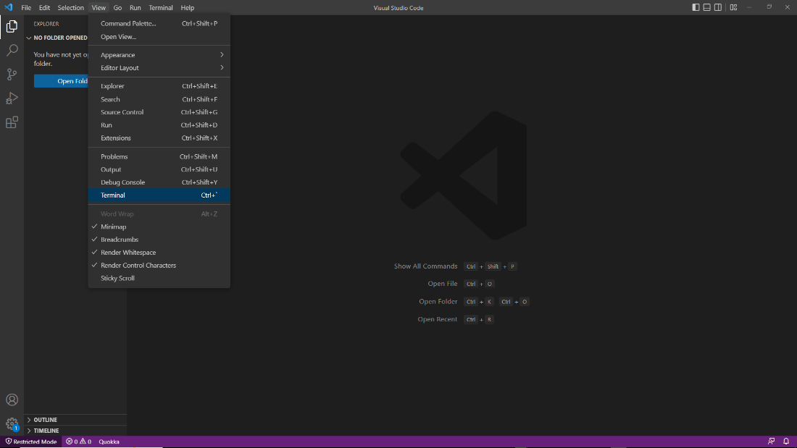
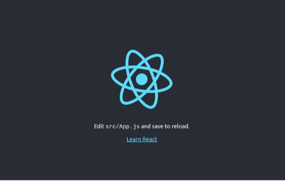
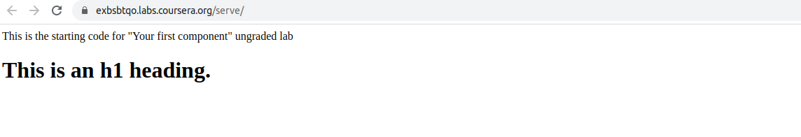
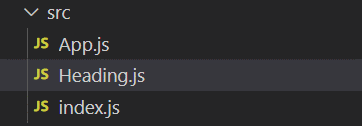
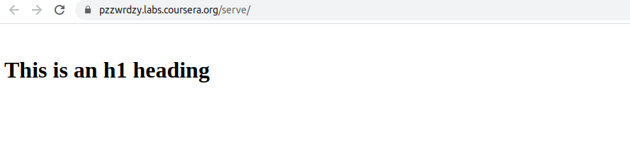
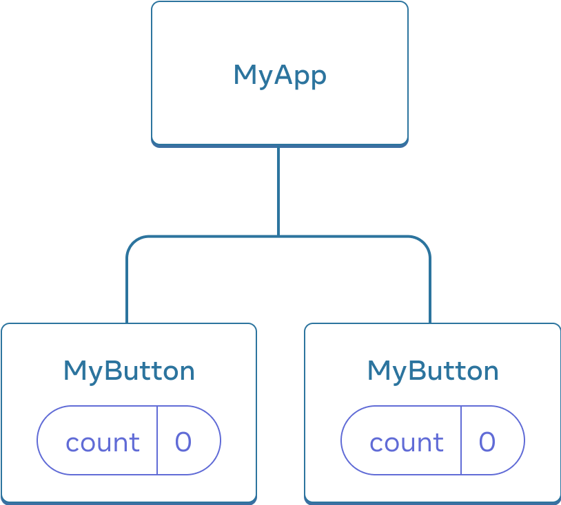
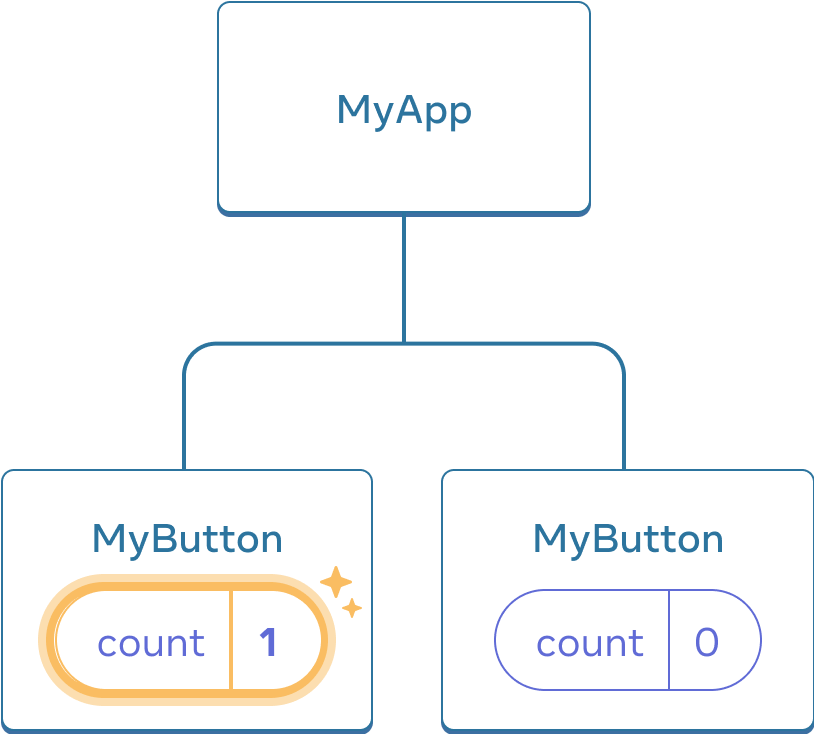
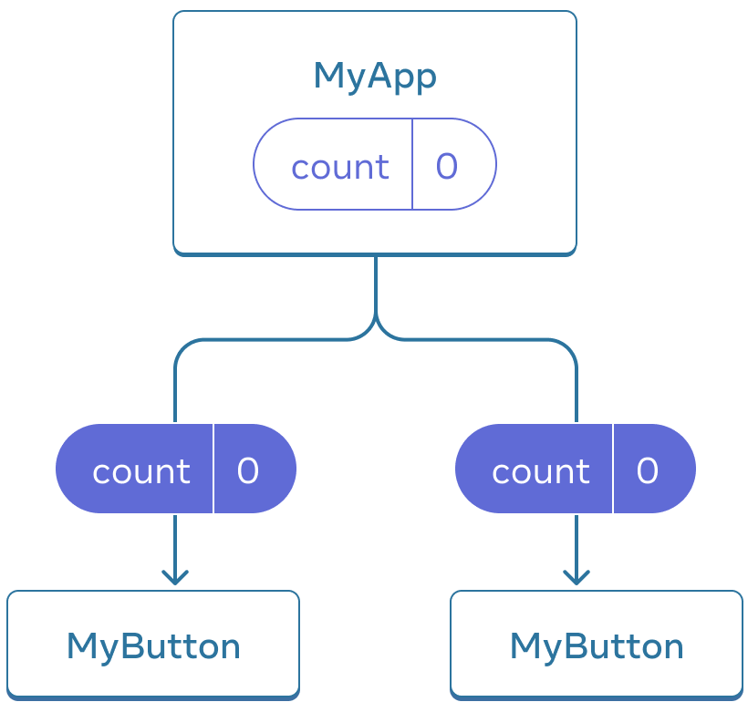
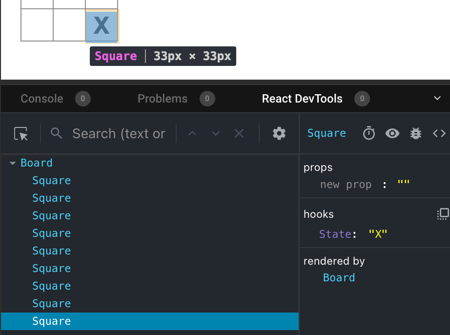

266
266


React is a powerful JavaScript library that you can use to build user interfaces for web and mobile applications (apps).
In this 4-week course, you will explore the fundamental concepts that underpin the React library and learn the basic skills required to build a simple, fast, and scalable app.
By the end of this course (React basics), you will be able to:
Use reusable components to render views where data changes over time,
Create more scalable and maintainable websites and apps,
Use props to pass data between components,
Create dynamic and interactive web pages and apps,
Use forms to allow users to interact with the web page,
Build an application in React,
You’ll gain experience with the following tools and software:
React.js
JSX
React
HTML, CSS and JavaScript
VSCode (or other, BETTER, editors with less bullshit), like notepad++,
You will be able to leverage the potential of this course to develop new skills, improve productivity, act effectively with data and boost your career.
This is a beginner course for learners who would like to prepare themselves for a career in mobile development.
To succeed in this course, you do not need prior development experience, only basic internet navigation skills and an eagerness to get started with coding.
01. Introduction to the course: React Basics 9
02. How is React used in the real world? 11
03. Course syllabus for React Basics 13
Module 3: Navigation Updating and Assets in React 14
Module 4: Portfolio Mini-Project (Calculator App) 15
JavaScript fundamentals and ES6 17
Package Manager (Node + npm) 18
05. JavaScript modules, imports - exports 19
Importing a Module that was Exported as Default 21
07. Setting up a React project in VS Code, NP++ or Sublime 23
Working with Labs in this course 23
[https://www.coursera.org/learn/react-basics/supplement/7e8Ea/working-with-labs-in-this-course] 23
Opening the built-in VS Code terminal and running npm init react-app command 24
10. Introduction to functional components 36
11. Creating React components 43
14. The React project structure 53
15. Customizing the project 60
17. Creating and importing components 72
18. Additional resources (React components) 74
19. Principles of Components: Props 74
21. Using props in components 82
27. JSX syntax and the arrow function 104
Components as Function Expressions 104
Components as Arrow Functions 105
Using Arrow Functions in Other Situations 106
28. Embedded JSX expressions 107
29. Ternary operators and functions in JSX 110
A different way of writing an if...else conditional 110
Using ternary expressions in JSX 111
Using function calls in JSX 112
31. Embedding in attributes 115
33. Module Summary – React Components & where they live 122
34. Additional resources (React Basics - Week 1) 125
05. Event handling and embedded expressions 140
Handling events using inline anonymous ES5 functions 141
Handling events using inline anonymous ES6 functions (arrow functions) 141
Handling events using separate function declarations 141
Handling events using separate function expressions 142
07. Dynamic events & how to handle them 148
08. Additional resources (Data & State) 150
09. Parent-child data flow 151
19. React state management 185
21. Managing state in React 195
Week 3 - Navigation, Updating and Assets in React.js 200
01. Basic Types of navigation 200
How Does a Single-Page App Work? 206
An Example of a Single-Page App 208
Practical Differences Between Single-Page Apps and Multi-Page Apps 208
Anchor Tag Elements in Single-Page Elements 209
04. Solution: Creating a route 215
06. Applying conditional rendering 223
Consider a minimalistic productivity app. 224
Conditional rendering with the help of element variables 225
Conditional rendering using the logical AND operator 225
07. Conditional components 226
08. Single view conditional updates 228
10. What is an asset and where does it live? 231
13. Solution: Displaying images 240
16. Create an audio / video component 246
17. Solution: Song selection 249
18. Module summary: Navigation, Updating and 253
Week 4 - Your first React app 258
01. Course recap: React Basics 258
02. Exemplar: Build a calculator app 261
03. Build a tic-tac-toe app 264
Inspecting the starter code 267
Passing data through props 272
Making an interactive component 275
Why immutability is important 288
Storing a history of moves 295
Step 1: Break the UI into a component hierarchy 310
Step 2: Build a static version in React 312
Step 3: Find the minimal but complete representation of UI state 313
Step 4: Identify where your state should live 314
function FilterableProductTable({ products }) { 315
const [filterText, setFilterText] = useState(''); 315
const [inStockOnly, setInStockOnly] = useState(false); 315
Step 5: Add inverse data flow 317
Add React to an existing project 320
04. Congratulations, you completed React Basics! 320
Welcome to React basics.
In this course, you'll be introduced to the basics of working with React.

During this module (one), you'll learn how to develop a working familiarity with a basic structure and use of the React.js library.
Explore the concepts and practical use of state and stage management and discover how to set up navigation and make use of assets in your React apps.
You'll begin by learning how to work with React to build modern user interfaces or UIs on websites front ends.
This involves the concept of standalone parts of the User Interface or UI.
These standalone bits of UI are commonly referred to as components.
You'll explore components in more detail later in this module.
For now, it's enough for you to know that every website's UI is built on a foundation of components and composability.

Simple components combined into more complex ones, which eventually merge to form a website.
A website can essentially be viewed as a highly complex component.
Components and website UIs are not to limited to React.
There's a part of the reason why React is so popular, is because it streamlines the process of building and composing components.
React does this efficiently and without a significant impact on your browser's resources.
Another major topic that will be discussed in this course is working with state in React apps.
You'll learn a lot more about state as you go through the course.

But for now, here's a simple definition of state.
State is simply all the values of all the variables your app is working with at any given point in time.

As you progress through this course, you'll also learn about how to style your React apps, which includes the reuse of common styles.
Setting up your apps to respond to events such as clicks and user-submitted data, creating navigation routes and using assets and you'll finish off the course with a portfolio of projects where you'll apply your new knowledge.
I hope you're as excited as I am to begin this course on React basics.
Let's get started…
There are plenty of React based apps that you've probably used before.
Facebook and Instagram are two examples.
But Netflix, Airbnb, New York Times, and a variety of other companies also use React for their websites as well, so you've likely encountered it before.
These websites that tend to have really interactive UIs are more likely to be using something like React.
Facebook.com was not performing and not modern looking after the 10 or so years it had been in use. They had milked that cow dry.
Really the only option at that point was to rewrite it on a different stack that was going to be faster and easier to build on.
Basically, there was a need for having a truly fast and responsive UI and React fills that need.
Facebook has been rewritten using React.
React is open sourced, meaning that anyone can contribute to it, without dues and licensing crap. Unlike Apple, Microsoft, and EVERYONE else! ‘Thank you’ goes out to Linus Benedict Trivolds, creator of GitHub and the first Linux kernel. You are an inspiration to humanity, and more specifically, every programmer ever. You’ve given more than Apple, Microsoft, & IBM have ever produced. And you ask for nothing in return. Linus, you are a tribute to humanity.
But we also have developers who aren't at Meta who are also contributing to React (for free), and that means that there's a really strong community around React (all for free to meta, a trillion-dollar company). Something wrong with this picture you say? Hell yes, I say.
A lot of people are really excited to build on it and make improvements to it.
If you ever have any questions or an (free) ideas about a certain feature or optimization or improvement, there's really a great opportunity to actually contribute to the React library itself.
There's a React team at Meta, and this team is comprised of engineers (really?) who are working on React full-time.
But there's also a group of developers outside of Meta who are contributing to React as well.
I think the open source part of it is really cool just because there's such a community around React, it's constantly being updated and maintained.
There's always going to be someone available to answer questions or to update documentation, it's very current.
If you're using React for the first time, definitely take a look at our documentation.
There are a lot of conversations being had about React online, and we actually have a React conference every year where we talk about new features with React and you can just connect with a lot of React developers.
There are plenty of opportunities to get involved in the React community, and I think it makes building with React even more rewarding if you connect with the community as well.
By the end of this section (03), you will have learned about the scope of things to be covered in this course.
To take this course, you should understand the basics of HTML, CSS, and JavaScript. Additionally, it always helps to have a can-do attitude!
This course is an introduction to React development.
By the end of this course, you will know how to build a simple user interface using React.
This course consists of 4 (four) modules. They cover the following topics:
React is an increasingly popular JavaScript framework for building isomorphic web applications. It is developed and used by Facebook.
In this introductory module, you'll learn about what React is and where it is used. You'll also learn how to set up your coding environment so that you have as productive a learning experience as possible. So, the purpose of this module is to understand the ‘what’ and the ‘why’, and to get set up for the modules that follow.
Components are one of the foundations of React. In React, everything revolves around components. You'll learn how to build components, how to structure and customize your React projects, and how to compose layouts by importing components into other components.
You'll learn about passing data from one component to another. You'll learn about JSX syntax in React and how to use it to structure and style your components.
By the end of this module (one) you will be able to:
Explain the concepts behind React and component architecture.
Describe how to use assets within an app to apply styling and functional components.
Create a component to service a specific purpose.
Create a folder and demonstrate how to create and import files within that folder.
Use and manipulate props and components to effect visual results.
The second module of this course deals with working with events and errors in React. You'll learn how events work and how you can handle them in React. Handling events can sometimes get a bit tricky, so you'll also learn about dealing with errors related to events in React.
By the end of this module (two) you will be able to:
Use common methods to manage state in React.
Detail the concept and nature of state and state change.
Describe the hierarchical flow of data in React.
Describe how data flows in both stateful and stateless components.
Use an event to dynamically change content on a web page.
Describe some common errors associated with events and the syntax required to handle them.
In this module (three), you'll learn about routing and navigation in React. You'll learn how to render partial views and how to update routes in your React apps. You'll understand how assets are used, bundled and embedded.
By the end of this module (three) you will be able to:
Use media assets, such as audio and video, with React.
Demonstrate how to manipulate image assets using reference paths.
Explain the folder structure of a React project in terms of embedded or referenced assets.
Demonstrate the conditional implementation and rendering of multiple components.
Create and implement a route in the form of a navbar.
Describe navigation design in React, with a focus on single and multi-page navigation.
This module (four) is focused on a practical mini project of building a calculator app in React. Upon completing this module, you'll have coded your own mini project in React, as a starting point for building your React portfolio.
You have now learned about the scope of things you will cover in this course.
By the end of this module (four) you will be able to:
Synthesize the skills from this course to create and style a React component.
Reflect on this course's content and on the learning path that lies ahead.
Do you know the fundamentals of HTML, CSS and JavaScript? Perhaps you learned about these technologies from another course. Either way, a quick summary will be useful so let's explore some fundamental HTML, CSS and JavaScript principles and practices.
In this section (04), let’s take a practical approach, and revisit some of the development techniques you'll need to be comfortable with before learning React.
To get the most out of this course on React basics, you should first understand the fundamental methods and concepts of JavaScript. Otherwise, you may feel like you’re a child learning to run before you can walk.
React is a declarative, efficient, and flexible JavaScript library for building user interfaces. It lets you compose complex UIs from small and isolated pieces of code called “components”.
React apps are built using modern JavaScript features, which are commonly known as ES6. Developers use React to develop Single Page Applications. And you can also develop mobile applications with React Native.
As an aspiring developer, you may opt for a ‘learn as you go approach’ regarding JavaScript and React. But this may not help your productivity and even at times frustrate you. This is because you may confuse code or functionality that is plain JavaScript, or code that is React.
For example, with a solid foundational knowledge of JavaScript, you can quickly identify code that is JavaScript ES6 and code that is React. And throughout this course, there will be help for you along the way with some friendly reminders.
Also, keep in mind that you are using React to build user interfaces which also include HTML and CSS code.
Let’s begin with the fundamental HTML knowledge needed to learn React.
Recall that HTML is used to describe the structure of Web pages. Developers use HTML elements with their opening and closing tags to “mark up” an HTML document.
These elements form the structure of a web page and describe what to display to the web browser.
When it comes to HTML it's important to know about:
The purpose of HTML in the web browser,
The use of HTML tags and correct syntax,
How HTML elements are used in a web document,
Another important concept to know about when you're talking about HTML is the Document Object Model, or DOM.
Users need to be able to interact with elements on a web page. This means that an HTML document must be represented in a way that JavaScript code can query and update it. And that's the function of the DOM. It's a model of the objects in your HTML file.
And web developers interact with the DOM through JavaScript to update content, set up events and animate HTML elements.
Before you learn React, it’s advisable that you are comfortable with the following HTML tags and concepts
<html>
<head>
<body>
<div>
<h1>…<h6>
<p>
<ul><li>
<b><i>
<img src="">
<a href="">
<link>
<title>
<meta>
<header>
CSS (Cascading Style Sheets) is the code that you use to style HTML. You need to be familiar with basic CSS concepts before you start learning React. This is because you will need to style your React components as well, and basic CSS knowledge will help your learning journey.
Before you learn React, make sure you are comfortable with these CSS styling options:
Font styling (font size, font color, etc.)
Flex Box Layout (Layout of items using CSS Flex Box Layout)
CSS Selectors
Position, Padding, Margins and Display
Colors, Background and Icons
You can refresh your knowledge of HTML and CSS in the Meta course titled: Introduction to Front-End Development.
[https://www.coursera.org/learn/introduction-to-front-end-development]
React is completely written in JavaScript and uses the more modern version of JavaScript which is ES6. While learning React, you should already know JavaScript fundamentals.
JavaScript is the programming language and React is a JavaScript UI library. This means the first step is to be proficient at JavaScript.
Here are some of the JavaScript topics that you need to be comfortable with before you begin your journey learning React.
Data types,
Using var, let and const,
Conditionals and Loops,
Using objects, arrays and functions,
ES6 Arrow functions,
In-built functions such as map(), forEach() and promises,
Destructuring Arrays and Objects,
Error Handling.
React is a UI library, and you will encounter that many times you will need to add other packages to your React application.
A package in JavaScript contains all the files needed for a module.
To install these packages effectively and manage their dependencies you can use a package manager like NPM (Node Package Manager).
You can install npm by installing Node.js, which will then automatically install npm.
You need to be comfortable with using npm as your package manager, since you will be using npm to install packages within your React application.
Make sure you are aware of how to do the following with npm before you get started on this course.
Installation command to install npm modules in your project,
Installing a package as a dev dependency,
Start command,
Updating npm version,
Navigating around the package.json file.
Once you have become confident with these skills, you’ll be in a better position to learn and apply React concepts and prepare yourself for development of React apps.
To refresh your knowledge of JavaScript and the basics of Node and npm, please visit Meta course titled: Programming with JavaScript.
[https://www.coursera.org/learn/programming-with-javascript/home/week/1]
Before you start creating the next great app, let’s explore a little more about modules.
Modules can help you to save and access your code in a more structured way, and in this section (05), you'll learn about some foundational concepts of working with JavaScript modules.
This knowledge is crucial in order to understand the syntax and the logic behind how the example React apps in this course are put together.
This section (05) will cover the three main concepts:
JavaScript modules,
Module exports,
Module imports.
In JavaScript, a module is simply a file.
The purpose of a module is to have more modular code, where you can work with smaller files, and import and export them so that the apps you build are more customizable and have more composable parts.
A module can be as simple as a single function in a separate file.
Consider the following function declaration:
function addTwo(a, b) {
console.log(a + b);
}
Say that you have a file named addTwo.js that contains only the above code.
How would you make this file a JavaScript module?
All that you would need to do to make it a JavaScript module is use the export syntax.
There is more than one way to export a module in JavaScript.
While all the various syntactical differences are not listed, here are a few examples that will cover all the ways that the importing and exporting of JavaScript modules will be done in this course.
In general, there are two ways to export modules in JavaScript:
Using default exports,
Using named exports.
You can have one default export per JavaScript module.
Using the above addTwo.js file as an example, here are two ways to perform a default export:
export default function addTwo(a, b) {
console.log(a + b);
}
In the above example, you’re adding the export default keywords in front of the addTwo function declaration.
Here's an alternative syntax:
function addTwo(a, b) {
console.log(a + b);
}
export default addTwo;
Named exports are a way to export only certain parts of a given JavaScript file.
In contrast with default exports, you can export as many items from any JavaScript file as you want.
In other words, there can be only one default export, but as many named exports as you want.
For example:
function addTwo(a, b) {
console.log(a + b);
}
function addThree(a + b + c) {
console.log(a + b + c);
}
If you want to export both the addTwo and the addThree functions as named exports, one way to do it would be the following:
export function addTwo(a, b) {
console.log(a + b);
}
export function addThree(a + b + c) {
console.log(a + b + c);
}
Here's another way you could do it:
function addTwo(a, b) {
console.log(a + b);
}
function addThree(a + b + c) {
console.log(a + b + c);
}
export { addTwo, addThree };
Just like when exporting modules in JavaScript, there are several ways to import them.
The exact syntax depends on how the module was exported.
Say that you have two modules in a folder.
The first module is addTwo.js and the second module is mathOperations.js.
You want to import the addTwo.js module into the mathOperations.js module.
Consider the previous example of exporting the addTwo function as a default module:
// addTwo.js module:
function addTwo(a, b) {
console.log(a + b);
}
export default addTwo;
To import it into the mathOperations.js module, you could use the following syntax:
import addTwo from "./addTwo";
// the rest of the mathOperations.js code goes here
So, you could start this import with the import keyword, then the name under which you’ll use this imported code inside the mathOperations.js file. You would then type the keyword from, and finally the location of the file, without the .js extension.
Contrast the above import of the default addTwo export with the different import syntax if the addTwo function was instead a named export:
import { addTwo } from "./addTwo";
// the rest of the mathOperations.js code goes here
In this section (05), you've learned about the very basics of what modules are in JavaScript, why they are used and how they get exported and imported.
The examples you've seen here are the core of how you'll deal with imports and exports of various modules in the example React apps on this course. However, please note that there are many more caveats, rules, and implementations of working with modules in JavaScript.
The examples given in this section (05) are there just to make it easier to comprehend what is happening in React apps that you'll be building in this course. The intent of this section (05) was just to get you familiar with the most common syntax used - not as a comprehensive overview of modules in JavaScript.
Below you will find links to helpful additional readings.
nodejs.org [https://nodejs.org/en]
npmjs.com [https://www.npmjs.com/]
reactjs.org [https://react.dev/]
create-react-app.dev [https://create-react-app.dev/]
VS Code [https://code.visualstudio.com/]
Notepad [https://notepad-plus-plus.org/] to truly know & utilize React and NOT VS code.
Sublime [https://www.sublimetext.com/]
In the 40+ years I’ve worked with Microsoft products, I have yet to see anything they’ve done better than everyone else. They can copy, like the Russians did of the Space Shuttle. But that is the extent of Microsoft’s knowledge. Individually, a lot of intelligence. But collectively, they ain’t shit.
To complete the exercises in this course you have been provided with a dedicated lab environment set up specifically for you to apply the skills that you have learned.
You can find out more about Working with Labs in this course by accessing the link below:
You can also use VS Code to practice these exercises on your local machine as an alternative option.
To follow along in this section (07), you need to have Node.js and VS Code already installed on your computer. If you don’t have this setup, please refer to the Programming with JavaScript course:
[https://www.coursera.org/learn/programming-with-javascript]
Setting up VS Code – actually slower than frozen molasses.
[https://www.coursera.org/learn/react-basics/resources/SSPnG]
[https://www.coursera.org/learn/react-basics/resources/FTd5h]
In VS Code, you're ready to start a brand new React project.
You can do it using npm.
When Node.js is installed on a computer, npm comes bundled with it.
With npm, you can:
Author your own Node.js modules ("packages"), and publish them on the npm website so that other people can download and use them,
Use other people's authored modules ("packages").
So, ultimately, npm is all about code sharing and reuse. You can use other people's code in your own projects, and you can also publish your own Node.js modules so that other people can use them.
An example npm module that can be useful for a new React developer is create-react-app:
[https://create-react-app.dev/]
While this npm module comes with its own website, you can also find some info on the create-react-app project on GitHub:
[https://github.com/facebook/create-react-app]
Whenever you run the npm command to add other people's code, that code, and all other Node modules that depend on it, get downloaded to your machine.
However, although it's possible do to so, this is not really necessary, at least in the case of the create-react-app Node module.
In other words, you can avoid installing the create-react-app package but still use it.
You can do that by running the following command: npm init react-app example, where “example” is the actual name of your app. You can use any name you’d like, but it’s always good to have a name that is descriptive and short.
In the next section, you'll learn how to build a brand-new app that you can name: firstapp.
In VS Code, click on View, Terminal to open the built-in terminal.

Now run the command to add a brand new React app to the machine:
$ npm init react-app my-firstapp
The installation and setup might take a few minutes.
Here's the output of executing the above command:
The installation and setup might take a few minutes.
Here's the output of executing the above command:
Creating a new React app in /home/pc/Desktop/firstapp.
Installing packages. This might take a couple of minutes.
Installing react, react-dom, and react-scripts with cra-template...
added 1383 packages in 56s
190 packages are looking for funding
run `npm fund` for details
Initialized a git repository.
Installing template dependencies using npm...
npm WARN deprecated source-map-resolve@0.6.0:
See https://github.com/lydell/source-map-resolve#deprecated
added 39 packages in 6s
190 packages are looking for funding
run `npm fund` for details
Removing template package using npm...
removed 1 package, and audited 1422 packages in 3s
190 packages are looking for funding
run `npm fund` for details
6 high severity vulnerabilities
To address all issues (including breaking changes), run:
npm audit fix --force
Run `npm audit` for details.
Created git commit.
Success! Created firstapp at /home/pc/Desktop/firstapp
Inside that directory, you can run several commands:
npm start
Starts the development server.
npm run build
Bundles the app into static files for production.
npm test
Starts the test runner.
npm run eject
Removes this tool and copies build dependencies, configuration files
and scripts into the app directory. If you do this, you can’t go back!
We suggest that you begin by typing:
cd firstapp
npm start
If you follow the suggestions from the above output, you'll run: cd firstapp, and then npm start.
This will end up with the following output in the built-in terminal:
Compiled successfully!
You can now view firstapp in the browser.
Local: http://localhost:3000
On Your Network: http://192.168.1.167:3000
Note that the development build is not optimized.
To create a production build, use npm run build.
webpack compiled successfully
Again, following the instructions, opening a browser with the address bar pointing to http://localhost:3000, will show the following page in your browser:

This means that you've successfully:
Set up your local development environment,
Run the create-react-app npm package (without installing it!),
Built a starter React app on your local machine,
Served that starter React app in your browser.
After you've built your starting setup, in Module 2 you'll start working with the basic building blocks of R+eact: components.
React is used everywhere in the tech world and you'll have the chance to use it throughout your career. It's a very valuable skill set to have.
I feel like in school you tend to do a lot of object-oriented programming which uses inheritance.
React doesn't use any of that.
It uses something called composition.
That was a little bit difficult to think about, but there's so much documentation around React and such a strong community that it's easy to pick up.
You have support coming from so many different places.
You can just go onto YouTube and watch a video, read through the documentation, or look at other open source projects that use React.
There are so many resources to pull from. I would say React is the best choice for an app if your UI is really custom and you're looking for a lot of flexibility with what other libraries you can integrate for your app or website.
React is just a front-end library.
You're going to need to interact with other third-party libraries too, and if you want the flexibility of integrating with redux or other third-party libraries, React is the perfect choice for you.
React is also great if you have complex UIs where you want to reuse code across many different pages.
I think it's a great choice if you're building a complex website with a ton of features across a ton of different pages. I would say the biggest competitor of React is Angular.
Angular is a bit different from React in that it's a full-fledged solution for an app or website.
You don't really need to integrate with third-party libraries when using Angular.
Whereas with React, it's just a client-side library.
You do need to figure out how you're going to do routing and server client communication.
I would say React provides more flexibility with creating these complex costume UIs.
Whereas angular makes it easier to create a single page web application with like an out-of-the-box solution.
Learn by doing, try to make an example app.
Don't go and try to create the most complex app you've ever heard of.
I would say start simple. Make sure you're using best practices.
Continuously reference documentation to see if you're using hooks the way you're supposed to and that thing.
It should come pretty easily.
I think one of the great benefits of React is how easy it is to pick up and learn.
There are a lot of different pieces of React and a lot of different concepts to learn.
But it's really well worth it in the end because you're going to encounter React in your day-to-day work.
Hopefully for the rest of your career.
There's a huge community behind you ready to help answer questions about React too.
Recall the concept of the single-page application or SPA for short?
This is a one-page website where some of the pages content changes based on user interaction.
SPA differ from traditional website, where each web page needs to be loaded as the user navigates around the site.
This frequent reload can be considered inefficient as some of the same content such as logos, navigation, and footers need to be loaded again.
And one of the most popular ways to build a SPA is with the React library from Meta.
React used to run many of the world's most popular websites.
.
Often on these sites, you will type a search term into the sites input box.
The site then returns the relevant content or results.
But you might notice that even though the content has updated, the sites URL doesn't change.

As SPA’s only load the content as required, they can be ideal for businesses and enterprises who need a web app that offers rich user interfaces, speed scalability, & flexibility.
As an aspiring developer, you may feel like there are a lot of new concepts and processes to understand when working with React but you can be sure that you will have an opportunity to get familiar with and use them.
In this section (09), you will learn about the basics of React by exploring the concepts of the component-based architecture components and the virtual DOM.
Let's begin with components.
One of the core building blocks of React.

When meta released the React library, it included the concept of something called component-based architecture.
This is essentially a design philosophy for building software based on reusable components of code.

Each component consists of well-defined functionality that can be inserted into an application without requiring modification of other components.

Because components are reusable, they can be used multiple times and easily inserted anywhere we're needed.
This results in components that can exist within the same space yet interact independently from each other.

One of the advantages of development using components is that many developers can work on the same project without interfering with the code of other developers' components.
As you may recall, modern front-end web development revolves around the concept of creating standalone parts of the user interface, or UI for short.
Well, in react, these standalone parts are created using components which form the foundation of all UI design.
It's important to know that all UI is composed of simple components that can be combined into more complex components.
In fact, you can think of an entire website is just a collection of components.

For example, consider the product check out page of an e-commerce web application.
The page consists of three sections, a header, a payment section, and a sidebar.

The header section contains the company logo with a navigation menu and a button to view the shopping cart.

The payment section area contains a form where the user inputs their payment information.

Finally, there's a sidebar with the order summary information.

As the components are self-contained, they have their own HTML, CSS, and JavaScript logic for functionality.
For example, the payment section component has a JavaScript function that submits a payment when a button is clicked.
It's important to know that the use of components in website UI design is not limited to just React.

Many website's front end or UI are built on the foundations of components and compose ability.
But React is a powerful tool for streamlining the process of building components and composing them.
It performs these actions efficiently as components are rendered to the DOM without significantly impacting the browser's resources.
This is called component rendering and you'll learn more about this and its associated render method later.
 You may recall that the DOM is a logical tree-like structure representing
the HTML document and it uses nodes to describe the various parts of the
document.
You may recall that the DOM is a logical tree-like structure representing
the HTML document and it uses nodes to describe the various parts of the
document.
Before React, you could still build components style layouts.
However, it involved much more complicated DOM manipulation and code making the layouts more complex and harder to work with.
This resulted in something known as spaghetti code, a term developers use in web development to describe code that is complex, convoluted, and difficult to understand like spaghetti.
React prevents this spaghetti code by avoiding any manipulation of the DOM.

Instead, React provides something known as the virtual DOM.
You may recall that this is an in-memory representation or clone of the real DOM which minimizes updates to the DOM itself.
React uses the virtual DOM to update the browser Dom only when needed.
This ensures that the update is as minimal as possible, increasing the application speed and performance.
In this module, you learned about the basics of React by exploring the concepts of the component-based architecture components and the virtual DOM.

Recall how you learned about functions in JavaScript?
They are reusable blocks of code that can take an input, perform some procedure or calculation, and then return an output.
Well, a React component acts much like a traditional JavaScript function. In this section (10), you'll continue your exploration of the structure of the React architecture by learning about functional components.
Component types, JSX and trans piling.

React provides two types of components, functional components and class components.
They behave very similar in React to traditional functions, and classes in JavaScript.
Don't worry about class components for now.
You'll learn more about them later.
Instead, let's just focus on functional components, which act like a JavaScript function.

In the default React application, only one component is rendered and it's the app components located inside the index.js file that's located inside the source folder.

It's important to know that every React app must contain at least one component, and it's called the root component.
This component is loaded using the import statement.
You'll learn more about the import statement in React later.
For now, just know that it's used to import code needed for React to work, such as the import React and import React DOM statements.
The syntax to render a component is very similar to a self-closing tag in HTML, you just place the component name inside the left and right-angle brackets and don't forget the forward slash.

The roots components can contain other components that developers create to represent the various UI part of the application.

Like in the e-commerce example that you learned about earlier.
Recall that this component is ultimately converted to a DOM fragment and placed into the existing DOM as a child of the HTML div element with an ID of roots.
This div element is then rendered to the browser.
If you analyze the app component, you'll notice that it looks very similar to a JavaScript function with some HTML code inside.

You may also notice an export default statement. You'll learn more about this soon.
For now, just know that you need it to make your components available.
Now that you're familiar with the concept of functional components, let's explore how web developers create them in React.

React is scripted using a special syntax called JavaScript XML or JSX.
For many Reacts developers, this is known as a syntax extension to JavaScript.
What is JSX syntax like? Let's find out by going back to our React default app component.

Recall that in the return statements of the app function, it seemed that some HTML content is returned.
Well, this content is not exactly HTML.
It's JSX. JSX syntax looks very similar to HTML.
What are its advantages is that it allows you to write JavaScript code inside what looks like HTML elements?
In fact, you can think of JSX as a combination of custom HTML and JavaScript.
This allows you to make your website dynamic.
You'll learn more about the differences between HTML and JSX later.
For now, just know that you can place this syntax inside the return statement of a functional component.

It's also important to note that a React component won't render until it's used as a JSX element just like a JavaScript function declaration and won't run until it's called or invoked.
Now you know what JSX is.
Let's explore the steps involved to create a React components which will contain some JSX code inside a heading 1 HTML element to display some text on a webpage.
First, you create the component, which is basically just a JavaScript file, since its purpose is to return some heading text, you name the file Heading.js.

Notice that the first letter of the component name is capitalized.
This is because there's a difference in how React treats capitalized, and non-capitalized component names.
It's important to remember that all component names in React must be capitalized. Why is this?
Well, because React treats lowercase components as regular HTML elements.
Capitalizing a component name helps React to distinguish JSX elements from HTML elements.
 Now let's continue with our component. Next inside the app.js file, create a
function named Heading.
Now let's continue with our component. Next inside the app.js file, create a
function named Heading.
The function name must also be declared using a capital letter for the first letter of the function.
Then inside the function body, you create a variable named title and assign it the string value of this is some heading text.
Now you're ready to create the return statement of the function.

Inside the parentheses of the return, insert a heading 1 tag, and inside it places the variable named title.
To make React evaluate the title variable, you need to place it inside curly brackets.
If you didn't use curly brackets, you'd get the word title instead of this is some heading text.
At this point, it's worth remembering that while you are creating HTML like syntax, you are actually coding inside a JavaScript file.
Because of this, you can output a variable inside your JSX code, something you cannot do when writing static HTML.
The overall syntax instructs React to render the heading HTML element with whatever text value that is stored within the variable named title.

This rendering happens behind the scenes because of something called trans piling.
You can think of trans piling as a process of converting JSX to HTML and you'll learn more about this later.
In this section you learned about functional components and how to create them in React.
You also learned about JSX, which acts like a combination of HTML, CSS, and JavaScript that you can use to generate dynamic content inside your functional components.
Finally, you explored the concepts of rendering and trans piling.
If you'd like to learn about these concepts in more detail, there's a link to an additional section (10) at the end of this lesson.
In this section (11), you will further explore the concepts of components in React and learn how to create a component from scratch.
You'll be introduced to the concept of the export statements and how components can be used to create reusable blocks of code.
I've launched VS Code here, and I have the creating components folder open in the built-in terminal.

Now, I'll execute the command npm init, React app dot.
The dot character instructs VS Code to run this command in the current folder.
In other words, I'm using Create React app to build a new app for me inside this folder.
I execute this command by pressing the Enter key.

I wait for the app to build, and once it's ready, I can start the app by typing npm then a space followed by start.
The process of building the React app could take a couple of minutes, so just sit tight while it builds.
Great. My React app has started and loaded in the browser at localhost:3000 which is the local server.

Notice that I have all these files and folders in the left pane of VS Code now, such as node modules, public SRC, and files like package. json.
You'll learn more about these later.

For now, the only folder I need to work in as the SRC folder.
Don't worry about all these other files and folders. Instead, I want you to focus on how to build a component in React.
To do that, let's have a clean start.

The easiest way to do this is to remove all the code inside the function inside the app.js file.
I guess you might say this is the simplest possible component. I'm declaring an app function and I'm exporting it as a default module.

I save my file and notice that my app is just a blank page.
Now, let me create another component that will contain some texts that I want to display in the browser.

To do this, I create another function called header, and in the function body, I'll just return some greeting texts inside an H1 JSX elements.
Inside the H1 I type, Hello world.
My code looks good now, but my screen is still white.
This is because I'm not yet rendering anything from my app function.
To do this, I need to return to my app function and call the header function from it.
I use the JSX elements syntax to render a component which is the name of my function.
Inside the body of the app function, I create the return statement and type the function name of header inside left and right-angle brackets, not forgetting to add the forward slash before the right-angle bracket.
Notice that the syntax to render a component is very similar to a self-closing tag in HTML.
Press Control S or Command S, if you're on Mac to save everything again.

Great, my code is working now.
I notice in HTML heading with the text Hello World displayed in the browser. Congratulations.
In this section (11), you learned how to create a functional component.
These components named app calls another component named header, which displays an HTML heading with some text.
At the moment, the header component code exists in the same file as the app component.
To make the header component isolated and reusable, I need to place it in its own file.
Then I can reuse it multiple times in the application anytime I want to display a heading element with some texts, and you'll learn how to do this very soon.
In this module, you'll learn how to create a functional component in React, and render it to the root components named app.js.
By the end of this section (12), you will have learned how a component is built.
Components are a nice way to build websites in React because they allow you to build more modular apps. However, how do you build components using React, JSX, and JavaScript? You'll learn how this works in this lesson item.
A browser cannot understand JSX syntax.
This means that making a browser understand React code requires a lot of supporting technologies.
An example of such a technology is a transpiler.
A transpiler takes a piece of code and transforms it into some other code.
To understand why this is done, here is an example of an ES6 variable declaration:
const PI = 3.14
This is perfectly valid ES6 syntax.
However, if you were using a very old computer, that computer will have an old browser. Perhaps that browser was built before ES6 came out in 2015. This means that the JavaScript engine that is built into your old computer's browser is likely to be an ES5 JavaScript engine.
In ES5, the only way to declare a variable is the following:
var pi = 3.14
What this means is that for this old browser to understand the ES6 code, the only way to do it is by transpiling it. If you feel like it, you can try transpiling ES6 to ES5 code yourself, using the es6console website.
Now, let’s move the focus to another example of transpiling.
Let's say that you want to use a brand new, most modern ECMAScript syntax in an app. The only problem is that this new syntax is currently not supported by any browser; even an up-to-date browser.
However, by transpiling the new most-modern JavaScript syntax into something that modern browsers can understand, it is able to convert some code that the browser cannot comprehend, into code that it can comprehend, run, and produce a result from.
Likely the most popular site that shows off how this works is Babel (https://babeljs.io/). As the heading of the website reads, "Babel is a JavaScript Compiler".
This finally brings you to the point of this discussion about transpiling JavaScript code.
What Babel does is this: it allows you to transpile JSX code (which cannot be understood by a browser) into plain JavaScript code (which can be understood by a browser).
This is where React and JSX come in.
For React code to be understood by a browser, you need to have a transpiling step in which the JSX code gets converted to plain JavaScript code that a modern browser can work with.
To demonstrate how this works, let’s use the Heading component from the previous lesson.
Add the JSX code into the online Babel repl. Repl stands for "read-eval-print loop" and it accepts code you write, evaluates it, and produces some result. In the specific case of the online Babel repl, that result is some transpiled code. Here's a more detailed explanation.
If you've visited the above-linked URL, you'll find a web page that has two panels. On the left, there's source JSX code:
function Heading(props) {
return <h1>{props.title}</h1>
}
... and on the right, there's the transpiled, plain JavaScript code:
"use strict";
function Heading(props) {
return /*#__PURE__*/React.createElement("h1", null, props.title);
}
If you now analyze the difference between the source JSX code and the transpiled, plain JavaScript code, dis-regarding the comment, here's the body of the Heading function:
React.createElement("h1", null, props.title);
So, here you have a React object, and this object has a createElement() method on it. The method is invoked with three arguments:
"h1"
null
props.title
The first argument is the DOM element to render - in this case, an h1 element.
The second property is any HTML attribute that should be added, and there's a null here - meaning, there should be an object with some data, but there isn't any data so instead of the object there's the null value.
The third property is the contents of the inner HTML of the DOM element specified as the first argument - in this case, the contents of the inner HTML of the h1 element.
Now let’s use Babel again, and this time transpile the render syntax for the Heading component:
<Heading title="This is the heading text!"></Heading>
Again using the Babel repl, and as can be confirmed in the link, the output of the tranpilation is the following code:
"use strict";
/*#__PURE__*/
React.createElement(Heading, {
title: "This is the heading text!"
});
Again, you have the React.createElement() method call, and this time, the first item to render is Heading, and then you have an object as the second argument (instead of a null that you had in the previous transpilation example).
This brings me to an interesting question: What is the minimum code that a component must have to be able to show something on the screen when rendered?
You can see the answer below:
function Example() {
return <div>An element</div>
}
export default Example
Here is the completed solution code for the App.js file:
function Heading() {
return (
<h1>This is an h1 heading.</h1>
)
}
function App() {
return (
<div className="App">
This is the starting code for "Your first component" ungraded lab
<Heading />
</div>
);
}
export default App;
Here is the output from the solution code for the App.js file:

Step 1: In the starting code, you already had a JSX element named <Heading /> , being rendered from the App component, since it is a part of the App component's return statement.
function App() {
return (
<div className="App">
This is the starting code for "Your first component" ungraded lab
<Heading />
</div>
);
}
export default App;
Then, you added a new function to the App component, and named that function Heading (). You placed it at the very top of the App.js file.
function Heading() {
}
Step 2: Next, in the body of the Heading component, you added a return statement and spread it over several lines by following it up with an opening and a closing parenthesis.
function Heading() {
return (
)
}
Step 3: Then, inside the parentheses, you added the following code:
<h1>This is an h1 heading</h1>
function Heading() {
return (
<h1>This is an h1 heading.</h1>
)
}
Step 4: Finally, you saved your changes and viewed the app in the browser.
As you might already be aware, it's important to organize or structure your React components so that they're easy to access.
But what does the structure look like?
What files and folders are found within a typical React application?
The React project structure is the focus of this section (14).
By the time you reach the end of this section (14), you have:
learned how to explain the default folder structure of a React project,
outline the benefits of the folder structure,
customize the folder structure to hold components and assets, and
explain the benefits of planning folder use for app development.
Let's begin by examining how the default files and folders are laid out in a React app project.

When you build a React app using the command npm init React app, your project is comprised of a specific file and folder structure.
Notice that there are three folders named node modules, public, and SRC or source.
Let's explore each of these folders briefly now.

First, let's begin with the node modules folder.
You can think of this folder as a repository for all the modules in your React app.
The node modules folder is automatically added when you install a specific npm package.
You might recall the packages or groupings of files and/or node.js modules.
Developers use packages when they want to add a piece of functionality that someone else coded and made available to other developers via the npm ecosystem.
Don't worry too much about the node modules folder.
For now, just be aware of it and that it's needed for your React app to work.

Next is the public folder, and it contains the assets that will be displayed to the user in your app.
For example, image files for logos, the favicon, which displays an icon in the browser tab, and the robots.txt file, which is used for search engine optimization.
Also, there is a manifest.json file, which is used to provide some metadata to a device when you're React powered web app is installed on it.

While all these files are necessary, the most important one to know about for now is index.html.
A React app gets injected into the specific elements inside the body of the index HTML file.
Based on changes happening inside our React app, it injects those updates in that same div of index HTML.
You'll find out more about how this works later on in the course.

Finally, let's explore the contents of the SRC or source folder.
This folder contains all the essential component files required to ensure that a React app functions.
Notice that there are some files already in this folder.
These were automatically created when I use the npm command Create React app to build a starter React app.
As a React developer, you probably spend most of your time within this folder, so let's get a little more familiar with some of these files now.
You may be familiar with some of them already, such as index.js and app.js, which are used to render the root components of the app.
Let's briefly explore the others.

App.css contains the styles for the app.js components, and the index.css file contains the styles to use in the entire app.
App.test.js, setupTests.js, and the reportsWebVitals.js are files related to the app's performance and testing.
The logo.svg file is displayed on the start page of the default app when the app is displayed in the browser on the local host.
While these can be useful and the functionality is important, I can still safely delete them without affecting React's abilities to create a very basic application.
I just need to also remove the code that references them.
This is because React doesn't have opinions on how you organize your files and folders in the source folder.
However, there are a few common approaches popular in the ecosystem and you'll learn about them soon.

It's that this point is also worth remembering that the most important file in the entire source folder is the index.js file.
This file imports everything that this React app needs to render a working React app.
Now you have explored the main folders, let's explore the files and the root of the default app.

Root files are additional files that are found in the root of the project folder itself and include a gitignore file, two json files, and a README file.

The .gitignore file is using version control and it's used to specify what files and folders must be excluded from a project.
It's important to note that this file is not specific to React.
This means that other systems use this file too.

The README.md file is a markdown file that gives some basic information on this project.
Developers use this when they want to share the project's code on sites like GitHub.

The package.json file lists information pertaining to my app, which allows npm to run several scripts and perform various tasks in the app itself.

Finally, the package-lock.json file holds the list of all dependencies with a specific version.
The package.json file helps npm rebuild the app on another machine.
Or if we delete the node modules folder with all the files that our project needs to run, the package-loc.json file has all the information for npm to be able to rebuild those files reliably.
This file is there to ensure the npm tracks all the modules installations properly.
As a general rule, it's better to leave these files where they are for the moment as they are required for the app to function.
You should now be able to explain the default folder structure of a React project and outline the benefits of the folder structure.
In addition, you should know how to customize the folder structure to hold components and assets and be able to explain the benefits of planning folder use for app development.
Good job.
So far, you’ve learned about React components, but now you will focus on learning how to customize the project. You will learn about the software development approach, detailing the creation of separate associated files, the requirements gathering and the subsequent folder structure to be created.
Imagine that you've been given the task of building a somewhat more complex website layout using React.
At this point, you still don't know too much about how React works, but even with your limited knowledge, you can still build some relatively interesting designs.
Currently, you need to build a simple typography-focused layout for a coding blog.
This means that you will not have to use images, which simplifies your task significantly.
The layout you're supposed to build will consist of the following sections:
Main navigation
Promo (main advertisement)
A list of newest posts' previews (intros)
The footer
Keeping in mind the above structure, how would you organize your code?
This is where React docs can help.
They suggest two approaches:
Grouping by features
Grouping by file type
They also advise not to nest folders too deep, and to keep things simple and not overthink it.
They even say that if you're just starting out, you shouldn't spend more than five minutes setting up a project.
Taking this advice into account, you might say that for a small project like this, you could keep it as simple as just adding a components folder and moving all your components into it. This is exactly what you’ll do next.
Since this is app's focus is on customization, let’s name the app customizing-example.
What follows is the command to run in a suitable folder on your own computer. By "a suitable folder", I mean: "a folder where you feel comfortable installing a boilerplate React application". This also includes that the folder you chose will need to be accessible for your user on your OS (Operating System).
$ npm init react-app customizing-example
This will produce a brand-new starter app with a familiar structure.
Inspecting the src folder of the starter app, it looks like this:
src/
App.js
App.test.js
index.css
index.js
logo.svg
reportWebVitals.js
setupTests.js
Then simply add a components folder to it, like this:
src/
components/
App.js
App.test.js
index.css
index.js
logo.svg
reportWebVitals.js
setupTests.js
Since the components folder is currently empty, you can add a component for each of the sections of the typography-focused blog. Here's the structural update:
src/
components/
Nav.js
Promo.js
Intro1.js
Intro2.js
Intro3.js
Footer.js
App.js
App.test.js
index.css
index.js
logo.svg
reportWebVitals.js
setupTests.js
At this point, there's no need to complicate things. You have the Nav component, the Promo component, the Intro1, Intro2, and the Intro3 component. Finally, there's also a Footer.js component.
This means you've fully planned the app, based on some best practices as suggested by the official React docs website, and based on the level of complexity of the project itself. Since this project is relatively simple, this structure feels right.
In this section (15), you’ll just build all the components inside the components folder, and then, in the upcoming lesson items, import them into the App.js file.
For now, let’s just build those components. After you've added the components folder, you’ve also added all the functional component files. Since they are all currently empty, you can start adding them, one by one.
Here’s the contents of the Nav.js file:
function Nav() {
return (
<nav className="main-nav">
<ul>
<li>Home</li>
<li>Articles</li>
<li>About</li>
<li>Contact</li>
</ul>
</nav>
);
};
export default Nav;
Next, you can focus on the Promo.js file:
function Promo() {
return (
<div className="promo-section">
<div>
<h1>Don't miss this deal!</h1>
</div>
<div>
<h2>Subscribe to my newsletter and get all the
shop items at 50% off!</h2>
</div>
</div>
);
};
export default Promo;
Once you’ve finished the promo section, you can focus on the Intro components.
Here's Intro1.js:
function Intro1() {
return (
<div className="blog-post-intro">
<h2>I've become a React developer!</h2>
<div>
<p>I've completed the React Basics course and I'm happy to
announce that I'm now a Junior React Developer!</p>
<p className="link">Read more...</p>
</div>
</div>
);
};
export default Intro1;
Here's the code for the Intro2.js component:
function Intro2() {
return (
<div className="blog-post-intro">
<h2>Why I love front-end web development</h2>
<div>
<p>In this blog post, I'll list 10 reasons why I love to work
as a front-end developer.</p>
<p className="link">Read more...</p>
</div>
</div>
);
};
export default Intro2;
You can finish the previews for my blog posts with the code for Intro3.js component:
function Intro3() {
return (
<div className="blog-post-intro">
<h2>What's the best way to style your React apps?</h2>
<div>
<p>There are so many options to choose from. Here's a high-
level overview of the popular ones.</p>
<p className="link">Read more...</p>
</div>
</div>
);
};
export default Intro3;
There's just one more thing left to code, the Footer component, so here it is:
function Footer() {
return (
<div className="copyright">
<p>Made with love by Myself</p>
</div>
);
};
export default Footer;
Now that you have completed all the components for the app, here are a few more interesting things about the syntax.
These are:
The use of the className attribute in JSX
The use of separate components for repetitive code
Where are all the props?
Why was I not using the <a> element for empty links?
Now let’s briefly discuss the four bullet points above.
Why use the className attribute in the JSX syntax?
Well, with JSX, it looks like HTML so much that it's easy to forget that it's actually JavaScript code - not HTML.
While regular HTML does indeed have a class attribute, which is used to list one or more CSS classes to be used on a given HTML element, this cannot really work in JSX.
The reason is that JSX is a special kind of JavaScript syntax, and the word class is a reserved keyword in JSX.
That's why the React team had to make a compromise and so className is used in JSX to list one or more CSS classes to be used on a given element or component.
But why use Intro1.js, Intro2.js, and Intro3.js? Isn't one of the tenets of coding the DRY approach - that is, the "Don't repeat yourself" approach?
Indeed, it is. However, there are still a few concepts to discuss before you learn how to re-use a single component with variations in its content.
This has to do with data in components, but don’t worry, we’ll be getting to that later.
The third question is about the props object. It has been mentioned before, but so far it hasn't been used. It hasn’t been used in this example either.
The answer to this question has to do with the next lesson, titled Component Use and Styling.
In this lesson, you’ll see in practice how you can make components work better, with the help of props.
The final question is about not using the <a> element for empty links in my app.
The answer here depends on whether those links are "internal" - inside an app, or "external", meaning, leading to some external link, such as; https://www.coursera.org.
If the links are internal to the app - as they are envisioned here - using the <a> tag is simply not the React way of doing things. You'll learn why that is the case when discussing the use of React Router.
Having finished this section (15), you have now learned about the React
software development approach,
detailing the creation of separate associated files,
the requirements gathering, and
the subsequent folder structure to be created.
One of the advantages of component-based architecture is that your app is split up into individual self-contained components.
As you have already learned, these components can be used to build powerful UIs based on reusable components of code.

In order to create a fully functioning React app, you need to create a collection of components.
But with the app broken into several different components, you might be wondering how do you locate and integrate them all into your app.
In this section (16), you'll learn about the concept of modules and how to manage your React components by placing them in a components folder.
Finally, you'll explore the structure of the import and export statement.
As a developer, you often need a way to use and reuse components that may have been defined elsewhere or created by someone else.
For example, do you recall the concept of modules in JavaScript?

Modules are standalone units of code that you can reuse again and again.
Being standalone means that you can add them to your programs, remove them, and replace them with other modules and everything will still work.
Well, in React, you can make use of this JavaScript feature to separate your components by placing them in their own file.

Then you can use the import and export statements to make the false communicate with each other.
The export statement is used to make a module available to another module.
It helps to think of every JavaScript file as a module.
Then in order to make the functions and variables available to other files, you need to export them, which makes them available by the import statement.

In JavaScript, there are two types of exports, default exports and named exports.
The default export is used when the function name is the same as the file name and named exports are used when you want the function name to be different from the file name.
At this point, you may be wondering what is the difference between modules and components, since they are both essentially just JavaScript files?
You are right.
While they have similarities, it can help to think of a component as a single part or small piece of functionality like a button.

Then you can think of a module as something that's larger than just one component like a series of components.
This technique of splitting your code into several modules is known as modular programming, and it complements the component-based architecture of React.
To help you understand this better, let's explore the following scenario.

Suppose you're a developer currently in the process of building an application with React and there are several components that needs to be included in the app.
Some of the required components have already been created by your fellow developers, so you need a way to import them into your app.
To do this, you need to use the operation known as importing.
In React, you import components into your application using the import statements.

You may have already noticed the import statement in the default index.js file, where the app component is rendered.
In React, to import a component, you use the keyword import, followed by the component name you want to import.
Then you use the keyword from, to specify the location of where the component is located.
You need to use a file name sequence, such as a dot forward slash before the file name, but the file name extension is not required.
Now you know about the syntax of the import and export statements. Let's explore how you construct your components in React.
Remember that a component is essentially just a JavaScript file.
React doesn't have strict rules on how you put files into folders, however, there are a few common approaches you may want to consider.

One approach is to place all components in a folder named components.
This allows you to structure your projects by grouping similar files together.

For example, suppose you are building a payment page for an e-commerce app.
The page contains three sections that will each be represented by a component in React.


First, a Header section using a component called header, then a Payment section using a component called main, and finally, a Sidebar using a component called sidebar.

Each component will be called and have its contents returned to the root components of our application, which is app.js.
In this section (16), you've explored the concept of modules and the structure of the import and export statement. You also learned how to manage your React components by placing them in a components folder.
Here are the contents of the Heading.js file:
function Heading() {
return (
<h1>This is an h1 heading</h1>
)
}
export default Heading;
Here are the contents of the App.js file:
export default App;
</div>
);
}
return (
<div className="App">
<Heading />
Here is a screenshot of the src folder:

Here is the output from the solution code for the App.js file:
.
Step 1: You moved the Heading function from App to a separate component file, named “Heading.js”.
function Heading() {
return (
<h1>This is an h1 heading</h1>
)
}
export default Heading;
Step 2: Next, you imported the Heading component into the App component.
import Heading from "./Heading";
Step 3: Finally, you removed the sentence that reads: This is the starting code for “Your first component” ungraded lab - so that only the Heading JSX element remains in the return statement of the App component.
import Heading from "./Heading";
function App() {
return (
<div className="App">
<Heading />
</div>
);
}
export default App;
By now, you should be familiar with the concept of functional components in React. They are reusable blocks of code that act much like a JavaScript function.

Recall that in JavaScript, you can make your functions more flexible by declaring them with parameters that allow you to pass in values as arguments when you call the function. Well, in React, you can perform a similar action using something called properties, which are represented as props.

In this section (19), you will learn about the props object and how developers use it to pass data from one component to another. Then you'll explore component hierarchy and learn why components are set to have a parent-child structure.
Before you begin your journey with props, let's revisit another piece of JavaScript functionality that will help you understand how props work. It's called the JavaScript object. Recall this in JavaScript, an object is a special type of variable that can contain many values.

You use objects when you need to store groups of related data of different types. Each data type is known as an object property, for example, suppose you create an object called fruits that contains properties for type, quantity, and color.

Remember that these properties consist of name-value pairs, and you can access the object's properties using dot notation.

In React, you can use a similar technique to pass data from one component to another using the properties object or simply props. Props allow you to pass data from one component to another. It's helpful to think of props as arguments a component can accept and are passed using JSX syntax, much like HTML attributes. Inside the function, you use the keyword props.
Now that you're familiar with the concept of props, let's explore an example to send some props to a component and print them out in a React app.

Suppose you have the default code for the React app open in the index.js file, you call the app component. Inside the app component, you return an h1 heading with some static title text. While this code works, you can make this heading dynamic by using props.

Let's now explore the syntax involved to create this. In the root component, index.js, you send the value you want to pass to the app component as an argument in the form of an HTML attribute. Next, in the app component, you accept this argument using the props object. To do this, you add the keyword props to the function declaration inside of the parentheses. Finally, to access this object's properties, you use dots notation to reference the name of the object property that was passed as an argument by the HTML attribute.

Once again, remember to enclose your code inside curly brackets so React knows that you want to work with the props object and not static text.
Because props is essentially a JavaScript object, it can accept many data types ranging from simple types such as strings and integers to more complex types such as functions, arrays, and objects. As a result, props allow developers to have greater flexibility when creating and working with components, especially when you want the flow of data in your app to be dynamic.
While you just explore the basic example to dynamically print a heading, you'll get a chance to practice with more complex data structures using props later.
Now you're familiar with how props work by sending data between components. Let's explore this data flow in a little more detail.
When two components communicate with each other, the component sending the props data is known as the parent, and the component receiving the props data is known as the child.

As you've just learned with the example earlier, this parent-child relationship allows parent components of past data down to child components using props.
It's also possible for parent components to send the same data to multiple child components. However, it's important to know that this communication is a one-directional data flow. It's not possible to communicate from the child component back to the parent components using props. Instead, developers use other approaches. Don't worry about that for now. You will learn more about them later.
Although props are a very powerful tool in React, they do have some limitations. For example, you just learned about how it's not possible to send data from the child component back to the parent component using prompts.

Another important limitation has to do with something called pure functions. In programming, a pure function is a function that will always return the same outputs for the same argument values that are passed in. Don't worry too much about pure function for now. Just keep in mind that in React, when you declare a component using props, it must never modify its own prompts.
In this section (19), you learned about how props are used to pass data to components. You discovered that a prop is a special react object that works in a similar way to a JavaScript object, and that its properties can be accessed by dot notation. You also learned why developers use props in order to make their apps more dynamic and flexible. Finally, you examined some of the limitations about using props in that you cannot use them to send data back to a parent component, and the functions using props must never modify its own props.
Recall that much like parameters in a JavaScript function which allow you to pass in values as arguments, React uses properties, or props, to pass data between components. But how exactly do they work?
In this section (20), you’ll use a transpiler to break JSX code to plain JavaScript, making its purpose more understandable.
Remember first that JSX code in React is just syntactic sugar - meaning, a nicer way to write some hard-to-read code.
For the browser to understand this syntactic sugar, you need to transpile JSX down to plain JavaScript code. You have a resource online, at the URL of babeljs.io, which allows you to inspect the results of this transpiling. Once you visit the website, make sure to navigate to the Try it out link in the main navigation.
For example, let’s say you have a component that returns a piece of JSX:
function App() {
return <h1>Hello there</h1>
}
… if you used the Babel transpiler to transpile this JSX syntactic sugar code down to plain JavaScript code, you’d get back some unusual code:
"use strict";
function App() {
return /*#__PURE__*/React.createElement("h1", null, "Hello there");
}
You just want to focus on the React.createElement("h1", null, "Hello there"); part. You can ignore the rest.
This means that the createElement function receives three arguments:
The wrapping element to render.
A null value (which is there to show an absence of an expected JavaScript object value).
The inner content that will go inside the wrapping element.
Interestingly, the inner content that will go inside the wrapping element can also be a call to the createElement function.
For example, let’s say you have a slightly more complex JSX element structure:
function App() {
return (
<div>
<h1>Hello there</h1>
</div>
)
}
… the transpiled return statement in plain JavaScript again returns two createElement functions:
"use strict";
function App() {
return /*#__PURE__*/React.createElement("div", null, /*#__PURE__*/React.
createElement("h1", null, "Hello there"));
}
If you format this output, remove the "use strict" line, and remove the __PURE__ comments, you get a more readable output:
function App() {
return React.createElement(
"div",
null,
React.createElement("h1", null, "Hello there")
);
}
So now the third argument of the outer-most React.createElement call is another React.createElement call.
This means that a nested JSX structure is just a bunch of nested React.createElement calls, passed in to other React.createElement calls as their third argument.
The second argument of null can – in this case – be replaced with an empty object.
In that case, your code would contain a pair of curly braces instead of the word null:
"use strict";
function App() {
return React.createElement(
"div",
{},
React.createElement("h1", {}, "Hello there")
);
}
This object is referred to as the props object. It is the main mechanism of sending data from a parent component to a child component in React.
The way this works is described in React docs using the following code:
React.createElement(
type,
[props],
[...children]
)
This is the inner content that will go inside the wrapping element. It's what makes it possible to nest elements inside other elements, mimicking the way that HTML works.
In this section (20) you’ve learned how to use a transpiler to break JSX code to plain JavaScript, making its purpose more understandable.
By now, you should be familiar with the concept of props, and that they allow you to pass data from one component to another. Developers use props when they want the flow of data in the app to be dynamic. This makes the app more versatile, helping it consume data easier.

In this section (21) you'll learn the syntax involved to use props and components. You'll also explore the passing of props to and within a component using functions.
During this course you were introduced to an example of how to build a simple blog layout in react using components.

Now you'll be introduced to a new component called the Nav component. Developers commonly build navigation menus using html on ordered lists. A navigation menu is basically just a list which can be styled easily with CSS, such a snippet of code is well suited to be placed in its own react component. Making use of the HTML Nav elements to act as the block of code to return the JSX from it inside the function.


For example, the return statement can contain several HTML like elements, such as U L and L I tags. And this same Nav component can also be rendered as a JSX element to which we can pass dynamic value with props.
In order to do this successfully you need to be comfortable with the concept of attributes. The best way to develop an understanding of attributes is with a live example of building a component using props.

Here's a practical way to work with props. I'm in my app with the header main and sidebar components and all of them are rendered from the app component.
The app component in this case is referred to as the parent component and the header main and side ball components are referred to as the Children of the app component. They are passed data from the app components to each of its Children components.

First the header component receives a name prop, with a value of ANNA and a color prop with the value of purple. I'm sending those props from the header JSX element inside the app components return statement. Press control S, or command S on a Mac to save these changes.
However, my re compiled app is not showing any changes because I send this data through the props object to the header component. I'm not using this data and the header component.

So let me open the head of component and I'll first pass in the props object. For now, I'll just console log the props object Again Press control S, or command s to save the update and wait for it to compile.
If I inspect this object in the console, I find the console logged props object and it comes with two properties, the name ANNA and the color purple. I can now access the values of the two properties inside the header component using props dot name and props dot collar.

To make sure that the expressions are evaluated inside the JSX syntax, I must surround them with an opening and a closing curly brace. I press control S or command S on the MAC again, and wait for it to compile. Now my header shows the prop state received from the parent component. I'll now update the main and sidebar to.

Back in the app components render statement, I add the greet prop with the value of howdy in the main JXS element, and the value of high in the sidebar JXS element. I opened the main components file and receive the props object Then outputs the value of opening curly brace props dot greet, closing curly brace. I can now delete the Hello string.

Similarly in the sidebar components file, I'll also receive the props object and replace the Hello with an opening curly brace props dot greet, closing curly brace. I click file, save all and wait for the apps to compile.
All my components are now using the data they received from their parent components using their respective props objects.
You should now be able to effectively demonstrate the passing of props to and within a component using classes and functions.
Here is the completed App.js file:
import Heading from "./Heading";
function App() {
return (
<div className="App">
<Heading firstName="Bob" />
<Heading firstName="Any name other than Bob" />
</div>
);
}
export default App;
And, here is the completed Heading.js file:
function Heading(props) {
return (
<h1>Hello, {props.firstName}</h1>
)
}
export default Heading;
Here is the output from the solution code for the App.js file:

Step 1: First, you pass the props object as a parameter to the Heading component in the 'Heading.js' file.
function Heading(props) {
return (
<h1>Hello, </h1>
)
}
export default Heading;
Step 2: Next, inside the Heading component’s body, you locate the return statement, and add a JSX expression that accesses the firstName property of the props object, inside the return statement's h1, after Hello.
function Heading(props) {
return (
<h1>Hello, {props.firstName}</h1>
)
}
export default Heading;
Step 3: Then, inside the App component's return statement, you locate the <Heading /> JSX element, and add the attribute of firstName and give it the value of Bob.
import Heading from "./Heading";
function App() {
return (
<div className="App">
<Heading firstName="Bob" />
</div>
);
}
export default App;
Step 4: You save all your changes and run the app to preview the updates in the browser, and confirm that the page shows an h1 element with the text that reads "Hello, Bob".
Step 5: Then, you change firstName to any name other than ‘Bob’ and see how the page updates with the new name.
import Heading from "./Heading";
function App() {
return (
<div className="App">
<Heading firstName="Any name other than Bob" />
</div>
);
}
export default App;
Step 6: Finally, you add a second <Heading /> after the first one. Again, adding the firstName attribute and choosing another name for this value.
import Heading from "./Heading";
function App() {
return (
<div className="App">
<Heading firstName="Any name other than Bob" />
<Heading firstName="Jack" />
</div>
);
}
export default App;
At this point in the course, you've been introduced to the concept of JSX, and how it's used to interact with components.
In this section (23), you will explore JSX in more detail in the context of components and styling.
You'll also learn how to mix JavaScript, HTML, and CSS within a component.

What is it that makes JSX so special? In one word, expressiveness. Developers can express what they want to react to render using a very expressive syntax, almost identical to HTML or XML. In other words, JSX allows developers to write HTML directly inside the JavaScript code.

For example, you can add navigation function to a website by creating a nav component. Then place the HTML semantic nav element, and an unordered list inside. Because this is React, the list values can be made dynamic by passing values as props. It’s important to note that a regular JavaScript function is used to define how React should render the component wherever it's referenced using the nav JSX elements. This is what makes JSX so powerful, like the fact that you can insert specific JSX expressions such as variables and props.
The reason why this is so great to work with, is because anything that's placed inside the curly braces of the code is essentially regular JavaScript code.

For example, you could calculate a series of simple expressions using the <li> or list item tag. This means that you can think of the curly braces as being special areas where you can write any kind of JavaScript code you like. You can write the rest of the code inside the return statement.

Now that you've learned a little more about JSX expressions, let's focus on some JSX rules inside the return statement of the function.
The return statements can be thought of as the area of expressive syntax that allows you to write regular HTML code as you'd like to have it in your rendered app. But if you need to return HTML code over multiple lines, it must be placed inside parentheses. This allows developers to alternate between regular HTML tags, and dynamic values represented as JSX expressions inside curly braces.


It's also important to remember that the HTML code must be wrapped in a top level element, such as a div tag.
If you do not want to add extra div elements to the DOM, you can use something called a fragment instead. This is like an HTML open and close tag without the tag name. While you can think of the code inside the return statement is regular HTML, it's worth remembering you are in a JavaScript file, and as a result, there are some differences.

For example, you cannot use the keyword class to work with CSS classes in your HTML elements. This is because class is a reserved keyword in JavaScript. You must use a slightly different keyword called className instead.
Also notice that class name is written in Camel Case, which depicts the separation of words by using a single capitalized letter. You can use className to list any number of CSS classes to style a specific JSX element inside a component.
This is just like how you use a class attribute in regular HTML. It's only one of the many ways you can style React apps. You'll learn more about how to do this later.

For now, just know that this is the closest to what you would do if you were working with HTML and CSS website layouts. There are some other differences, and you'll learn about them later. But in practical terms, you can consider the code to be pretty much just like regular HTML.
In this section (23), you explored further the concept of JSX styling, and how it's used in React. You have now furthered your understanding of how to use JSX to mix JavaScript, HTML, and CSS within a component.
Previously, you learned that you could pass props to and within a component. But there is also a special prop known as props.children, which is automatically passed to every component. In this section (24), you’ll learn about props.children and what its purpose is.
To understand the concept of props.children, consider the following real-life situation: you have a couple of apples, and you have a couple of pears. You'd like to carry the apples some distance, so obviously, you'll use a bag.
It's not a "bag for apples". It's not a "bag for pairs". It's just a bag. Nothing about this bag makes it such that it needs to be referred to as a bag in which you'd only and always carry apples, nor a bag in which you'd only and always carry pears.
In a way, the bag "doesn't care" if it is used to carry apples or pears. Nothing about the bag changes. There are no changes in the bag's material, size, shape, or color - because it can handle apples or pears being carried inside of it, without issues.
Now, consider the following component:
function Apples(props) {
return (
<div className="promo-section">
<div>
<h2>These apples are: {props.color}</h2>
</div>
<div>
<h3>There are {props.number} apples.</h3>
</div>
</div>
)
}
export default Apples
There is also a Pears component:
function Pears(props) {
return (
<h2>I don't like pears, but my friend, {props.friend}, does.</h2>
)
}
Now, the question is this: Let's say you want to have a Bag component, which can be used to "carry" Apples or Pears. How would you do that?
This is where props.children comes in.
You can define a Bag component as follows:
function Bag(props) {
const bag = {
padding: "20px",
border: "1px solid gray",
background: "#fff",
margin: "20px 0"
}
return (
<div style={bag}>
{props.children}
</div>
)
}
export default Bag
So, what this does in the Bag component is: it adds a wrapping div with a specific styling, and then gives it props.children as its content.
But what is this props.children?
Consider a very simple example:
</Example>
The Hello there text is a child of the Example JSX element. The Example JSX Element above is an "invocation" of the Example.js file, which, in modern React, is usually a function component.
Now, did you know that this Hello there piece of text can be passed as a named prop when rendering the Example component?
Here's how that would look like:
<Example children="Hello there" />
Ok, so, there are two ways to do it. But this is just the beginning.
What if you, say, wanted to surround the Hello there text in an h3 HTML element?
Obviously, in JSX, that is easily achievable:
<Example children={<h3>Hello there</h3>} />
What if the <h3>Hello there</h3> was a separate component, for example, named Hello?
In that case, you'd have to update the code like this:
<Example children={<Hello />} />
You could even make the Hello component more dynamic, by giving it its own prop:
<Example children={<Hello message="Hello there" />} />
So, given the Bag, Apples, and Pears examples from the beginning of this section (24), armed with this new knowledge, how can you make it work?
Here's how you'd render the Bag component with the Apples component as its props.children:
<Bag children={<Apples color="yellow" number="5" />} />
And here's how you'd render the Bag component, wrapping the Pears component:
<Bag children={<Pears friend="Peter" />} />
While the above syntax might look a bit weird, it's important to understand what is happening "under the hood".
Effectively, the above syntax is the same as the two examples below.
<Bag>
<Apples color="yellow" number="5" />
</Bag>
<Bag>
<Pears friend="Peter" />
</Bag>
You can even have multiple levels of nested JSX elements, or a single JSX element having multiple children, such as:
<Trunk>
<Bag>
<Apples color="yellow" number="5" />
<Pears friend="Peter" />
</Bag>
</Trunk>
So, in the above structure, there's a Trunk JSX element, inside of which is a single Bag JSX element, holding an Apples and a Pairs JSX element.
Before the end of this section (24), consider this JSX element again:
<Bag>
<Apples color="yellow" number="5" />
</Bag>
In the above code, Apples is a prop of the Bag component. To explain further, the Bag component can wrap the Apples component, or any other component, because I used the {props.children} syntax in the Bag component function declaration. In other words, just like in the real world, when you take a bag to a grocery store, you can “wrap” a wide variety of groceries inside the bag, you can do the same thing in React: wrap a wide variety of components inside the Bag component, using the children prop to achieve this.
It's crucial to understand this when working with React.
Before the end of this section (24), there's another important concept that you need to be aware of: finding the right amount of modularization.
What does this mean? Imagine, for example, that you had a number of small bags, and that each bag could only carry a single apple or pear. You'd end up having to wrap each "apple" inside a "bag". That doesn't make much sense. You can think about components making your layouts modular in a similar way. You don't want to have an entire layout contained in a single component, because that would be very difficult to work with.
On the flip side, if you made each HTML element in your layout a separate component, that would make it very hard to work with, although such layout would be modular.
So it's all about moderation.
You need to organize your layouts by splitting them into meaningful areas of the page, and then code those meaningful areas as separate components. that would constitute the right amount of modularity. To reinforce this point, It might help to think of it in terms of how a person would describe a website: there's a menu, a footer, the shopping cart, etc.
In conclusion, when you see a JSX element wrapping some other JSX element, you can easily understand that it's all just props.children in the background.
You’ve observed that JSX is incredibly versatile, and can accept a combination of JavaScript, HTML and CSS.
In this section (25), you'll learn some approaches for styling JSX elements and doing so in a way that achieves both a functional and visual aspect within an app.
There are various ways to style JSX elements.
Probably the simplest way to do this is using the link HTML element in the head of the index.html file in which your React app will mount.
The href attribute loads some CSS styles, probably with some CSS classes, and then, inside the function component's declarations, you can access those CSS classes using the className attribute.
function Promo(props) {
return (
<div className="promo-section">
<div>
<h1>{props.heading}</h1>
</div>
<div>
<h2>{props.promoSubHeading}</h2>
</div>
</div>
);
}
In CSS:
.promo-section {
font-weight: bold;
line-height: 20px;
}
Another way to add CSS styles to components is using inline styles.
The syntax of inline styles in JSX is a bit custom.
Consider a starting Promo component, containing code that you encountered earlier:
function Promo(props) {
return (
<div className="promo-section">
<div>
<h1>{props.heading}</h1>
</div>
<div>
<h2>{props.promoSubHeading}</h2>
</div>
</div>
);
}
export default Promo;
Now you can add some inline styles to it:
function Promo(props) {
return (
<div className="promo-section">
<div>
<h1 style={{color:"tomato", fontSize:"40px", fontWeight:"bold"}}>
{props.heading}
</h1>
</div>
<div>
<h2>{props.promoSubHeading}</h2>
</div>
</div>
);
}
export default Promo;
You can start updating the Promo component by adding the JavaScript expression syntax:
<h1 style={}>
As explained previously, this means that whatever code you add inside these opening and closing curly braces is to be parsed as regular JavaScript. Now let’s add a style object literal inside of these curly braces:
<h1 style={{color:"tomato",fontSize:"40px"}}>
You can then re-write this object literal:
{
color: "tomato",
fontSize: "40px"
}
So, there's nothing special about this object, except for the fact that you’ve inlined it and placed it inside a pair of curly braces. Additionally, since it's just JavaScript, those CSS properties that would be hyphenated in plain CSS, such as, for example, font-size:40px, become camelCased, and the value is a string, making it look like this: fontSize:"40px".
Besides inlining a style object literal, you can also save it in a variable, and then use that variable instead of passing an object literal.
That gives you an updated Promo component, with the styles object saved as a JavaScript variable:
function Promo(props) {
const styles = {
color: "tomato",
fontSize: "40px"
}
return (
<div className="promo-section">
<div>
<h1 style={styles}>
{props.heading}
</h1>
</div>
<div>
<h2>{props.promoSubHeading}</h2>
</div>
</div>
);
}
Using this approach makes your components more self-contained because they come with their own styles built-in, but it also makes them a bit harder to maintain.
Recall that there are three techniques to include CSS and HTML documents.

The first is in line by utilizing the style attribute inside the HTML element. Next is internal by using the style elements in the head section. Finally, external by linking to an external CSS file using the link element.

In this section (26), you'll learn how to take CSS style rules from an external file named index.CSS and add it inside a component as an internal style.
The style rules can then be referenced by your code inside the return statement of the component.

Notice that the components are styled by the external style sheet, index dot CSS.
For this section (26), I'll continue working on an app which consists of the components header, main and sidebar. This time the focus will be on using internal styling inside the sidebar components. To demonstrate this, I don't need to move all the code from the index.CSS file. Instead, I'll just focus on the style as it is related to the sidebar components.
For example, I select the CSS code for a site and cut it by pressing Control X or Command X on Mac. After saving, notice that this removes the styling from the sidebar components displayed in the browser. Now let's go to the sidebar.js file where I'll paste the code before the return statement. This will not affect my component because I'm pasting CSS code into a JavaScript file.

I need to make some changes to turn the CSS rule into a JavaScript object. To do this, I need to declare a site style as a const variable and then replace the semi-colons and the code with commas. I also need to replace the hyphenated names with camelCase.

It's important to know that because CSS declarations like background are now an object property, I need to make their respective values a string by wrapping them inside double quotes.

I also need to repeat this for the other new tile elements as well. Finally, inside the a site tag and return statements of the component, I need to add a style attribute by typing style equals aside style as a JSX expression. I then choose save all in the file menu to save my changes.

Notice that the sidebar components appears in the browser as before I edited the index.CSS file.
That's an example of using inline CSS styling directly inside a component.

In this section (26), you learned how to take CSS style rules from an external file named index.CSS and added inside a component as an internal style.
Up to this point, you’ve likely only observed ES5 function declarations used to define components in React. However, this is not the only way to do it.
In this section (27), you will learn about some alternative approaches, specifically by using function expressions and arrow functions.
Function Expressions
Let’s start with a function declaration used as a component in React:
function Nav(props) {
return (
<ul>
<li>{props.first}</li>
</ul>
)
}
This component's code returns a list item containing the value of the ‘first’ prop.
Now, let's change this function declaration to a function expression:
const Nav = function(props) {
return (
<ul>
<li>{props.first}</li>
</ul>
)
}
The component is, for the most part, the same. The only thing that's changed is that you’re now using an anonymous (nameless) function, and assigning this anonymous function declaration to a variable declared using the const keyword, and the name Nav. The rest of the code is identical.
Changing a component from a function declaration to a function expression doesn't change its behavior, or how you write the code to render the Nav component. It's still the same:
<Nav first="Home" />
You can also take this concept a step further, using arrow functions.
Arrow functions are a core feature of the ES6 version of JavaScript.
One of the main benefits of using arrow functions is its shorter syntax.
Consider the Nav function expression written as an arrow function:
const Nav = (props) => {
return (
<ul>
<li>{props.first}</li>
</ul>
)
}
So, the way to think about this is the following:
The arrow itself can be thought of as the replacement for the function keyword.
The parameters that this arrow function accepts are listed before the arrow itself.
To reiterate, take the smallest possible anonymous ES5 function:
const example = function() {}
And then observe how this is written as an arrow function:
const example = () => {}
Another important rule regarding arrow functions is that using the parentheses is optional if there's a single parameter that a function accepts.
In other words, another correct way to write the previous Nav arrow function component would be to drop the parentheses around ‘props’:
const Nav = props => {
return (
<ul>
<li>{props.first}</li>
</ul>
)
}
In all other cases, when you write arrow functions, for any number of parameters other than a single parameter, using parentheses around parameters is compulsory.
For example, if your Nav component wasn't accepting any parameters, you'd code it with empty parentheses:
const Nav = () => {
return (
<ul>
<li>Home</li>
</ul>
)
}
Another interesting thing about arrow functions is the implicit return. However, it only works if it's on the same line of code as the arrow itself. In other words, the implicit return works if your entire component is a single line of code.
To demonstrate how this works, let’s re-write the Nav component as a one-liner:
const Nav = () => <ul><li>Home</li></ul>
Note that with the implicit return, you don't even have to use the curly braces that are compulsory function body delimiters in all other cases.
In React, just like in plain JavaScript, arrow functions can be used in many different situations. One such situation is using it with, for example, the forEach() built-in array method.
For example:
[10, 20, 30].forEach(item => item * 10)
The output of the above vanilla JavaScript line of code would be three number values:
100 200 300
As a side-note, the term "vanilla JavaScript" is often used to describe the plain, regular JavaScript language syntax, without any framework-specific or library-specific code. For example, React is a library, so in this context, saying that a piece of code is "vanilla JavaScript" means that it doesn't need any special library to run. It can run in "plain" JavaScript without any additional dependencies.
You could also write this code in ES5 syntax:
[10, 20, 30].forEach(function(item) {
return item * 10
}
)
Regardless of how you write it, the forEach() method can be run on an array. The forEach() method accepts a single parameter: an anonymous function. If you write this anonymous function in ES5 syntax, then it would contain a return statement:
function(item) {
return item * 10
}
If you write it as an ES6 function instead, it can be simplified as one line:
item => item * 10
Both these functions perform the exact same task. Only the syntax is different. The ES6 function is a lot shorter because:
The arrow function has a single parameter, so you do not need to add parentheses around the item parameter (to the left of the arrow)
Since the arrow function fits on one line of code, you don’t need to use curly braces around the function body, or the return keyword; it's implicit
Arrow functions are used extensively in JSX in React, and getting used to their syntax and being able to "mentally parse" it as you read it is an important skill to have and helps you get better at writing React apps.
Now that you have completed this section (27), you’ve learned about some alternative approaches, specifically by using function expressions and arrow functions.
Recall that JSX is a syntax extension to JavaScripts that is used with React. It allows developers to write HTML as part of their component code, and is frequently used in React as it offers greater flexibility.
In this section (28), you will learn how JSX is used and how to use its key feature embedded expressions.
First, let's examine a JSX example that will output some text on a webpage. The code consists of a paragraph, HTML elements containing the phrase hello world.

It is assigned to the constant variable named Result. Note that when this JSX code executes, the result variable will contain a react element that can then be inserted into the webpage.

This is one of the key features of JSX. Building React elements from HTML code automatically.

Let's explore another important feature of JSX, which is embedded expressions. Embedded expressions allow developers to insert the values of JavaScript variables into the HTML of the resulting React elements. Embedded expressions can also embed the outputs of functions.

Let's say you need to output the person's name in a specific format. To do this, you can first create a function named format name that will return the first name and surname with a space character between them.

In your JSX, you can then call this function inside the curly brackets.

As with the previous example, the value that the function generates for the JavaScript variable will be output in HTML.

Expressions can also be used for HTML attributes. This is useful if you need to insert the address of a person's profile picture. To do this, first, you would store the profile picture address in a variable named URL.

The image will be displayed using the img elements, so you should embed the URL variable into the src attributes. Note that the double-quotes are not needed for the attribute value as JSX will automatically add these.
This is just one example of how JSX is an efficient way of outputting HTML elements that contain JavaScript variable content, and you'll encounter more as you progress.
In this section (28), you explored several JSX examples, including one that uses embedded expressions to insert the values of JavaScript variables into HTML within a React element.
So you’ve explored several ways to define components in React; this includes function declarations, function expressions and arrow functions.
As you continue with building your knowledge of React syntax, you’ll learn to make more use of JSX and embedded JSX expressions.
In this section (29), you will become familiar with how to use ternary expressions to achieve a random return, as well as how to invoke functions inside of JSX expressions.
You are likely familiar with the structure of an if...else conditional. Here is a quick refresher:
let name = 'Bob';
if (name == 'Bob') {
console.log('Hello, Bob');
} else {
console.log('Hello, Friend');
};
The above code works as follows:
First, I declare a name variable and set it to a string of "Bob".
Next, I use the if statement to check if the value of the name variable is "Bob". If it is, I want to console.log the word "Bob".
Otherwise, if the name variable's value is not "Bob", the else block will execute and output the words "Hello, Friend" in the console.
Above, I gave you an example of using an if...else conditional. Did you know that there is another, different way, to effectively do the same thing? It's known as the ternary operator. A ternary operator in JavaScript uses two distict characters: the first oneis the question mark, that is, the ? character. To the left of the ? character, you put a condition that you'd like to check for. Just like I did in the above if...else statement, the condition I'm checking is name == 'Bob'. In other words, I'm asking the JavaScript engine to look at the value that's stored inside the name variable, and to verify if that value is the same as 'Bob'. If it is, then the JavaScript engine will return the boolean value of true. If the value of the name variable is something different from 'Bob', the value that the JavaScript engine returns will be the boolean value of false.
Here is the code that reflects the explanation in the previous paragraph:
name == 'Bob' ?
Note that the above code is incompleted. I have the condition that I'm checking (the name == 'Bob' part). I also have the ? character, that is, the first of the two characters needed to construct a syntactically valid ternary operator. However, I still need the second character, which is the colon, that is the : character. This character is placed after the question mark character. I can now expand my code to include this as well:
name == 'Bob' ? :
This brings me a step closer to completing my ternary operator. Although I've added the characters needed to construct the ternary operator, I still need to add the return values. In other words, if name == 'Bob' evaluates to true, I want to return the words, "Yes, it is Bob!". Otherwise, I want to return the words "I don't know this person".
name == Bob ? "Yes, it is Bob" : "I don't know this person";
This, in essence, is how the ternary operator works. It's just some shorthand syntax that I can use as a replacement for the if statement. To prove that this is really the case, here's my starting if...else example, written as a ternary operator:
let name = 'Bob';
name == 'Bob' ? console.log('Hello, Bob') : console.log('Hello, Friend');
Let’s examine an example of a component which uses a ternary expression to randomly change the text that is displayed.
function Example() {
return (
<div className="heading">
<h1>{Math.random() >= 0.5 ? "Over 0.5" : "Under 0.5"}</h1>
</div>
);
};
Inside the <h1> element, the curly braces signal to React that you want it to parse the code inside as regular JavaScript.
Then, inside the curly braces, you can add a ternary statement. Every ternary statement conceptually, expressed in pseudo-code, works like this:
comparison ? true : false
In the actual code example at the start of this lesson item, the comparison part, which goes to the left of the question mark, is using the >= (greater-than-or-equal-to operator), to return a Boolean value. If the result of the comparison evaluates to true, then the string "Over 0.5" gets returned. In other words, whatever sits between the question mark and the semi-colon character will get returned. Otherwise, if the result of the comparison evaluates to false, then the string "Under 0.5" gets returned. In other words, the value that sits to the right of the colon character will get returned from the ternary expression.
This is how you can use a ternary expression to check for a condition right inside a component and return a value dynamically.
Another way to work with an expression in JSX is to invoke a function. Function invocation is an expression because every expression returns a value, and function invocation will always return a value, even when that return value is undefined.
Like the previous example, you can use function invocation inside JSX to return a random number:
function Example2() {
return (
<div className="heading">
<h1>Here's a random number from 0 to 10:
{ Math.floor(Math.random() * 10) + 1 }
</h1>
</div>
);
};
In the Example2 component, built-in Math.floor() and Math.random() methods are being used, as well as some number values and arithmetic operators, to display a random number between 0 and 10.
You can also extract this functionality into a separate function:
function Example3() {
const getRandomNum = () => Math.floor(Math.random() * 10) + 1
return (
<div className="heading">
<h1>Here's a random number from 0 to 10: { getRandomNum() }</h1>
</div>
);
};
The getRandomNum() function can also be written as a function declaration, or as a function expression. It does not have to be an arrow function.
But let’s observe both alternatives: the function expression and the function declaration.
Function expression:
const getRandomNum = function() {
return Math.floor(Math.random() * 10) + 1
} ;
Function declaration:
function getRandomNum() {
return Math.floor(Math.random() *10) + 1
};
Of course, there are many other examples. The ones used here are there to help you understand how versatile and seamless the JSX syntax is. As you improve your React skills, you will find many creative ways of using JavaScript expressions in JSX.
Now that you have completed this section (29), you have learned about a few more ways that you can use expressions in JSX.
You've already learned a bit about using expressions as props. These can be, among other things, ternary operators, function calls, or some arithmetic operations.
However, you can pass almost any kind of expression as a prop.
For example:
const bool = false;
function Example(props) {
return (
<h2>The value of the toggleBoolean prop is:
{props.toggleBoolean.toString()}</h2>
);
};
export default function App() {
return (
<div className="App">
<Example toggleBoolean={!bool} />
</div>
);
};
In the example above, you’re using the !bool, that is, the NOT operator, which evaluates to true, since !false is true.
Also, for the toggleBoolean prop to be rendered on the page, you’re converting its boolean value to a string using the JavaScript’s built-in toString method.
Here’s an extension of the above code which shows more ways to work with expressions as props in React.
What is happening here is several props are being passed to the Example component, and rendering each of these props’ values to the screen.
const bool = false;
const str1 = "just";
function Example(props) {
return (
<div>
<h2>
The value of the toggleBoolean prop is:{props.toggleBoolean.toString()}
</h2>
<p>The value of the math prop is: <em>{props.math}</em></p>
<p>The value of the str prop is: <em>{props.str}</em></p>
</div>
);
};
export default function App() {
return (
<div className="App">
<Example
toggleBoolean={!bool}
math={(10 + 20) / 3}
str={str1 + ' another ' + 'string'}
/>
</div>
);
};
In this improvement to the Example component, three props are being passed to it: toggleBoolean, math, and str. The toggleBoolean is unchanged, and the math prop and the str prop have been added.
The math prop is there to show that you can add arithmetic operators and numbers inside JSX, and it will be evaluated just like it does in plain JavaScript.
The str prop is there to show that you can concatenate strings, as well as strings and variables – which is shown by adding string literals of “ another ” and “string” to the str1 variable.
In summary, just like you can use expressions inside function components, you can also use them as prop values inside JSX elements, when rendering those function components.
I'm building an application using react and I now need to add a new feature to the app that renders images. I can do this by embedding a JS expression in an attribute, specifically the SRC attribute of the html image tag.

Over the next few minutes I'll guide you through the process as I complete the steps. And by the end of this section (31) you'll be able to demonstrate how to embed a JS expression in an attribute, including adding additional styling and importing additional assets and utilize additional assets within an app by importing components.

Now I'm in the App.js file of a new project and start with an app component that returns the h2 header text, hello world.
I've previously copied the avatar profile image from the Coursera GitHub account which is publicly available through the get up API.
I have pasted the images into the roots of the SRC folder and named it avatar.png.
In order to use the image I need to import it into the app component.

I then add a new function in the App.js file named logo. The logo function is essentially a separate component. But to keep things clean for this example, I'll save the code in the app component instead of a separate file.
The logo function except the props object and inside of the logo function I declare a userPic const and assign it a JSX element. This is an image element and I'm passing the imported avatar PNG image as the value of the SRC attribute inside this image element. Finally I'm returning the userPic const from the logo function.
Back inside the app component I'll now render the logo component by adding the logo element inside the app components return statement.

Let me now preview my app in the browser. Great, so it displays the header text along with the image.
Keep in mind that if I were to continue building this app with more components, it would be best to extract the logo component to its own file and then import and render it as needed.

And that's a demonstration on how you can embed a JSX expression in an attribute. In this case the SRC attribute of an html image tag.
Here's the completed App.js file:
import "./App.css";
import Card from "./Card";
function App() {
return (
<div className="App">
<h1>Task: Add three Card elements</h1>
<Card h2="First card's h2" h3="First card's h3" />
<Card h2="Second card's h2" h3="Second card's h3" />
<Card h2="Third card's h2" h3="Third card's h3" />
</div>
);
};
export default App;
Here's the completed Card.js file:
function Card(props) {
return (
<div className="card">
<h2>{props.h2}</h2>
<h3>{props.h3}</h3>
</div>
);
};
export default Card;
Here is the output from the completed solution code:

Step 1. Your first task was to add a Card.js file, and inside of that file, declare a Card function.
function Card(props) {
};
Step 2. Inside the Card.js file's Card function, you added a return statement with two parentheses after it, to allow the return statement to spread onto several lines.
function Card(props) {
return (
);
};
Step 3. Inside the return statement, you needed to add a wrapping div element.
function Card(props) {
return (
<div>
</div>
);
};
Step 4. Inside the wrapping div element, you needed to add an h2 element, and under it, an h3 element.
function Card(props) {
return (
<div>
<h2></h2>
<h3></h3>
</div>
);
};
Step 5. Inside the h2 element you've already added, you needed to add the JSX expression of: {props.h2}.
function Card(props) {
return (
<div className="card">
<h2>{props.h2}</h2>
<h3></h3>
</div>
);
};
Step 6. Inside the h3 element you've already added, you needed to add the JSX expression of: {props.h3}.
function Card(props) {
return (
<div className="card">
<h2>{props.h2}</h2>
<h3>{props.h3}</h3>
</div>
);
};
Step 7. You also had to make sure to not forget the export default Card; line of code at the bottom of the Card component.
function Card(props) {
return (
<div className="card">
<h2>{props.h2}</h2>
<h3>{props.h3}</h3>
</div>
);
};
export default Card;
Step 8. Back inside the App component, you needed to import the Card component.
import "./App.css";
import Card from "./Card";
function App() {
return (
<div>
<h1>Task: Add three Card elements</h1>
</div>
);
};
export default App;
Step 9. Inside the App component's return statement, under the h1 element, you should have added three <Card /> JSX elements.
import "./App.css";
import Card from "./Card";
function App() {
return (
<div>
<h1>Task: Add three Card elements</h1>
<Card />
<Card />
<Card />
</div>
);
};
export default App;
Step 10. You needed to add the h2 prop to the first <Card /> element, like this: h2="First card's h2".
import "./App.css";
import Card from "./Card";
function App() {
return (
<div>
<h1>Task: Add three Card elements</h1>
<Card h2="First card's h2" />
<Card />
<Card />
</div>
);
};
export default App;
Step 11. You needed to add the h3 prop to the first <Card /> element, like this: h3="First card's h3".
import "./App.css";
import Card from "./Card";
function App() {
return (
<div>
<h1>Task: Add three Card elements</h1>
<Card h2="First card's h2" h3="First card's h3" />
<Card />
<Card />
</div>
);
};
export default App;
Step 12. You should have added the h2 and h3 props to the second <Card /> element, with the h2 reading: "Second card's h2", and the h3 reading "Second card's h3".
import "./App.css";
import Card from "./Card";
function App() {
return (
<div>
<h1>Task: Add three Card elements</h1>
<Card h2="First card's h2" h3="First card's h3" />
<Card h2="Second card's h2" h3="Second card's h3" />
<Card />
</div>
);
};
export default App;
Step 13. You should have added the h2 and h3 props to the third <Card /> element, with the h2 reading: "Third card's h2", and the h3 reading "Third card's h3".
import "./App.css";
import Card from "./Card";
function App() {
return (
<div>
<h1>Task: Add three Card elements</h1>
<Card h2="First card's h2" h3="First card's h3" />
<Card h2="Second card's h2" h3="Second card's h3" />
<Card h2="Third card's h2" h3="Third card's h3" />
</div>
);
};
export default App;
Step 14. You needed to add the className attribute to the Card.js file's Card function's return statement's wrapping div element.
import "./App.css";
import Card from "./Card";
function App() {
return (
<div className="App">
<h1>Task: Add three Card elements</h1>
<Card h2="First card's h2" h3="First card's h3" />
<Card h2="Second card's h2" h3="Second card's h3" />
<Card h2="Third card's h2" h3="Third card's h3" />
</div>
);
};
export default App;
Well done. You've reached the end of module one on react components.
Module one gave you an overview of the basic structure and use of react.js. The purpose was to enable you to produce single page applications with react.
Let's take a tour of the lessons to determine how it did just that.
First, you learned about how reactors used in the real-world from meta software engineer Katie.

Then to lay the foundation for the hands-on labs, you had a quick summary of the fundamentals of html, CSS and JavaScript.
And then you learned how to set up a project in VS Code or, and how to work with JavaScript modules.
The second lesson was all about react components and where they're stored within your applications. In this lesson, you were introduced component-based architecture, a design philosophy for building software based on reusable components of code like the reactor library.

You learned about component types and components style layouts that use the virtual DOM. And you learned how to create components that form the foundation of UI design.

In this lesson, you also learned more about JSX, a special kind of syntax that acts like an extension of JavaScript. You learned how to transpire it in other words convert JSX to Html, which helped you to understand how a component is built. And you learned how to build a new component inside the app component and have it rendered onscreen. As well as how to save a component to its own file and importing it into its parent component so that it can be rendered onscreen.
The third lesson was about component use and styling. You learned how to pass data from one component to another using properties and your ability to do so was tested in the lab. And you learned how to render one component multiple times using different props. You also learned more about how to use JSX and its embedded expressions and how to style JSX elements in a way that is functional and looks good.


As part of this lesson, you learned how to use and manipulate props and components. Define components using function expressions and arrow functions. Invoke functions inside of JSX expressions. Use expressions as props. Declare components that require props and use expressions and embedded expressions in attributes.


After completing this module, you are now able to explain the concept behind React and component architecture. Create a component to serve a specific purpose. Create a component folder and demonstrate how to create an import file within that folder. Use and manipulate props and components to affect visual results. And describe how to use assets within an app to apply styling and functional components.
That's a great start to your React journey. Well done on completing this module and get ready for the next one.
Below you will find links to helpful additional resources.

By now, you're probably familiar with events in JavaScript. Recall that events are the process by which JavaScript interacts with HTML and can occur when the user or the browser manipulates a page. They provide enhanced interactive experiences, such as responding to mouse clicks, movements, or keyboard commands.
Because events usually rely on some interaction, they need to wait and listen in the background for that interaction to occur before they can be triggered.

Every HTML element contains a set of events that developers can access by using HTML attributes, commonly referred to as event listeners.

For example, it's a common feature of a website or app to have a button that when clicked, causes something to happen. This action is an example of an event and is accomplished with either event listener methods or by defining specific JavaScript functions.
Developers can use events to execute JavaScript's code in response to an action based on user interactivity, like clicking a button. This process by which the HTML button communicates to the JavaScript event handler to execute some code and respond to the event action is known as triggering.

For example, you might want to listen for a click event on an Add to Cart button. Once you capture such an event, you might want to run some JavaScript code.

In this example, I just circled with a number 1 in the shopping cart to indicate one item has been added. If the same event gets triggered or fired again, our event handling code that handles the event by updating the count in the circle next to the shopping cart icon.

The circle then displays the number 2 to indicate that there are two items in the cart.
Events are a powerful tool and make up part of the Document Object Model. As an aspiring React developer, you'll need to know how to work with events as they are handled a bit differently.

By the end of this section (01), you'll be able to identify the broad types of events available in React, and describe some of the most commonly used ones. You'll also know how to explain the event handling process in React at a high level.
In React code, events are handled using JSX event attributes, which are very similar to HTML event attributes that you may be familiar with.

For example, the click handling attributes in HTML is the onclick attribute with all the letters lowercased. The equivalent click handling attributes in React's JSX is the camelCased onClick attribute.
Remember that camel case means that the first letter is lowercase and the separation of words is indicated with a capital letter rather than a space.

There are many events supported in React, which can be divided into several groups. Those groups include clipboard Events, composition Events, keyboard Events, and many more. Each group usually holds multiple events.

For example, supported mouse events include onClick, onContextMenu, onDoubleClick, and several others.

You will also find that the clipboard group has the useful events: onCopy, onCuts, and onPaste. There are far too many events to cover here, but you can find a complete list in the additional reading.
The large number of event types that are accessible in React may seem overwhelming at first. But note that it's actually the browser that comes with these features as the various devices that we use to access the incident have given rise to many ways for users to interact with websites. This means these events are not specific to React and it's probably not necessary to learn about all of these events.
Also keep in mind that many of these events are related to specific use cases.

For example, several of the mouse events are limited to the drag and drop API.
In other words, at this point in your learning journey, your focus should be on understanding the overall event handling process and what capabilities events can open up to you.
In this section (01), you learned about the types of events available in React and how they came to be. Next, you'll explore specific examples and build the skills to use events competently from various situations.
You’re now aware that React can work with most of the same events found in HTML, although React handles them differently.
This means that you may encounter unfamiliar errors when you run your event-driven React code. However, in this section (02), you’ll learn about some of the most common errors associated with events and how you can deal with them.
When you work in any programming environment, language, or framework, you are bound to write code that throws errors, for a variety of reasons.
Sometimes it's just about writing the wrong syntax. Other times it's about not thinking of all the possible scenarios and all the possible ways that things can go wrong in your code.
Regardless of what causes them, errors are a part of everyday life for a developer.
The JavaScript language comes with a built-in error handling syntax, the try...catch syntax.
Let’s examine an example of an error in JavaScript:
(5).toUpperCase()
Obviously, you cannot uppercase a number value, and thus, this throws the following error:
Uncaught TypeError: 5.toUpperCase is not a function
To handle this TypeError, you can update the code with a try...catch block that instructs the code to continue running after the error is encountered:
try {
(5).toUpperCase();
}
catch(e) {
console.log(`Oops, you can't uppercase a number.
Trying to do it resulted in the following`, e);
}
The try-catch block will output some text in the console:
Oops, you can't uppercase a number. Trying to do it resulted in the following TypeError: 5.toUpperCase is not a function
It is assumed that if you are taking this course that you are already familiar with how the try...catch syntax works, so I won't go into any details after this quick refresher.
Back to React, here's an example of a simple error in a React component:
function NumBillboard(props) {
return (
<>
<h1>{prop.num}</h1>
</>
)
}
export default NumBillboard;
In React, an error in the code, such as the one above, will result in the error overlay showing in the app in the browser.
In this specific example, the error would be:
ReferenceError
prop is not defined
Note: You can click the X button to close the error overlay.
Since event-handling errors occur after the UI has already been rendered, all you have to do is use the error-handling mechanism that already exists in JavaScript – that is, you just use the try...catch blocks.
I will now show you how to handle several events in React using components.

As I start, I've added a new component to the SRC folder. I named it Btn, and for now it's just an empty function or the default export.

Let me simplify the app.js file as return statement. First, I'll delete the logo import statements and import the Btn component, then remove the contents of the return statement. Finally, I'll add the Btn JSX elements so that it can get rendered.

Back in the Btn components. I add a button in the return statement, the button reads, Click Me, press Control S or Command S on the Mac to Save and the button renders on the screen.

Now I would like to handle a click on this button. I add the onclick synthetic events than an equals sign and opening curly brace. ClickHandler and a closing curly brace. The return statement, I distributed the code on several lines to increase readability.

Now I'm setting up the click handling behavior. Whenever a user clicks on the button that will evaluate an expression named clickHandler, I now need to define this clickHandler and I'll set it as a function expression, meaning I will use the const variable keyword and name it clickHandler. Then I'll assign an arrow function to it. That's it. I've just set up a clickHandler that receives the click events that's fired from this button and handles it by outputting the word clicked in the console. Again, I save my changes and, in the browser, I open the developer tools.

Now I locate and activate the console tab in the developer tools, I'll also zoom in on the button. When I click the button, the word clicked appears in the console for every click event. Back inside the Btn.js file and VS Code, I select all the code in the Btn component. Right-click on the selection and click the Copy command and the contextual menu that pops up. Next, I use the keyboard shortcut of holding down the control key. While it's pressed down, press and release the K button, then pressing and releasing the C button, and finally releasing the Control key.

Control K, C that comments out all the highlighted code, right under this commented code, I now press the Control V keyboard shortcut to paste in the code that I have previously copied.
I will now show you how to handle a different event. Let me replace the onclick JSX event handling attributes with another one and thus handle a different event.

For example, I can replace the onclick attribute with the on mouse over attribute and update my event handling function accordingly to read mouse over. I save my changes and wait for the app to recompile.
This time, when I hover over the button, the words mouse over are showing in the console. This section (03), you've learned how to work with event handling JSX attributes and React.
Every time you click or tap a button, scroll down the page or cancel a boring notification, you're producing events in the browser.
As you learned earlier, in order for these events that have any effect, you need to use event handlers that will then execute an action.

For example, suppose you use a button to open a menu. Clicking the button is the event. The event handler is on click and the action that follows the event is opening the menu.
There are a few approaches to adding event handlers to your code that have different advantages, so you should become familiar with each of them.

By the end of this section (04), you'll be able to describe the syntax differences for using event handlers in HTML and React. You will also know how to explain HTML function call and React component inclusion, and discuss the advantage of the component level of control.
Suppose you're a developer working on a React app and you need to create a button that will trigger an event when a user clicks on it. With that scenario in mind, let's examine some codes that accomplishes this in plain HTML.

You might open a tag called button with the ID js-btn. You then assign the on click event handling attribute and set it equal to the click handler function. Next, you can add Click me as the button text and finish with a closing tag. The code has an ID HTML attribute with a value JS button, along with the event handling attribute on the click.
While the HTML code in the example seems pretty straightforward, it's recommended to use JavaScript for scenarios like these instead. Why is that? Well, you'll find out later.
 But for now, you should understand
that the equivalent code in JavaScript consists of two primary steps.
First, you should use JavaScript to plug into these specific HTML
elements on what you'd like to listen to for an event. In the previous
example, the HTML element is button, which signals that it's a target
element for allowing JavaScript to take control of the HTML
structure.
But for now, you should understand
that the equivalent code in JavaScript consists of two primary steps.
First, you should use JavaScript to plug into these specific HTML
elements on what you'd like to listen to for an event. In the previous
example, the HTML element is button, which signals that it's a target
element for allowing JavaScript to take control of the HTML
structure.
Second, once you've got access to an HTML element with JavaScript, you can then use the built-in add EventListener method on the document object to attach a specific event listener.
When you apply this method to the previous example, HTML is removed from the equation, but the code on the other hand, is a bit more complicated.

Specifically, you need to first declare a constant called JS button and assign the value from the DOM. Then you need to add the click listener event and the function to run the code.
Going back to React. The biggest difference in syntax involves the use of the addEventListener method in React.
The rule is to avoid manipulating the DOM directly as much as possible.

You should set everything up declaratively, meaning that you describe updates to React and let it figure out the rest.

This is best done using event attribute, unfortunately, one-to-one mapping between HTML event attributes and JSX event attributes means it's easier to learn.
Event handling in React is overall quite similar to HTML. But note that there is no function invocation syntax in event handling attribute in React. In other words, while in plain JavaScript, you would need to pass an invocation to an event handling function as a value to the on click events. In React, you should not invoke a function. Instead, you just pass a reference to the event handling function without invoking it.

To illustrate that point, let's compare the syntax of an HTML click handler event and its reactor JSX equivalent.
In HTML, you provide the event handling attribute starting with on, and you append the name of the event. All lowercased. After the equal sign, you use a pair of double quotes. Inside of the double quote delimiters, you invoke the function that will run contrary to HTML.
In React, you provide the event handling attributes starting with on, and you append the name of the event with each word’s first letter capitalized. After the equal sign, you use the JSX expression delimiters, that is the opening and closing curly braces. Inside of the curly brace delimiters, you add the name of the function to be run. Make sure not to invoke it.

Finally, one more feature only using React is the passing of function declarations as props. For example, in an app component, let's say you'd like to render a child component named counter. You can pass some data from the app component to the counter component using a prop. In this case, let's use an on click prop that passes in the data that you want the Counter component to receive. There you have it.
The next time you're clicking buttons on a webpage, closing notifications or simply browsing through, you'll understand that those events are supported by some form of event handling.
In this section (04), you learned how to distinguish the syntax for event handling in HTML and JavaScript.
In this section (05), you’ll learn the different ways to embed expressions in event handlers in React:
With an inline anonymous ES5 function ,
With an inline, anonymous ES6 function (an arrow function),
Using a separate function declaration,
Using a separate function expression.
You may find this section (05) useful as a reference sheet.
For clarity and simplicity: a function will simply console log some words. This will allow you to compare the difference in syntax between these four approaches, while the result of the event handling will always be the same: just some words output to the console.
This approach allows you to directly pass in an ES5 function declaration as the onClick event-handling attribute’s value:
<button onClick={function() {console.log('first example')}}>
An inline anonymous ES5 function event handler
</button>
Although it's possible to write your click handlers using this syntax, it's not a common approach and you will not find such code very often in React apps.
With this approach, you can directly pass in an ES6 function declaration as the onClick event-handling attribute’s value:
<button onClick={() => console.log('second example')}>
An inline anonymous ES6 function event handler
</button>
This approach is much more common then the previous one. If you want to keep all your logic inside the JSX expression assigned to the onClick attribute, use this syntax.
With this approach, you declare a separate ES5 function declaration, and then you reference its name in the event-handling onClick attribute, as follows:
function App() {
function thirdExample() {
console.log('third example');
};
return (
<div className="thirdExample">
<button onClick={thirdExample}>
using a separate function declaration
</button>
</div>
);
};
export default App;
This syntax makes sense to be used when your onClick logic is too complex to easily fit into an anonymous function. While this example is not really showing this scenario, imagine a function that has, for example, 20 lines of code, and that needs to be ran when the click event is triggered. This is a perfect use-case for a separate function declaration.
Tip: A way to determine if a function is defined as an expression or a declaration is: if it does not start the line with the keyword function, then it’s an expression.
In the following example, you’re assigning an anonymous ES6 arrow function to a const variable – hence, this is a function expression.
You’re then using this const variable’s name to handle the onClick event, so this is an example of handling events using a separate function expression.
function App() {
const fourthExample = () => console.log('fourth example');
return (
<div className="fourthExample">
<button onClick={fourthExample}>
using a separate function expression
</button>
</div>
);
};
export default App;
The syntax in this example is very common in React. It uses arrow functions, but also allows us to handle situations where our separate function expression spans multiple lines of code.
In this section (05), you’ve learned the several types of functions you can use to handle events in React. Some of those are more common than others, but now that you know all the different ways of doing this, you can understand other people’s code more easily, as well as choose the syntax that best suits your given use case, such as a specific company coding style guide.
In this section (06), I'm going to demonstrate how to toggle the value of a Boolean state variable using user triggered events. And how to handle multiple events on a single JSX element.
In the example that you'll explore next, the code consists of another example of a component than what you've been used to so far in the course. The aim is to demonstrates how all the event handling concepts work together with state, styling, and the use of turning the expressions.

Let's say that you have a component that uses state to keep a Boolean value of dark mode on. Based on whether the value of this variable is true or false, your component will render an H1 heading with some text in it. Either as a dark theme or as a light theme. Additionally, it's possible to switch the theme with a button click.
Now, let's continue with an in depth demonstration of event handling. I'm going to demonstrate event handling with an example so that you can gain practical insight into the use of events to provide additional functionality to an app.
I'm going to build a component and I'll name it mode toddler. So, in the Explorer Sidebar in VS code, I right click the source folder and click the new file command. I name the file ModeToggler. And for now, it's an empty function declaration with a default export. I press control S or command S on a mac to save my updates.
Back in the app component, I update its return statements to render this new ModeToggler component. I also need to import it online one of the app component and save the changes to app JS. I now return some JSX code from my ModeToggler component and add a return statement.
In this statement, a JSX expression wraps the turner in which checks if the value of dark mode on is true or false. If it's true, it will return whatever restored in the dark mode value. And if it's false, it will return whatever stored in the light mode value. However, I don't have the values I'm evaluating yet.
So, if I say this code now it throws an error.

Instead I define these values by declaring three variables above the return statements. These are dark mode on, which holds a value of true, dark mode which holds the text. Dark mode is on in an H one header and light mode which holds the text. Light mode is on in an H one header.

I save my changes and I get the sentence. Dark mode is on in the browser.
Let me explain what happened here. The dark mode on variable is set to true.

Just to do a quick test, I can change the variable name of dark mode on in the turn array to the value of true. Since this value is true, the value that's stored in dark mode will be rendered.

If I change the value of true to false, the value that's stored in light mode will be displayed. I have replaced the test word false with our const dark mode on. And now I'll save it and test it again.
Now, I get the light mode is on displayed on the screen. I add a button with the on click events to handle this toggle of the value of the dark mode on, variable from true to false.

So, under this turner restatement I'll add a button with an on click event handler.
I'll also define the handle click function.
I start my function by taking the value of dark mode on, and change it to the opposite Boolean value using the exclamation mark. That is the not operator.
I then assign this value as the new value of the dark mode on variable.
To explain this a bit more, if the value of dark mode on was for example true, then the not dark mode on will be evaluated to not true. This not true will be assigned to the dark mode on variable, thus becoming false.
I now add to the rest of the code for the handle click function, which is an if statement.

The logic states that if the dark mode on is set to true, then console log dark mode is on otherwise console log light mode is on.
I could have perhaps written this code a bit differently, but I wrote it in a way that makes it obvious what is happening here.
This is always good practice for a developer of any skill level, so that they and others can easily examine the code at a later stage. I save.

And once my app re compiles, if I click the click me button, I get the appropriate string output in the console.

This brings me to an interesting conclusion. Although the console log is updating, there are no changes to the actual heading one on the screen.
Of course, I can update it manually by changing false to true. Then saving the app and waiting for a rear ender to confirm that my changes have indeed happened.
Because the previous heading of light mode is on, has now become the heading that reads dark mode is on. But as soon as I click the button, the console lock changes.
However, the heading in the web app doesn't reflect this change. Why is this the case?
To understand this, you need to go deeper into data flow and react and observe how it moves between components.
Fortunately, you'll be learning that soon. Great job, you should now be able to demonstrate how to toggle the value of a Boolean state variable using user triggered events. And how to handle multiple events on a single JSX element.
Here is the completed App.js file:
function App() {
function handleClick() {
let randomNum = Math.floor(Math.random() * 3) + 1;
console.log(randomNum);
let userInput = prompt('type a number');
alert(`Computer number: ${randomNum}, Your guess: ${userInput}`);
}
return (
<div>
<h1>Task: Add a button and handle a click event</h1>
<button onClick={handleClick}>Guess the number between 1 and 3</button>
</div>
);
}
export default App;
Here is the output from the solution code for the App.js file:

Step 1. First, you added a button element, with an opening and a closing button tag, to the App component’s h1 element .
function App() {
return (
<div>
<h1>Task: Add a button and handle a click event</h1>
<button></button>
</div>
);
}
export default App;
Step 2. In between the opening and closing button tags, you added the following text: Guess the number between 1 and 3.
function App() {
return (
<div>
<h1>Task: Add a button and handle a click event</h1>
<button>Guess the number between 1 and 3</button>
</div>
);
}
export default App;
Step 3. Next, inside the opening button tag, you added the onClick event-handling attribute, and passed it the following JSX expression: {handleClick}.
function App() {
return (
<div>
<h1>Task: Add a button and handle a click event</h1>
<button onClick={handleClick}>Guess the number between 1 and 3</button>
</div>
);
}
export default App;
Step 4. Then, above the return statement of the App component - but still inside the App function - you added the following ES5 function declaration:
function App() {
function handleClick() {
let randomNum = Math.floor(Math.random() * 3) + 1;
console.log(randomNum);
let userInput = prompt('type a number');
alert(`Computer number: ${randomNum}, Your guess: ${userInput}`);
}
return (
<div>
<h1>Task: Add a button and handle a click event</h1>
<button onClick={handleClick}>Guess the number between 1 and 3</button>
</div>
);
}
export default App;
Step 5. Finally, you saved your changes and ran the app to preview it in the browser. You should then be able to click a button, which will show a prompt pop up which you can type into. After that, an alert pop up will show computer’s “choice” and your guess. After you click “ok” to close the alert, you’ll be able to click the button again and try matching the number "chosen" by the computer one more time.
Here is a list of resources that may be helpful as you continue your learning journey.
Imagine you're working for an online retailer which discount prices regularly to keep stock moving. Sales are announced at multiple points on the website. But what's the best way to keep this information up to date? For example, updating items individually would be tedious and time-consuming.
Fortunately, it's possible to change information at a single point and have everything else update automatically to match. This idea illustrates a parent-child relationship, and in this section (09), we will explore this concept as it applies to React.

By the end of this section (09), you'll be able to describe the parent-child unidirectional flow of data, and you'll gain an understanding of the hierarchy of React.
Let's start with an example of two components which will be used in the same app. First is the promo component, which will return the contents of the promo heading components that you will create later.

To build the promo component, you can declare the function promo and then write a return statement inside of curly braces. This statement has a div inside of which PromoHeading is called. This is then followed by the line export default Promo to make the component accessible.

Next, let's write the PromoHeading component. You can declare function PromoHeading and in curly braces type return, opening, parenthesis, h1 tag the text 80 percent of sale, h1 closing tag, and closing parenthesis.

Once again, don't forget to export the components to make it available. Success.
You've now created the component promo, which calls a function from the component PromoHeading to return the text 80 percent off sale.

In this example, the Promo component is known as a parent component, and the component it renders, PromoHeading, is referred to as the child component.
 Now, let's say that the discount
increases to 99 percent off and you need to update the code to reflect
this. One approach is to update the text inside of the h1 tags in the
Promo details component. That's a quick fix because
there is only one change to deal with.
Now, let's say that the discount
increases to 99 percent off and you need to update the code to reflect
this. One approach is to update the text inside of the h1 tags in the
Promo details component. That's a quick fix because
there is only one change to deal with.

However, let's explore a more complex situation. This time, your manager asks you to call the PromoHeading component in the sidebar and footer components of the web app in addition to the primary component.

They also want two messages displayed "99 percent of all items" and "everything must go". These new requirements mean that the approach of updating the child component will not work quite as well. Why is that? Well, it means that you now have to update multiple components with the same data. This is not in line with the general programming principle of DRY or don't repeat yourself, which aims to reduce needless code replication.
Also, consider the following possibilities. While entering the same text into several components, it's possible you make a typing error. Also, what if your boss decides to change the discount again? It means you have to change the text in all the connected components once more.

But instead of writing the same code over and over, you can change your approach. You can establish a single source of truth that contains the two strings that store the values for the texts, "99 percent of all items" and "everything must go". This will be contained within the parent component so that any data needed can be passed onto the child component using props.
 Now, let's use this approach to
update the Promo component. First, you create a single source of truth,
a JavaScript object named data. Data is an object that will contain two
properties named heading and callToAction, both represented as
strings.
Now, let's use this approach to
update the Promo component. First, you create a single source of truth,
a JavaScript object named data. Data is an object that will contain two
properties named heading and callToAction, both represented as
strings.
 Next, you update the Promo component
to pass the heading and the callToAction values of the data object to
the PromoHeading component. This is known as passing data from the
parent to the child component.
Next, you update the Promo component
to pass the heading and the callToAction values of the data object to
the PromoHeading component. This is known as passing data from the
parent to the child component.
Back inside the PromoHeading component, you update it to accept data from its parent component.

To do this, you need to first delete the existing h1 in the return statement, and then add a new h1 for props.heading, and then h2 for props.callToAction.
Now this component accepts a props object, specifically its two properties, heading and callToAction. The values of the props object are determined in the parent component when you add the specific JSX element that should be rendered.
 This was achieved when you rendered
the PromoHeading inside the Promo component. Here you access the
properties on the data object using the regular dots notation syntax of
plain JavaScript.
This was achieved when you rendered
the PromoHeading inside the Promo component. Here you access the
properties on the data object using the regular dots notation syntax of
plain JavaScript.
Knowing this, you can now go to the sidebar component and the footer component in a similar way to the PromoHeading component.

Remember that in React, the prop states always flow from the parent to the child component, and using props helps you avoid the need to change the data in several places.

Instead, you make the change at the data source, the parent, and the updates will be applied to the child automatically.
In this section (09), you learned how the parent-child relationship can be set up so that data flows from parent to child. By storing data in the parent component, you can dynamically pass it to the child component without the need to update children individually.
You’ve just learned how the parent-child relationship can be set up so that data flows from parent to child.
In this section (10), you’ll learn how to detail the flow of data from parent to child. You will then learn why code samples need to be clear and concise. Finally, you will explore data flow in greater detail by looking at more examples. This should act as a refresher to knowledge gained in previous courses.
In React, data flow is a one-way street. Sometimes it's said that the data flow is unidirectional. Put differently, the data in React flows from a parent component to a child component. The data flow starts at the root and can flow to multiple levels of nesting, from the root component (parent component) to the child component, then the grandchild component, and further down the hierarchy.
A React app consists of many components, organized as a component tree. The data flows from the root component to all the components in the tree structure that require this data, using props.
Props are immutable (cannot be changed).
The two main benefits of this unidirectional data flow are that it allows developers to:
comprehend the logic of React apps more quickly, and
simplify the data flow.
Here’s a practical example of this:
Imagine that the parent component passes a prop (name) to the child component. The child component then uses this prop to render the name in the UI.
function Dog() {
return (
<Puppy name="Max" bowlShape="square" bowlStatus="full" />
);
};
function Puppy(props) {
return (
<div>
{props.name} has <Bowl bowlShape="square" bowlStatus="full" />
</div>
);
};
function Bowl(props) {
return (
<span>
{props.bowlShape}-shaped bowl, and it's currently {props.bowlStatus}
</span>
);
};
Having data move through props in only one direction makes it simpler to understand the logic of how the components interact. If data were moving everywhere, all the time, then it would be much harder to comprehend its logical flow. Any optimization you tried to implement would likely not be as efficient as it could be, especially in modern React.

In this section (11), you're going to learn about data flow in ReactJS. In this case, data flow is in one direction only. Immediately a question springs to mind. Why is one-way flow in React important? Let me tell you. This type of data flow ensures that the data is moving from top to bottom through the component hierarchy. It also ensures that changes are transmitted through the system. You'll cover this in more detail later.
For now, in this section (11), you will also learn how to showcase the use of stateless and stateful examples by focusing on data flow.

Imagine that data is money and the money is controlled by your employer. This money can be considered props. This money props is passed to you and becomes your money state. The money props always flow from your employer to you, never in the opposite direction.

In React, data is passed down from parent components to a child components via props. A child components can't mutate or change its props. It can only read them and re-render. This means that the data comes from the parents and it's just consumed in the child components.

However, if this was always the case, then all you'd have in a React app is separate pieces of the DOM acting as component templates to be filled up with a data they receive. While this works great, there'd be almost no interactivity.

You've learned about passing data to a child component using props. However, there's another way to work with data in React components, and that data is referred to as state.

All the data in React can be divided into props data and states data. Props data is data outside the components that it receives and works with but cannot mutate. State data is data inside the components that it controls and can mutate.
It also helps to think of it like this. The prop data belongs to the parent that renders the components. The state data belongs to the component itself.

To demonstrate this, let's open up VS Code and work through an example. I've built a new app using Create React app. I have two files created, app.js and child.js.
The app.js file defines the app components using a class definition instead of a function. When it's created, it initializes its state with the current date. The render function then renders a component called child. The child's components has a prop named message defined and its value is set as the current dates from the component's state converted to a string format, which includes the hours, minutes, and seconds of the date.
In the child.js file, the component renders the message prop in an H1 elements.

Now when I run the app, the state of the app component flows. It stays down to the child component props, and the H1 elements will display the current date and time.
You've now learned how children and data flows in ReactJS. You should also be able to showcase the use of stateless and stateful examples by focusing on data flow.
By now you've probably already learned about some important and useful core concepts in React. At this point, you're ready to learn how to add interactivity, maintain state within a React component and explore hooks.

In this section (12), you'll be introduced to what hooks are, how they can be used and why they are useful. As you progress as a React developer, you'll likely soon use complex components with state fault logic. Keeping track of state across components can become quite a task and this is where React's hooks can help.

One key benefit of hooks is that they solve the problem of unnecessary code reuse across components. Let's find out how they do that.

Hooks are functions that were introduced in React version 16.8. They let you hook into React state and lifestyle features from components.

Let's observe an example hook. Specifically, you'll examine an instance of the useState hook as it's the most commonly used one. This hook is used to manage the state within a component and keep track of it and it's built directly into React.

To use it, the first thing you need to do is import the useState from React so that it's available for use.


The next step is to declare a state variable within a component. You can provide any name to the state variable and the set state function. For this example, let's call the state variable showMenu and the set state function setShowMenu.
If you've learned JavaScript, this syntax may feel somewhat familiar to you. You are probably wondering what exactly this code does. Well, it's actually doing something that you've likely encountered before.

Notice that the convention is to name the state variable and the set of function using array destructuring. When you declare a state variable using the useState, it returns a pair which is an array with two items.

Without array destructuring, the code would be long and cumbersome. Since it's more confusing and tedious to access the array items by index, array destructuring is preferred and it significantly simplifies the code.

You now have a new state variable called showMenu. The useState then sets the initial value of showMenu as false.

To summarize, calling the useState hook does two things. It creates a state variable with an initial value that represents the current state, which in this example is showMenu. And it creates a function to set that states variable value, which in this case is setShowMenu. The function setShowMenu is used to update the value of show menu bypassing the Boolean value to it. It does not matter what names you use for the state variables. You can define them based on your component and use case.
 The useState hook
should be called at the top level of your component. In this example,
notice that the useState hook was used to track the
Boolean state value. You can use the useState hook to
track any type of data. It could be strings, numbers, arrays, Booleans
or objects.
The useState hook
should be called at the top level of your component. In this example,
notice that the useState hook was used to track the
Boolean state value. You can use the useState hook to
track any type of data. It could be strings, numbers, arrays, Booleans
or objects.
For instance, you can even track the number of times a button is pressed. In addition to the hooks that come out of the box with React, you can also build your own hooks, which will let you extract custom component logic into reusable functions. This is an excellent feature and benefit of using hooks.
The biggest benefit of hooks is the readability and simplicity that they provide to the code.
In this section (12), you learned the basics on React hooks and explored the useState hook. You now understand the benefits of using hooks and how you can use them within your React applications.
Now that you understand what hooks are in React and have some basic knowledge on the useState hook, let’s dive in deeper. In this section (13), you will learn how to use hooks in React components and understand the use-cases for the useState hook.
Let’s say you have a component with an input text field. The user can type into this text field. The component needs to keep track of what the user types within this text field. You can add state and use the useState hook, to hold the string.
As the user keeps typing, the local state that holds the string needs to get updated with the latest text that has been typed.
Let's discuss the below example.
import { useState } from 'react';
export default function InputComponent() {
const [inputText, setText] = useState('hello');
function handleChange(e) {
setText(e.target.value);
}
return (
<>
<input value={inputText} onChange={handleChange} />
<p>You typed: {inputText}</p>
<button onClick={() => setText('hello')}>
Reset
</button>
</>
);
}
To do this, let's define a React component and call it InputComponent. This component renders three things:
An input text field
Any text that has been entered into the field
A Reset button to set the field back to its default state
As the user starts typing within the text field, the current text that was typed is also displayed.

The state variable inputText and the setText method are used to set the current text that is typed. The useState hook is initialized at the beginning of the component.
const[inputText, setText] = useState('hello');
By default, the inputText will be set to “hello”.
As the user types, the handleChange function, reads the latest input value from the browser’s input DOM element, and calls the setText function, to update the local state of inputText.
function handleChange(e) {
setText(e.target.value);
};
Finally, clicking the reset button will update the inputText back to “hello”.
Isn’t this neat?
Keep in mind that the inputText here is local state and is local to the InputComponent. This means that outside of this component, inputText is unavailable and unknown. In React, state is always referred to the local state of a component.
Hooks also come with a set of rules, that you need to follow while using them. This applies to all React hooks, including the useState hook that you just learned.
You can only call hooks at the top level of your component or your own hooks.
You cannot call hooks inside loops or conditions.
You can only call hooks from React functions, and not regular JavaScript functions.
To demonstrate, let’s extend the previous example, to include three input text fields within a single component. This could be a registration form with fields for first name, last name and email.

import { useState } from 'react';
export default function RegisterForm() {
const [form, setForm] = useState({
firstName: 'Luke',
lastName: 'Jones',
email: 'lukeJones@sculpture.com',
});
return (
<>
<label>
First name:
<input
value={form.firstName}
onChange={e => {
setForm({
...form,
firstName: e.target.value
});
}}
/>
</label>
<label>
Last name:
<input
value={form.lastName}
onChange={e => {
setForm({
...form,
lastName: e.target.value
});
}}
/>
</label>
<label>
Email:
<input
value={form.email}
onChange={e => {
setForm({
...form,
email: e.target.value
});
}}
/>
</label>
<p>
{form.firstName}{' '}
{form.lastName}{' '}
({form.email})
</p>
</>
);
}
Notice that you are using a form object to store the state of all three text input field values:
const[form, setForm] =useState({
firstName:'Luke',
lastName:'Jones',
email:'lukeJones@sculpture.com',
});
You do not need to have three separate state variables in this case, and instead you can consolidate them all together into one form object for better readability.
In addition to the useState hook, there are other hooks that come in handy such as useContext, useMemo, useRef, etc. When you need to share logic and reuse the same logic across several components, you can extract the logic into a custom hook. Custom hooks offer flexibility and can be used for a wide range of use-cases such as form handling, animation, timers, and many more.
Next, I'll give you an explanation of how the useRef hook works.
We use the useRef hook to access a child element directly.
When you invoke the useRef hook, it will return a ref object. The ref object has a property named current.
function TextInputWithFocusButton() {
const inputEl = useRef(null);
const onButtonClick = () => {
// `current` points to the mounted text input element
inputEl.current.focus();
};
return (
<>
<input ref={inputEl} type="text" />
<button onClick={onButtonClick}>Focus the input</button>
</>
);
}
Using the ref attribute on the input element, I can then access the current value and invoke the focus() method on it, thereby focusing the input field.
There are situations where accessing the DOM directly is needed, and this is where the useRef hook comes into play.
In this section (14), you have explored hooks in detail and understand how to use the useState hook to maintain state within a component. You also understand the benefits of using hooks within a React component.
"Make it as simple as possible, but not simpler."
Albert Einstein
Consider the different modes in an alarm clock and the situations you would use them in. Typically, you have alarm on for setting a time to wake up, alarm off when this feature is not needed, and snooze for sneaking in a few extra minutes of sleep. Setting these modes doesn't require adding anything extra to your clock. They are built-in features that can be set with the push of a button.

If you create this feature in a React app, you could create a component named clock and then parsing the status values via props.
Recall the props is a feature of React that essentially allows you to hold information about the UI in the browser. In React, you also have another way to do this by using a similar concept called States, which also allows you to easily change how the component behaves in order to suit a given need.

By the end of this section (15), you'll be able to describe what State is in React and why developers use it to control what is displayed in the browser from a component. It helps to think of State as a component's internal data that determines the current behavior of a component. It's often used to store data that affects the behavior of a component.

State is important because it allows components to stay in sync with each other and ensure that your app behaves as intended.

 For example, if one component
updates its State, all other components that depend on that State will
automatically update too. This means that a component sends its State to
its children by using props.
For example, if one component
updates its State, all other components that depend on that State will
automatically update too. This means that a component sends its State to
its children by using props.
If the child components have their own grandchild components, then the child components might have some States that they send us props to those grandchild components. In React, State is kept in a state of variables. The main way to change State is to alter these variables.
 When a component is created, it
gets an initial State. The State is used to initialize the component's
properties.
When a component is created, it
gets an initial State. The State is used to initialize the component's
properties.
Components can be either stateful or stateless, but what exactly does that mean? To gain a better understanding, let's explore an example of each.
 First is an app component with no
state defined. It performs a single action, which is to render the text
a stateless component and then you have a stateful function component.
This component also renders some texts, but it references a variable to
do so.
First is an app component with no
state defined. It performs a single action, which is to render the text
a stateless component and then you have a stateful function component.
This component also renders some texts, but it references a variable to
do so.

We'll explore how that works a little later. For now, notice the syntax using the first line of the app's function body. If you're familiar with how array destructuring works in plain JavaScript. This line of code might've already make sense to you.

 To make things clear, consider an
example array called fruits, which contains the three strings, apple,
pear, and plum.
To make things clear, consider an
example array called fruits, which contains the three strings, apple,
pear, and plum.
With its ES6 version, JavaScript introduced the concept of array destructuring, which allows you to assign several variables from the array using a single line of code. In other words, you can assign apple, pear, and plum to the fruit 1, fruit 2 and fruit 3 variables quickly instead of one at a time.
 With this in mind, let's come back
to that line in the stateful component. Notice that the syntax used is
similar to the array destructuring example you just examined but with an
interesting bit of code. React.useState.
With this in mind, let's come back
to that line in the stateful component. Notice that the syntax used is
similar to the array destructuring example you just examined but with an
interesting bit of code. React.useState.
 Hooks allow developers to hook into
some otherwise inaccessible functionality. For example, to access the
State object you would use the useState hook.
Hooks allow developers to hook into
some otherwise inaccessible functionality. For example, to access the
State object you would use the useState hook.

To better understand what is being destructured in the app component, let's call a console log to the useState hook. The output reveals an array holding two things, the string Hello and a function.

In this case, Hello is the state value assigned to the word state variable. The function is a built-in one that is not declared. The function can be destructured with any name you'd like, but there is a convention to follow.

If you set the States variable name to be Greet, then the destructured state function should be setGreet. This is because the second destructured variable is a function that will be used to update the state of a variable.
 Let's examine an updated version of
this stateful function component. Notice that the setGreet variable is
not actually run, that is something that is done elsewhere.
Let's examine an updated version of
this stateful function component. Notice that the setGreet variable is
not actually run, that is something that is done elsewhere.
Later in this course, you'll learn about how you can extend this code with a clickable button to update the State.
In this section (15), you learned about State in React, specifically the characteristics of stateful and stateless components in an app.
Why do we use state in React? Because it's one way to deal with data in our React apps.
State is a powerful tool in Reacts that developers use to manage data that is likely to change in an application. Recall that the state data is internal to the component itself. This allows the components to re-render based on the changes in the states data and present the newest updates to the user.
With that in mind, let's explore how you can update two components with the useState Hook that you encountered earlier.

The useState Hook allows a components to define and track state. It does this with two arguments. The first of which accesses state and the second of which updates it with a function.

For example, you can use the date variable to access the date state. Then use the set date function to update the state.

To help you understand how useful we use useState Hook can be, you're now going to explore an example that demonstrates how to use it to observe and manipulate the state of the component. In this example app, I have a heading, child components. It receives the props and the object, and it also accesses the message property before it returns it and renders it as an H1 element. In the parent's app.js component, I import the heading component, and I set the word as a state variable, set to the string of Eat. For now, I ignore the comments after the Eat string. In the return statement, I wrap the heading components in a single div.

I pass the message prop of word plus, and then "at Little Lemon", all wrapped in an opening and closing curly brace. You already know that's an opening and a closing curly brace signifies a JSX expression, which means that all the code inside of those curly braces will be evaluated as regular JavaScript.

The JavaScript engine takes the word Eat and concatenates it, so the words at Little Lemon. Thus, in the browser window, I get the words eat at little lemon. If I want to update the value of the word States variable to something else like drink, I could use the set word function directly to help me achieve this. However, when I save the change and run my code, the app does not work. This is because one can't use the state's setting variable from your state directly.

Instead of updating it directly, I can update it based on a click event. I have another element called button and onClick is equal to handleClick. I now set another function which I'll name handledClick. Inside the handleClick function definition, I run set word to drink. I click "File, Save All", and wait for the apps to compile. Now when I click the Click Here button, I get to drink at the little lemon. To observe and update state, you can use the state's setting functions and state variables using the state hook. But you must make sure that you use event handling attributes in JSX syntax or some other approaches which we'll learn more about later.
In this section (16), you've learned about state change basics in React, including how to apply the use of state syntax, observe and manipulate state and components.
As for React applications grow in complexity, so too can the complexity of managing state across components. As a result, developers need a way to manage state in their application.
In this section (17), you'll learn how to describe the concept of managing state and explore some of the solutions to managing state in React applications.
 To
illustrate a scenario in which states needs to be managed, consider a
small React app that helps promote a healthier lifestyle by allowing the
user to monitor their food intake. This app tracts a daily meal plan and
the user can click on each individual meal as they've consumed it.
To
illustrate a scenario in which states needs to be managed, consider a
small React app that helps promote a healthier lifestyle by allowing the
user to monitor their food intake. This app tracts a daily meal plan and
the user can click on each individual meal as they've consumed it.
 The
app then updates to show how many meals that are still left to be
consumed for the day.
The
app then updates to show how many meals that are still left to be
consumed for the day.
 The app consists of three
components. A root components called App.js, and then two child
components, mealsList and counter.
The app consists of three
components. A root components called App.js, and then two child
components, mealsList and counter.
Let's explore each component in a little more detail.

First, the app component imports the mealsList and Counter components and renders them on the screen. Next, the mealsList component uses use state to hook to list days meals which are stored in an array.

The array elements are saved inside the todaysMeals variable. Then the meals state variable is initialized to hold this value. In other words, the meals state variable holds the array. Finally, the counter component tracks the number of meals that a user is allowed to eat today.

While this coding components structure may look good, there is a bit of a problem. The counter component needs to get state information from the mealsList components, but both components are rendered by the app component. In other words, the mealsList and the counter components are siblings and not in a parent-child relationship. This brings up a question. How can you pass the state information from the mealsList component to the counter component as the counter component is not a child of the mealsList component?

Let's explore a possible solution. First, you can simplify the mealsList component by extracting the returned value into its own components, then you can work with the separate components to display different meal items. Let's call this new component mealsIitem.

To do this, you can use the practice known as lifting state up. This means that you move the state from mealsList up to the app components, then you can pass stage three props using the mealsList components as a bridge to the mealItem component. Then you just have to count the data available in the counter components.
However, this approach relies on two practices, lifting state up and prop drilling. To understand the issues this can cause, let's recall the current relationship between your app components. The state has now moved up to the app component and my mealsList component becomes a conduits for the state data to be passed to its destination, the mealItem component.

The question you must now ask is, what is wrong with prop drilling? Prop drilling is a commonly used term to describe having to pass Stage 3 props in several layers of components, from the parent to the child, to the grandchild, and so on. Note that if the source data changes, you will have to transfer those changes across the entire prop drilled structure.
This complicates things because state updates go to all the child components and their siblings, which then needs to be updated to reflect this states change.
Additionally, the problem gets bigger as the app grows and you'll potentially have a huge amount of state being kept in the app component. Keep in mind that most of that state is not really supposed to be in the app component. That is because that state is about components such as the mealItem component.
There's another way to phrase this problem through the viewpoint of global state. Whenever I have states that might have to be used in various places in my app, that's a global state issue.

An elegant solution for this issue is Reacts Context API. One way to think about the context API is that it cuts out the middleman. There's no need for prop drilling and lifting state up.

Instead, the component that needs the data simply gets it from the context API. The way that this is achieved is by extracting the state into a separate file that holds the state in context, then, any file that needs it simply imports it and uses it. Great job. You should now have a great understanding of managing states in React.
As you’ve learned previously, prop drilling is a situation where you are passing data from a parent to a child component, then to a grandchild component, and so on, until it reaches a more distant component further down the component tree, where this data is required.
Here is a very simple app that focuses on the process of props passing through several components.
Please note that the goal here is not to build an app that would exist in the real world. The goal of this app is to examine the practice of prop drilling, so that you can focus on it and understand it in isolation.
Here is the code for the app:
function Main(props) {
return <Header msg={props.msg} />;
};
function Header(props) {
return (
<div style={{ border: "10px solid whitesmoke" }}>
<h1>Header here</h1>
<Wrapper msg={props.msg} />
</div>
);
};
function Wrapper(props) {
return (
<div style={{ border: "10px solid lightgray" }}>
<h2>Wrapper here</h2>
<Button msg={props.msg} />
</div>
);
};
function Button(props) {
return (
<div style={{ border: "20px solid orange" }}>
<h3>This is the Button component</h3>
<button onClick={() => alert(props.msg)}>Click me!</button>
</div>
);
};
function App() {
return (
<Main
msg="I passed through the Header and the Wrapper and I reached the Button component"
/>
);
};
export default App;
This app is simple enough that you should be able to understand it on your own. Let’s address the main points to highlight what is happening in the code above.
The top-most component of this app is the App component. The App component returns the Main component. The Main component accepts a single attribute, named msg, as in “message”.
At the very top of the app, the Main function declares how the Main component should behave. The Main component is responsible for rendering the Header component. Note that when the Header component is rendered from inside Main, it also receives the msg prop.
The Header component’s function declaration renders an h1 that reads “Header here”, then another component named Wrapper. Note that the naming here is irrelevant – the components Header and Wrapper are named to make it a bit more like it might appear in a real app – but ultimately, the focus is on having multiple components, rather than describing specific component names properly.
So, the Header component’s function declaration has a return statement, which renders the Wrapper component with the msg prop passed to it.
In the Wrapper component’s function declaration, there’s an h2 that reads “Wrapper here”, in addition to the rendering of the Button component, which also receives the msg attribute.
Finally, the Button component’s function declaration is coded to receive the props object, then inside of the wrapping div, show an h3. The h3 reads “This is the Button component”, and then, under that, there’s a button element with an onClick event-handling attribute. This is passed to an arrow function which should alert the string that comes from the props.msg prop.
All this code results in the following UI rendered on the screen:

This screenshot illustrates the boundaries of each component. The Main component can’t be found in the UI because it’s just rendering the Header component. The Header component then renders the Wrapper component, and the Wrapper component then renders the Button component.
Note that the string that was passed on and on through each of the children component’s props’ objects is not found anywhere. However, it will appear when you click the “Click me!” button, as an alert:

The alert’s message reads “I passed through the Header and the Wrapper and I reached the Button component”.
That’s really all there is to it. Props drilling simply means passing a prop through props objects through several layers of components. The more layers there are, the more repetitive and unnecessary this feels. There are various ways to deal with this, as you’ll learn in the lesson items that follow.
During this course, you've probably learned a few approaches for managing states between a parent's component and a child components. But have you wondered how well these approaches still apply for more complex apps with multiple levels of components? Fortunately, there are tools available to help you do just that.

By the end of this section (19), you'll understand how context API can be used to manage state more efficiently across multiple levels of components. You'll also be able to perform basic states management using the useContext and a useReducer hooks found in context API.

By this point, you're probably familiar with the practice of passing states from one component to another by using props. While passing props helps to manage states, it is like taking a bus and going through each stop before you get off at the end.

In comparison, using the context API is like teleporting to your destination instantly. It's a way to bypass the redundant passing of data through multiple levels of components.

To set it up, you need to add a piece of code that will be your context provider. It's also where the state will be stored. When a component needs to use the state, it becomes a context consumer.

Now let's examine a simple app that utilizes the context API to control state. In my app.js file, I'll use some code for a star to set up. You can also find this file in the additional resources if you'd like to use it to practice working with context API.

In the app components, I have import statements for meals provider and meals list. The meals provider provides contexts state data and gives it to all the components it wrapped inside the app components. Currently, it wraps two components, the meals list components and the counter components, which are between the div tags of the return statements.

The meals provide a component to holds all the states which is organized with the help of the context API. First I set the meals contexts variable using the React.createContext function. Next, I declare the today's meals array, which contains several food items saved as strings. I then coach the meals provider as an ES6 function that accepts the children value. This value holds everything that we wrapped into the meals provider component when it gets rendered inside the app component. The children value is just returned from the meals provider, wraps into the MealsContexts.Provider JSX elements. The MealsContexts.Provider JSX elements comes with the value attribute. This value attributes gets assigned the meals object, which is the value I sent to the use of state variable earlier. Before exporting the meals provider component at the bottom of the file, I'm also setting the use meals list contexts variable to the
React.useContexts core and passing it to the meals contexts as its single argument. This makes it easier for me to destructure the meals objects from the use meals list context variable.
Finally, in the meals list component, I'm accessing the context date by importing the use meals list context from the meals provider file.

Let's break down how this component works in more detail. First, I'm destructuring the meals property from the objects returned from the use meals list context call. The original object has a single property named meals, which holds an array of three meals strings.
Once I destructure the meals property from that object, all I have left is the array of three strings saved in the meals variable, which allows me to map over the meals value where I'm rendering an H2 for each member of the meals array.
This code is probably more complex than most of what you have encountered. Don't worry if it takes time for you to understand how it works. Just remember the important parts, that this setup gives you a nice starting point for working with the context API.

Lastly, let's examine the counter component. Note that it gets the context data in the same way that the meals list component does. This is the usefulness of having a centralized state store. It allows me to simply reach into the states provider directly from whatever components needed without having to do prop drilling or lifting upstate.

Next, let me show you how the useReducer hook works. Let's move on to the useReducer hook. You can think of it as a superpower to use states. While the use state hook starts with an initial state, the useReducer also gets a reducer function in addition to the initial state. Let me illustrate that with a code example. Let's say I have a rideshare app that represents the amount of money in my wallet. The initial state is a value of 100 and the action of picking up a customer increases the value while the action of refueling my vehicle decreases it. I've applied to reduce a function which takes in the state and the action. Instead of using set states like in the use state hook, I'll use the dispatch method of the useReducer hook, which accepts an object literal with a single property type set to a matching action.type whose behavior is defined inside the reducer function.

Now when I interact with this app in the browser, I can increase the money value by clicking the a new customer button or decrease it by clicking be refilled the tank button.
In this section (19), you learned how the useContext and useReducer hooks can be used to manage state more efficiently across multiple levels of components.
In life, there are rarely perfect solutions that suit every need. For instance, this concept applies when it comes to selecting a vehicle. A small car is usually more fuel efficient but has limited space. On the other hand, an SUV can handle many passengers but burns fuel quickly. Making the best choice starts with identifying your specific needs. This is no different when it comes to choosing stateful or stateless components in programming.

By the end of this section (20), you'll be able to describe the differences between types of state and choose the best types to suit a given need and explain how the dynamic nature of React calls a structured decisions to influence complexity.
The distinction between stateful and stateless components is that a stateful component holds states as internal data and its state changes based on the way that the app is built; often as a result of user actions. A stateless component however, doesn't store states and any changes must be inherited through props.

When deciding if a component should be stateless or stateful, you can refer to the following rules. Use stateless components when your component doesn't need to maintain its own state in order to work. Use stateful components when your component does need to maintain its own state in order to work.
This might sound like an oversimplification, but let's explore why this general rule is enough.

A common approach for organizing components in React is to have a stateful component as the parent which then sends its states down to several stateless components that then receive the state and render it on the screen. The children components are stateless because they don't have their own state and only receive their parent state when passed down by using props.

Keep in mind that you should never change the values of props in children components as they are immutable. Now that you know the basic logic, let's break down a specific example of this approach in action starting with two components; the app component and the child component which returns a message. In the app component, the useState hook defines and keeps the states that will be passed to the child component as the props object. The app component renders the child component and passes the date to it in a string format as a prop named message.

One thing to keep in mind and something that is often overlooked by React beginners is that a prop doesn't always have to pass state. In addition to state, JavaScript values and functions can also be passed to the child component. It's still data but it's props data rather than state data.
 In
the child component, there is an h1 element. The content of this element
will be the message prop that is passed into the component. Note the
props are not changed or updated and the components as they are
immutable, meaning they can't be changed. Since the child component
doesn't store any state, it is a stateless component.
In
the child component, there is an h1 element. The content of this element
will be the message prop that is passed into the component. Note the
props are not changed or updated and the components as they are
immutable, meaning they can't be changed. Since the child component
doesn't store any state, it is a stateless component.

All of its data comes from the props passed into the component. The app component stores the state which can be changed through events and functions and is therefore a stateful component.
In this section (20), you learned why and when to utilize stateful or stateless components in your React apps based on your specific needs. You also observed that although a stateless component can't directly pass state, it can still trigger actions that will update the state of other components.
Here is the completed App.js file:
import React from "react";
import Fruits from "./Fruits";
import FruitsCounter from "./FruitsCounter";
function App() {
const [fruits] = React.useState([
{fruitName: 'apple', id: 1},
{fruitName: 'apple', id: 2},
{fruitName: 'plum', id: 3},
]);
return (
<div className="App">
<h1>Where should the state go?</h1>
<Fruits fruits={fruits} />
<FruitsCounter fruits={fruits} />
</div>
);
}
export default App;
Here is the completed Fruits.js file:
function Fruits(props) {
return (
<div>
{props.fruits.map(f => <p key={f.id}>{f.fruitName}</p>)}
</div>
)
}
export default Fruits
Here is the completed FruitsCounter.js file:
function FruitsCounter(props) {
return (
<h2>Total fruits: {props.fruits.length}</h2>
)
}
export default FruitsCounter;
The completed app should look as follows:

Step 1.
Move the state from the Fruits component to the App component.
To complete this step, you need to go to the Fruits component and cut the useState call, namely this piece of code:
const [fruits] = React.useState([
{fruitName: 'apple', id: 1},
{fruitName: 'apple', id: 2},
{fruitName: 'plum', id: 3},
]);
You also need to cut the import React from "react"; at the very top of the Fruits component, since you no longer need to access the useState method on the React object from the Fruits file.
Additionally, you need to add the import statement to the App component, which means that you should inject a new import at the very top of App.js:
import React from "react";
Once you've done that, you need to update the App component's return statement so that it sends the fruits data to the Fruits and FruitsCounter component - since both of these components need to get this state's data via props.
// The updated return statement in App.js:
return (
<div className="App">
<h1>Where should the state go?</h1>
<Fruits fruits={fruits} />
<FruitsCounter fruits={fruits} />
</div>
);
The Fruits component should be updated so that it accepts state from the App component.
Now all that you need to do is to update the code in the Fruits components to accept the props object and render the fruits property where appropriate.
That means that the Fruits component will end up having the following code:
function Fruits(props) {
return (
<div>
{props.fruits.map(f => <p key={f.id}>{f.fruitName}</p>)}
</div>
)
}
export default Fruits
Once you've lifted the state up from the Fruits component to the App component, you also need to update the FruitsCounter component.
Just like the Fruits component, the FruitsCounter component should also receive state from the App component, so that it can display the number of the available fruits using the length property of the array of fruits from the fruits state variable.
The FruitsCounter component will end up having the following code:
function FruitsCounter(props) {
return (
<h2>Total fruits: {props.fruits.length}</h2>
)
}
export default FruitsCounter;
That completes this ungraded lab's solution.
You've reached the end of this module (week 2) exploring the concept of data and states. It's now time to recap the key lessons and skills you've learned.
You began the module with dynamic events and how to handle them in react native. You discovered how to identify common types of events and react. Handle events by using components and write event-handling code using different types of syntax. The next lesson that you encountered focused on data, and event and react.

Now that you've completed this lesson, you can describe how data flows in react, including data from a parent to a child component.

Explain what state is and how it relates to component behavior. And describe some common approaches for state management.

To sum it up in this module, you've learned about two of the most important things that make react apps interactive namely state and events.


In the upcoming module, you'll learn about working with links and routing as well as using assets in react. This should finalize your preparations for coding your own portfolio project in react. Excellent. You've made great progress in your journey towards becoming a react developer.
Below you will find links to helpful additional resources.
In this module (three) you will explore the basics of single and multi-page navigation, as well as the conditional rendering or changing of content in response to user status or choice.
In the early days of the web, there were no true standards for design, which meant that developers were often very experimental. There were various designs and experiments, but ultimately, the web development community settled on a few best practices. Today, the web is a mature medium.

In this section (01), you will learn about the basic types of navigation on websites and how the navigation process works in React. Now, if you think about the history of web layouts and web navigation, it's likely development of other great inventions throughout history.
For example, after the Wright Brothers flew the first plane in 1903 and Kitty Hawk, North Carolina, there was a period of a few decades where engineers were experimenting with different designs. Planes with two or three sets of wings were the order of the day. Finally, after this initial exploration stage, airplane design settled down and the rules and best practices of building airplanes were established.

Like the development of rules of airplane construction, after the experimental years of the early web, the Web Design and Development Community settled on a few accepted unexpected designs. The focus and modern website navigation user interfaces is on utility. Stephen Krug's famous book on user experience Don't Make Me Think sums up the rule that developers are following today.
It's your duty as a web developer and designer to follow the best practices that have already been established. For example, a steering wheel does not belong on a washing machine, or an old-style phone dial does not belong in a car. In the same way, you wouldn't want to confuse your website visitors by giving them navigation that might look and feel smart, but that's completely different from what their used to.

You might be wondering what is accepted modern website navigation, and how does it work in React. Website navigation is the parts of any website that allows you to browse through various pages or links on that website from a single component. There are several practical implementations of this user interface pattern. Let's explore each briefly now.

The most common navigation components are, a horizontal navigation bar, a vertical navigation menu, a menu hiding behind a button, and a footer navigation menu.

The horizontal navigation bar is often referred to as a navbar, and the vertical navigation bar is also known as a sidebar navigation. The menu hiding behind the button is usually represented by an icon that has three horizontal lines and is thus referred to as the burger icon or the burger menu.

Alternative to this is the drop-down navigation menu, known as the mega menu. This menu is usually also hiding behind a button and it's usually used as a sub or large menu on e-commerce sites and other sites that require many links.
The footer navigation menu is usually displayed as several visual columns containing links. All these mentioned menu patterns can often be used simultaneously in different parts of the same page.

Additionally, a more complex navigation UI can include multiple navigation approaches in a single component. You may, for example, have a horizontal navigation bar or navbar with drop-down menu items.

If you're using a smaller resolution, the navigation bar displays as a burger menu icon. When you click on the burger menu icon a mobile sidebar or a vertical menu appears. Now you're familiar with some of the navigation types that are available in your React apps.
Let's explore how they are implemented to load different pages. If you compare the navigation of websites built with React against HTML and CSS, you will likely find no visual difference.

While visually everything looks the same, in the code, React navigation works a bit differently. This is because the entire app is loaded inside a single div. You're not actually visiting different pages like you would with hyperlinks and HTML files. Instead, the content of that single div is controlled by React, and it's based on changes to the virtual DOM. It either updates the existing view or loads a completely new view, giving the user the impression of visiting a completely different URL.

Recall that with HTML, developers can use a list to make a navigation menu. Each list item contains a hyperlink to an HTML file, then some CSS to style the menu, like the display inline property to make the list display horizontally.

To help illustrate how React's navigation works, think about how the buttons on the inside of an elevator work. Pressing the button will take you to the selected floor. Similarly, if you click on it, each link on a website takes you to a different page.

If however, you're in a React elevator, It says if the elevator never moves.

Instead, when you press a button in this React's elevator, the entire construction of that given floor is injected into a single floor of this impossible building.
However, this functionality is not available to developers from the React's library itself. In order to achieve this illusion of a multi-page website, you need to add the React router library to your React projects.

Once again, you add this using the import statement and you'll learn more about how to do this soon.
In this section (01), you learned about the basic types of navigation on websites and how the navigation process works in React.
In this section (02), you’ll learn about the differences between traditional web pages and React-powered web pages (SPAs – single page applications).
Once you understand the difference between these two ways of building web pages, you will be able to understand the necessary difference between how navigation works in traditional web apps versus how it works in modern SPA websites.
Before the advent of modern JavaScript frameworks, most websites were implemented as multi-page applications. That is, when a user clicks on a link, the browser navigates to a new webpage, sends a request to the web server; this then responds with the full webpage and the new page is displayed in the browser.
This can make your application resource intensive to the Web Server. CPU time is spent rendering dynamic pages and network bandwidth is used sending entire webpages back for every request. If your website is complex, it may appear slow to your users, even slower if they have a slow or limited internet connection.
To solve this problem, many web developers develop their web applications as Single Page Applications.
You’re using many Single Page Applications every day. Think of your favorite social network, or online email provider, or the map application you use to find local businesses. Their excellent user experiences are driven by Single Page Applications.
A Single Page Application allows the user to interact with the website without downloading entire new webpages. Instead, it rewrites the current webpage as the user interacts with it. The outcome is that the application will feel faster and more responsive to the user.
When the user navigates to the web application in the browser, the Web Server will return the necessary resources to run the application. There are two approaches to serving code and resources in Single Page Applications.
When the browser requests the application, return and load all necessary HTML, CSS and JavaScript immediately. This is known as bundling.
When the browser requests the application, return only the minimum HTML, CSS and JavaScript needed to load the application. Additional resources are downloaded as required by the application, for example, when a user navigates to a specific section of the application. This is known as lazy loading or code splitting.
Both approaches are valid and are used depending on the size, complexity and bandwidth requirements of the application. If your application is complex and has a lot of resources, your bundles will grow quite large and take a long time to download – possibly ending up slower than a traditional web application!
Once the application is loaded, all logic and changes are applied to the current webpage.
Let’s look at an example.


Imagine there is a webpage that has a Label and a Button. It will display a random movie name when the button is clicked.
In a traditional website, when the button is clicked, the browser will send a POST request to the web server. The web server will return a new web page containing the button and movie name, and the web browser renders the new page.
In a Single Page Application, when the button is clicked, the browser will send a POST request to a web server. The web server will return a JSON object. The application reads the object and updates the Label with the movie name.
See, more efficient!
But what if we need to have multiple pages with different layouts in our application?
Let’s look at another example.


You have a web application that has a navigation bar on top and two pages. One page shows the latest news, and the other shows the current user’s profile page. The navigation bar contains a link for each page.
In a traditional website, when the user clicks the Profile link, the web browser sends the request to the web server. The web server generates the HTML page and sends it back to the web browser. The web browser then renders the new web page.
In a Single Page Application, different pages are broken into templates (or views). Each view will have HTML code containing variables that can be updated by the application.
The web browser sends the request to the web server, and the web server sends back a JSON object. The web browser then updates the web page by inserting the template with the variables replaced by the values in the JSON object.
A single-page application can’t have regular anchor tag elements as a traditional web app can.
The reason for this is that the default behavior of an anchor tag is to load another HTML file from a server and refresh the page. This page refresh is not possible in a SPA that's powered by a library such as React because a total page refresh is not the way that a SPA works, as explained earlier in this lesson item.
Instead, a SPA comes with its own special implementation of anchor tags and links, which only give an illusion of loading different pages to the end user when in fact, they simply load different components into a single element of the real DOM into which the virtual DOM tree gets mounted and updated.
That's why navigation in a single-page app is fundamentally different from its counterpart in a multi-page app. Understanding the concepts outlined in this lesson item will make you a more well-rounded React developer.
By the end of this section (03), you'll know how to install the react-router library on your machine, which gives you more tools for setting up navigation in your apps. You'll also practice using this library to create a basic navigation for a web-page.

Let's examine a starter app that I've already prepared. It has two components which are named Homepage and Aboutme. Currently, Homepage is written to display the header text, Welcome to my site on the page. The Aboutme component displays the header text About Me. Both components are children of the app component.
Notice that Homepage and Aboutme are both imported into the app component and referenced using anchor tags. However, with the default React library, these anchor tags won't work as expected. This is because React can't imitate multi-page websites.
 However, I can make this possible
with the help of another library known as React Router.
However, I can make this possible
with the help of another library known as React Router.

As you may have guessed from the name React Router gives you more control over the routing of components. I'll install it using the npm command, npm i react-router-dom@6. To confirm that it's available, I inspect package.json and find the new entry in the dependencies, which is react-router-dom 6.3.0. Now that react-router is installed, I'm ready to make my broken links work.


First, I'll access the index.js file, and enter a statement to import browser router from react-router-dom. Once I've imported it, I need to wrap the app jsx element inside the browser router by placing it between the browser router tags.

With that done, let's return to app.js. Here I need to import routes and route from react-router-dom. I also need to replace the child jsx elements with some different code. Homepage becomes route path equals and then forward slash between double quotes. This is followed by element equals and then the homepage jsx elements inside of curly braces. Note that the route tag is self-closing and has no children inside. For Aboutme, I add a similar line, but I'll add about-me after the forward slash.

These slides will also be encased between route tags. If I go to my browser and type the exact link on one of the routes, for example, /Aboutme, I'll get only the Aboutme components showing under the navigation. However, if I remove the Aboutme from the URL, in other words, if I open the root route that is represented with a forward slash, then it will show the text from the homepage component under the navigation bar.

Notice that I'm grouping all the routes by wrapping them inside the routes jsx element. Also note that the nav tags are outside of the routes tag, meaning that navigation is outside the routes.

Finally, I need to replace the anchor tags with React router links. This allows the correct component to be loaded when the link is clicked, rather than simply refreshing the page. In the app component, the anchor tag for homepage becomes link to equals and then the forward slash between double quotes. This is followed by class name equals and then nav-item in double quotes.

For Aboutme, the change is similar except that about-me appears after the forward slash.

I also need to import link from react-router-dom and save my changes. Now when I click on either of the navbar links, the correct content loads in the browser.

In this section (03), you learned how to install the react-router library and neutralize some of the key functionalities to create a navbar. Now you're ready to learn about more efficient ways for users to navigate your apps.
Here is the Contact.js file:
function Contact() {
return <h1>Contact Little Lemon on this page.</h1>
}
export default Contact
Here is the completed App.js file:
import "./App.css";
import Homepage from "./Homepage";
import AboutLittleLemon from "./AboutLittleLemon";
import Contact from "./Contact";
import { Routes, Route, Link } from "react-router-dom";
function App() {
return (
<div>
<nav>
<Link to="/" className="nav-item">Homepage</Link>
<Link to="/about" className="nav-item">About Little Lemon</Link>
<Link to="/contact" className="nav-item">Contact</Link>
</nav>
<Routes>
<Route path="/" element={<Homepage />}></Route>
<Route path="/about" element={<AboutLittleLemon />}></Route>
<Route path="/contact" element={<Contact />}></Route>
</Routes>
</div>
);
};
export default App;
Here is the output from the completed solution code:

First, you added a new file, Contact.js, to the root of the src folder.
Inside the Contact.js file, you added an ES5 function, named Contact. And then, added the export default Contact after the Contact function's closing curly brace.
function Contact() {
};
export default Contact;
Next, inside the body of the Contact function, you added a return statement with the following code: <h1>Contact Little Lemon on this page.</h1>.
function Contact() {
return <h1>Contact Little Lemon on this page.</h1>
};
export default Contact;
Inside the App.js file, you imported the newly-built Contact component.
import "./App.css";
import Homepage from "./Homepage";
import AboutLittleLemon from "./AboutLittleLemon";
import Contact from "./Contact";
import { Routes, Route, Link } from "react-router-dom";
function App() {
return (
<div>
<nav>
<Link to="/" className="nav-item">Homepage</Link>
<Link to="/about" className="nav-item">About Little Lemon</Link>
</nav>
<Routes>
<Route path="/" element={<Homepage />}></Route>
<Route path="/about" element={<AboutLittleLemon />}></Route>
</Routes>
</div>
);
};
export default App;
Inside the App.js file's App function's return statement, locate the nav element, and inside of it, add another <Link> element, with the to attribute pointing to contact, the className set to "nav-item", and the the text inside the Link element's opening and closing tags set to Contact.
import "./App.css";
import Homepage from "./Homepage";
import AboutLittleLemon from "./AboutLittleLemon";
import Contact from "./Contact";
import { Routes, Route, Link } from "react-router-dom";
function App() {
return (
<div>
<nav>
<Link to="/" className="nav-item">Homepage</Link>
<Link to="/about" className="nav-item">About Little Lemon</Link>
<Link to="/contact" className="nav-item">Contact</Link>
</nav>
<Routes>
<Route path="/" element={<Homepage />}></Route>
<Route path="/about" element={<AboutLittleLemon />}></Route>
</Routes>
</div>
);
};
export default App;
Inside the Routes element, add a third route, with the path attribute pointing to "/contact", and the element attribute set to {<Contact />}.
import "./App.css";
import Homepage from "./Homepage";
import AboutLittleLemon from "./AboutLittleLemon";
import Contact from "./Contact";
import { Routes, Route, Link } from "react-router-dom";
function App() {
return (
<div>
<nav>
<Link to="/" className="nav-item">Homepage</Link>
<Link to="/about" className="nav-item">About Little Lemon</Link>
<Link to="/contact" className="nav-item">Contact</Link>
</nav>
<Routes>
<Route path="/" element={<Homepage />}></Route>
<Route path="/about" element={<AboutLittleLemon />}></Route>
<Route path="/contact" element={<Contact />}></Route>
</Routes>
</div>
);
};
You saved all your changes and viewed your updates in the served app. You should have had three links in the top navbar, and the third link should have been Contact. Once you clicked the link, the sentence "Contact Little Lemon on this page" should have replaced whatever other content was under the navbar previously.
By now you should be familiar with the concept that react dynamically changes web page content. For example, you discover that when they react website changes from home page text to about me text, it isn't going to a new page, it's rendering one component instead of another. While this is useful, you need to give react very specific instructions about what and what not to render.

And when you have components that are responsive to events such as clicks, this can add another layer of complexity. Fortunately, there are several approaches for writing the logic to ensure that this process goes smoothly and requires less work from you.
By the end of this section (05) you'll have a high level understanding of conditional rendering and know how to set it up using ternary operators.

Recall that state is a component internal data, which that component can control or change as opposed to props, which the component receives but cannot alter.
In an app, you can render components conditionally based on whether a specific state data has specific values. In other words, when you write the rendering logic in the main app component, you'll need to reference the state of the other components.

For example, suppose you have a component that contains code for a button that shows a sidebar, the button controls the state of the toggle sidebar variable, which is set to false.

When the button is clicked, the state of the toggle sidebar variable is updated to True, and the sidebar component is displayed.

To make this possible react works with conditional concepts and syntax that are already available in JavaScript. For example, recall the conditional if statement in JavaScript, developers use it to run code conditionally based on whether something is either true or false.

To illustrate conditional rendering in action, let's first consider an example productivity app. Based on the device's data at the time of access, the app displays one of two messages. For work days, the message is, Get it done! For weekends, it displays, Get some rest. As a developer, there are a few ways you can achieve this functionality in react.

But in this section (05), you'll focus on using the ternary operator to write simplified, if else conditions, you start by creating a component called CurrentMessage.

This component uses the built in date function in JavaScript, along with the get day method to store the day of the week as a number, where zero represents Sunday, and six, the following Saturday.

Next, you create the two components that each holds one of the messages to be displayed. Let's name these components Workdays and Weekends. The current message component needs to render the appropriate components based on the value returned from the getDay function call.

Let's set up the conditions to make that happen. Recall that the ternary operator takes three commands. First is the condition, which in this example uses the logical and operator. The condition checks if the value stored in the day variable is greater than or equal to one, and less than or equal to five. Then the question mark symbol, followed by the expression to execute if the condition evaluates as true.
In this example, the component, Workdays, is rendered. Next is the colon symbol, which represents the code to be executed if the condition evaluates as false. And if this happens, the component weekends is rendered. Using the logical and operator in the condition means that both expressions have to return true in order to render the Workdays component. Otherwise, the Weekends component will be rendered.
While using the ternary operator is a common pattern that you'll see in react code. If you are new to react, it may be difficult to understand what's happening.

So let's refer to a simpler version that uses boolean values. In this example component, IsItSummerYet, the variable summer is set to a value of true. A ternary operator returns to the expression after the question mark if the condition before the question mark is true. Otherwise, it returns the expression after the colon symbol. So since the variable, summer, evaluates to true, rendering this component will return the string, Let's go to the beach.
In this section (05), you learned about conditional rendering and how to implement it within dynamic apps by using ternary operators.
State is all the data your app is currently working with. With this in mind, you can decide to conditionally render specific components in your app, based on whether specific state data has specific values. To make this possible, React works with the readily available JavaScript syntax and concepts.
The app takes the client computer’s current datetime, and based on the data, displays one of two messages on the screen:
For workdays, the message is: “Get it done”
For weekends, the message is: “Get some rest”
There are a few ways you can achieve this in React.
One approach would include setting a component for each of the possible messages, which means you’d have two components. Let’s name them Workdays and Weekends.
Then, you’d have a CurrentMessage component, which would render the appropriate component based on the value returned from the getDay() function call.
Here’s a simplified CurrentMessage component:
function CurrentMessage() {
const day = new Date().getDay();
if (day >= 1 && day <= 5) {
return <Workdays />
}
return <Weekends />
}
Instead of calculating it directly, you could use some historical data instead, and perhaps get that data from a user via an input, from a parent component.
In that case, the CurrentMessage component might look like this:
function CurrentMessage(props) {
if (props.day >= 1 && props.day <= 5) {
return <Workdays />
}
return <Weekends />
}
To further improve your CurrentMessage component, you might want to use element variables. This is useful in some cases, where you want to streamline your render code - that is, when you want to separate the conditional logic from the code to render your UI.
Here’s an example of doing this with the CurrentMessage component:
function CurrentMessage({day}) {
const weekday = (day >= 1 && day <= 5);
const weekend = (day >= 6 && day <= 7);
let message;
if (weekday) {
message = <Workdays />
} else if (weekend) {
message = <Weekends />
} else {
message = <ErrorComponent />
}
return (
<div>
{message}
</div>
)
}
The output of the CurrentMessage component will depend on what the received value of the day variable is. On the condition of the day variable having the value of any number between 1 and 5 (inclusive), the output will be the contents of the Workdays component. Otherwise, on the condition of the day variable having the value of either 6 or 7, the output will be the contents of the Weekends component.
Another interesting approach in conditional rendering is the use of the logical AND operator &&.
In the following component, here's how the && operator is used to achieve conditional rendering:
function LogicalAndExample() {
const val = prompt('Anything but a 0')
return (
<div>
<h1>Please don't type in a zero</h1>
{val &&
<h2>Yay, no 0 was typed in!</h2>
}
</div>
)
}
There are a few things to unpack here, so here is the explanation of the LogicalAndExample component, top to bottom:
First, you ask the user to type into the prompt, specifying that you require anything other than a zero character; and you save the input into the val value.
In the return statement, an h1 heading is wrapped inside a div element, and then curly braces are used to include a JSX expression. Inside this JSX expression is a single && operator, which is surrounded by some code both on its left and on its right sides; on the left side, the val value is provided, and on the right, a piece of JSX is provided.
To understand what will be output on screen, consider the following example in standard JavaScript:
true && console.log('This will show')
If you ran this command in the browser’s console, the text ‘This will show’ will be output.
On the flip side, consider the following example:
false && console.log('This will never show')
If you ran this command, the output will just be the boolean value of false.
In other words, if a prop gets evaluated to true, using the && operator, you can render whatever JSX elements you want to the right of the && operator.
Have you ever visited a website that required a user account? To log in you click on a Log in button and once you’ve logged in, the Log in button changes to a Log out button.
This is often done using something called conditional rendering.
In a previous course, you’ve already learned about simple conditions using if and switch statements. Using these statements allows you to change the behaviour of code based on certain conditions being met.
For example, you can set a variable to a different value based on the result of a condition check.
let name;
if (Math.random() > 0.5) {
name = "Mike"
} else {
name = "Susan"
}
let name;
let newUser = true;
if (Math.random() > 0.5 && newUser) {
name = "Mike"
} else {
name = "Susan"
}
Conditional rendering is built on the same principle. By using conditions, you can return different child components. This is often done using the props that are passed into the parent component, but can also be done based on component state.
Let’s take a look at a simple example.
Let’s say you have two child components called LoginButton and LogoutButton; each displaying their corresponding button.
In the parent component, named LogInOutButton, you can check the props passed into the parent component and return a different child component based on the value of the props.
In this example, the props contains a property named isLoggedIn. When this is set to true, the LogoutButton component is returned. Otherwise, the LoginButton component is returned.
function LogInOutButton(props) {
const isLoggedIn = props.isLoggedIn;
if (isLoggedIn) {
return <LogoutButton />;
} else {
return <LoginButton />;
}
Then when the LogInOutButton parent component is used, the prop can be passed in.
<LogInOutButton isLoggedIn={false} />
This is a simple example showing how you can change what is displayed based on a condition check. You will use this often when developing React applications.
By the end of this section (08) you'll be able to describe the various approaches to conditional rendering and react. And you'll be able to use the if-else statements and ternary operators to render components conditionally.

I use the create react app to build the starter react app. I'll go through the code in this customized starter app to demonstrate some conditional rendering and practice. The goal of my app is to use the local computers' time and based on the return values, output various messages inside the same return statement. All wrapped in a single development. Specifically, I want to quote a small app that displays a message for a given work day. And if it's morning time, ask the user if they've had their breakfast yet. I start my app component code by declaring a time variable and assigning the call to the date constructor to it. I then set the day variable. And I used the built-in to locale string function that exists on the date object to specify the locale as English US. I also specify the weekday value as long which displays the days as full words such as Monday, Tuesday, Wednesday, and so on. Next, I declare a morning variable that stores a Boolean value based on whether the current time is greater than or equal to 6 and less than or equal to 12. Finally, I declare a day message variable but I'm not assigning any value to it yet. To generate a dynamic message.
I use an if -else statement passing at the value of the day variable. I also make all the characters in the day variable string lowercase with the help of the built-in to lowercase function. Based on the value stored in the day variable. I then assign a specific string to the day message variable. For example, if it's a Monday. The day message variable stores a string that reads happy Monday. If it's a Tuesday the string reads Tuesday 4 days to go.
After I've covered all the possibilities from Monday to Friday I add the L statement with a string value for all the other possibilities. The string reads stay calm and keep having fun. This brings me to the return statement. In the return statement, I have a single heading H1 and inside of it, I'm accessing the string value stored inside the day message variable.
Additionally, I use ternary operator to conditionally evaluate the morning variable. If true, I output a string that reads have you had breakfast yet? This string is placed inside the heading 2 element. It false an empty string will be displayed.
Notice the output of this code happy Monday.

If I change the get hours value from 12 to 19 and save my code. Notice that a new message is displayed underneath the heading that reads have you had breakfast yet? That's all it takes to build quite a dynamic component that conditionally renders various kinds of strings in its return statement.

In this section (08), you learned about the various approaches to conditional rendering and react using the if-else statement. And ternary operators to render components conditionally.
Here is a list of resources that may be helpful as you continue your learning journey.
By now, you should be familiar with creating React components and adding text to them. But text will only go so far in an app and users expect things like images, video, or audio for a more complete experience. Fortunately, you're here to learn about assets and how to use them to liven up your app.

By the end of this section (10), you'll know what assets are and how developers keep them organized in React. You'll also learn some of the common ways to import asset files to be used in your React apps.
 Let's begin by making sure you
fully understand what developers mean when they mention the term,
assets. In React, assets can be things like images, style sheets, fonts,
media files, or basically any file that's needed by your app at runtime.
In other words, assets are all the files that your React app needs to
have access to in order to work as intended.
Let's begin by making sure you
fully understand what developers mean when they mention the term,
assets. In React, assets can be things like images, style sheets, fonts,
media files, or basically any file that's needed by your app at runtime.
In other words, assets are all the files that your React app needs to
have access to in order to work as intended.
For example, you might code your app to display specific images or use certain fonts. But if you run your app without these being available, it might exhibit unexpected behavior, such as displaying a placeholder when using a default font.

That's why it's important to keep assets easily and readily available to your components. A common way to do this is to add an assets folder inside of a source folder and keep all your apps assets there. Some assets can also be placed inside the public folder.

For example, in the default React installation, you'll find that some images such as favicon and Logo 512 are stored there by default. The general rule for asset storage is that if your app can compile without it, you can keep it in the public folder.

For instance, favicon is in the public folder because no component depends on it. In other words, React doesn't need to use the favicon file to compile all the components into an app that will get served in your local browser while you're building your app.

However, suppose you have an image that needs to be imported into one of the app components, then it's best stored in the assets folder. Now you're familiar with the concept of assets in React. Let's explore how to use assets.

Suppose you're a developer working on an app that helps people adopt animals in their local area. You have built most of the apps components, but you are waiting on the adoption center to send you pictures of the animals that are looking for a new home. In preparation for this, you create the assets folder in the React application. The pictures arrive and you place them inside the assets folder so they can be added to your components.

To add an asset file to a component, you first need to import it. This can be done with an import statement. For example, suppose these components will display a picture of a cat, you type the keyword, import, followed by the name you want to give your asset.
You can call this almost anything you like. But it's best to stick to something descriptive that describes your assets. For example, cat. Then you type the keyword, from, followed by the path to your assets. In this case, it's a file named cat.jpg located in the assets folder.

The next step is to create the function and write a return statement. Inside the return statement, you use the image tag and then set the source attribute to reference the asset's name, which is cat in curly braces.

Alternatively, instead of the asset name, you can reference the path to the assets folder relative to the component. You can do this with the require keyword as well as curly braces that encase the JSX Expression and act as delimiters. It's important to know that with this method, you no longer need the import statement. This is because you're using the required syntax right inside the JSX Expression that's assigned to the SRC JSX attribute.
In this section (10), you've learned what assets are in React and the best practices for storing them in your project folders. You've also learned some of the most common ways of importing and using image assets in your React apps.
Earlier, you learned what assets are in React and the best practices for storing them in your project folders.
In this section (11), you will learn about the advantages and disadvantages of embedding assets, including examples of client/server-side assets. You will also learn about the trade-offs inherent in using asset-heavy apps.
The app’s files will likely be bundled when working with a React app. Bundling is a process that takes all the imported files in an app and joins them into a single file, referred to as a bundle. Several tools can perform this bundling. Since, in this course, you have used the create-react-app to build various React apps, you will focus on webpack. This is because webpack is the built-in tool for the create-react-app.
Let’s start by explaining what webpack is and why you need it.
Simply put, webpack is a module bundler.
Practically, this means that it will take various kinds of files, such as SVG and image files, CSS and SCSS files, JavaScript files, and TypeScript files, and it will bundle them together so that a browser can understand that bundle and work with it.
Why is this important?
When building websites, you could probably do without webpack since your project's structure might be straightforward: you may have a single CSS library, such as Bootstrap, loaded from a CDN (content delivery network). You might also have a single JavaScript file in your static HTML document. If that is all there is to it, you do not need to use webpack in such a scenario.
However, modern web development can get complex.
Here is an example of the first few lines of code in a single file of a React application:
import React from 'react';
import '@atlaskit/css-reset';
import styled from 'styled-components';
import './index.css';
import { ThemeProvider } from './contexts/theme';
import { DragDropContext } from 'react-beautiful-dnd';
import { BrowserRouter as Router, Route, Switch } from 'react-router-dom';
import Nav from './components/Nav';
import data from './data';
import Loading from './components/Loading';
The imports here are from fictional libraries and resources because the specific libraries are not necessary. All these different imports can be of various file types: .js, .svg, .css, and so on.
In turn, all the imported files might have their own imported files, and even those might have their imports.
This means that depending on other files, all of these files can create a dependency graph. The order in which all these files are loading is essential. That dependency graph can get so complex that it becomes almost impossible for a human to structure a complex project and bundle all those dependencies properly.
This is the reason you need tools like webpack.
So, webpack builds a dependency graph and bundles modules into one or more files that a browser can consume.
While it is doing that, it also does the following:
It converts modern JS code - which can only be understood by modern browsers - into older versions of JavaScript so that older browsers can understand your code. This process is known as transpiling. For example, you can transpile ES7 code to ES5 code using webpack.
It optimizes your code to load as quickly as possible when a user visits your web pages.
It can process your SCSS code into the regular CSS, which browsers can understand.
It can build source maps of the bundle's building blocks
It can produce various kinds of files based on rules and templates. This includes HTML files, among others.
Another significant characteristic of webpack is that it helps developers create modern web apps.
It helps you achieve this using two modes: production mode or development mode.
In development mode, webpack bundles your files and optimizes your bundles for updates - so that any updates to any of the files in your locally developed app are quickly re-bundled. It also builds source maps so you can inspect the original file included in the bundled code.
In production mode, webpack bundles your files so that they are optimized for speed. This means the files are minified and organized to take up the least amount of memory. So, they are optimized for speed because these bundles are fast to download when a user visits the website online.
Once all the source files of your app have been bundled into a single bundle file, then that single bundle file gets served to a visitor browsing the live version of your app online, and the entire app’s contents get served at once.
This works great for smaller apps, but if you have a more extensive app, this approach is likely to affect your site’s speed. The longer it takes for a web app to load, the more likely the visitor will leave and move on to another unrelated website. There are several ways to tackle this issue of a large bundle.
One such approach is code-splitting, a practice where a module bundler like webpack splits the single bundle file into multiple bundles, which are then loaded on an as-needed basis. With the help of code-splitting, you can lazy load only the parts that the visitor to the app needs to have at any given time. This approach significantly reduces the download times and allows React-powered apps to get much better speeds.
There are other ways to tackle these problems.
An example of a viable alternative is SSR (Server-side rendering).
With SSR, React components are rendered to HTML on the server, and the visitor downloads the finished HTML code. An alternative to SSR is client-side rendering, which downloads the index.html file and then lets React inject its own code into a dedicated HTML element (the root element in create-react-app). In this course, you’ve only worked with client-side rendering.
Sometimes, you can combine client-side rendering and server-side rendering. This approach results in what’s referred to as isomorphic apps.
In this section (11), you learned about the advantages and disadvantages of embedding assets, including examples of client/server-side assets. You also learned about the trade-offs inherent in the use of asset-heavy apps.
In this section (12), I'll demonstrate various ways of displaying images. You'll learn three different ways to display an image and react app specifically by using the import statement using the require function to set the file path, or by providing an image URL.

To demonstrate how you can work with embedded assets, I've created a basic app called Embedded Assets. In my app source folder I added the assets folder which also contains an image folder. Notice I've added one Jpeg image to the images folder named Central Park.

To view the code of the app component, I click on the app.Js file. Notice that the starting code of my app component just under some text that describes the task at hand, which is to display three images with some styling.

For this, I'm going to demonstrate the three distinct ways to import images and react. The first way is to use the import method and I want to demonstrate how you set a name for your imported image. To import the image file Central Park, I type import rooftops and then dot forward slash to provide a relative path to the file enclosed in double quotes. In this example my file is in the images folder inside the assets folder. Next I'll render this image as an image tag. In my code, I use the height attribute to limit the size of the image by making its height exactly 200 pixels. I'm setting the source attribute to the value of rooftops which contains the path to the image file. Finally, for best practice, I add an outer attribute with a basic description of the image. I save my file and notice that my image now displays in the browser.

Okay, so that's one way to import an image using the import statement. The second way to import an image is by using the require keyword. To do this, I create this image with an image to act like I did before. Again, I limit the size of the image by making its height exactly 200 pixels. But this time I set the source attribute to require, I pass in the relative path of the image to the required function. The path is passed in as a string data type, so that's why the path is enclosed in double quotes. Once again to finish my image code, I add a description of the image to the L to attribute, I saved my code and the second image now appears. Notice that with this approach I don't have to import the image. I just require it and provide the string with the relative path to the image.

Now I'll demonstrate the third way to import an image asset by loading an image file hosted on the internet. Instead of a local file, this time I want to display a random image URL from a photo hosting website. To do this, I create a variable by typing const than the variable name random image URL that I use the equals operator followed by the URL for the random image. I can now add my third image element inside the return statement. To do this, I add random image URL to the source attribute.

So there you have it. The three different ways to use image assets in a react component.
Here's the completed App.js file:
import logo from"./assets/logo.png"
function App() {
return (
<div className="App">
<h1>Task: Add an image below</h1>
<img src={logo} alt="Logo" />
</div>
);
};
export default App;
Here is the output from the solution code for the App.js file:

First, you imported the logo image.
import logo from"./assets/logo.png"
function App() {
return (
<div className="App">
<h1>Task: Add an image below</h1>
</div>
);
};
export default App;
Then, inside the return statement, you added the new img element, with the src attribute set to the JSX expression evaluating the logo value, and the alt attribute holding the string of "Logo".
import logo from"./assets/logo.png"
function App() {
return (
<div className="App">
<h1>Task: Add an image below</h1>
<img src={logo} alt="Logo" />
</div>
);
};
export default App;
Since the introduction of the smartphone and high-speed WiFi, we now enjoy creating, consuming, and sharing video and audio content daily on our devices.

By the end of this section (14), you'll learn how React developers use audio and video assets within an app. You'll also explore how to find suitable React packages to use when working with audio and video files. Let's begin by exploring a method to load a local video asset into your React app using just HTML.

You can use the readily available HTML5 video tag to load a local video asset to your React app. Like loading an image or any other kind of asset file, you can just declare a variable somewhere above a component's return statement and then add it as a JSX expression to the SRC attribute.
However, this approach might not work as easily with some major providers of video content, such as one of the several social media and social video sharing platforms such as YouTube.
In that case, you have the option of rolling out your own solutions. This may be a bit more involved than just adding a video tag to an app. It might depend on the specific instructions on how a given social media platform recommends that you embed the video and audio assets into websites. Very often, you'd get a code snippet that you can copy and paste. However, a specific implementation might be slightly different because you would, for example, like to add it as a separate React component.

You might be wondering, why do you want to prepare it as a separate component? One of the reasons is that you'd be able to easily switch one video with another by passing the unique ID of a given video as a prop. You can then control the video output that way. So far, you've learned about two ways of adding videos to your apps.

The first method involves just serving a local video using the video element, and the second method is using embedded third-party videos.

There's another approach you may consider, namely using a third-party NPM package to streamline the process of adding videos to your app. The NPM package ecosystem is huge. If you visit the npmjs.org website, you'll find millions of various packages.

To make it easier on yourself, type React video in the search bar of the npmjs.org website to find some of the frequently downloaded NPM packages. To choose the right one, you might want to check the frequency or updates. A package that's frequently maintained and has many contributors is usually a sign of a solid package to use. Additionally, make sure to check the packages GitHub page.
Finally, you can also perform an Internet search for the package name. These actions will help you make an informed decision on which package to choose.

An example of a package that fits all these criteria is the React player package. Visit the packages GitHub URL at github.com/CookPete/react-player. You'll find that they react-player package has over 6,000 stars, about 115 contributors, and that it's regularly maintained. What is the meaning of the stars?

When a developer visits any repository on GitHub, they can show their appreciation of the project by clicking the Start button. This is known as starring a repo. This can be done for various reasons. But if a project has been starred many times, that's usually an indication of its popularity. These are all good signs. So if you want a custom open-source solution for your video needs in React, you can choose this package or a similar one.
You now have a general idea of how to use audio and video assets in a React app, and how to find packages using npmjs.org and github.com.
In this section (15), you’ll learn how to install the reactjs-media npm package.
You can find this package on the npmjs.org website at the following URL:
https://www.npmjs.com/package/react-player
To install this package you'll need to use the following command in the terminal:
npm install react-player
Once you have this package installed, you can start using it in your project.
There are a few ways that you can import and use the installed package. For example, to get the entire package's functionality, use the following import:
import ReactPlayer from "react-player";
If you are, for example, only planning to use videos from a site like YouTube, to reduce bundle size, you can use the following import:
import ReactPlayer from "react-player/youtube";
Here’s an example of using the react-player packaged in a small React app:
import React from "react";
import ReactPlayer from "react-player/youtube";
const App = () => {
return (
<div>
<MyVideo />
</div>
);
};
const MyVideo = () => {
return (
<ReactPlayer url='https://www.youtube.com/watch?v=ysz5S6PUM-U' />
);
};
export default App;
In this section (15), you learned how to install and use the react-player npm package.
By the end of this section (16) you will know how to install the react player package and then use it to render a media player in react apps you'll also know how to apply several common settings and react player such as automatic playback and the starting volume.

Let's examine another app that I've created using create react app. Currently it's pretty basic and only renders an 81 heading that reads React Player example, let's make that heading true by adding in a video player.
The first step of this process is to install the react player module and the second step is to import it into my app component.

To install the module, I'll run the command $ npm install react-player. Once it has finished installing the module becomes available to any component in my project but only if I import it.

So I'll use the command import react player followed by react player and double quotes. Now I'm ready to add the imported react player package as a component and render it from the app component.

I also want to pre set a few settings for the player specifically to ensure that the video doesn't play automatically on the page loads and to have the starting volume at 50% of the maximum. To do that, I add some attributes to the react player tag playing equals and then false in curly braces and volume equals, followed by 0.5 in curly braces. For a complete list of settings you can refer to the react players. Get up documentation. You may have noticed that the react component also contains the line U R L equals video RL. This refers to the web link for the video which hasn't been set up yet.

So let's add that link to the video RL variable now that everything is set up. I'll click file and save and then verify that everything works as expected in the browser. I can play the video, use the built in controls and the video starts at half the volume so it seems that everything is correct.

Finally, you can find the projects get happy or L at dot com slash cook pete with a capital C and capital P slash react dash player.

This page contains an about section on the right in which you'll find a link to the live demo on the link page.

You can select from several video sources and change the video settings such as playback speed, light mode, loop and more. If you would like to know more about the react player. I recommend experimenting with these settings and consulting the projects. Get help documentation in this video. In section 16 you learned how to install and use the react player package and change common settings for the react player
Here's the completed App.js file:
import React from "react";
function App() {
const bird1 = new Audio(
"https://upload.wikimedia.org/wikipedia/commons/9/9b/Hydroprogne_caspia
_-_Caspian_Tern_XC432679.mp3"
);
const bird2 = new Audio(
"https://upload.wikimedia.org/wikipedia/commons/b/b5/Hydroprogne_caspia
_-_Caspian_Tern_XC432881.mp3"
);
function toggle1() {
if (bird1.paused) {
bird1.play();
} else {
bird1.pause();
}
};
function toggle2() {
if (bird2.paused) {
bird2.play();
} else {
bird2.pause();
}
};
return (
<div>
<button onClick={toggle1}>Caspian Tern 1</button>
<button onClick={toggle2}>Caspian Tern 2</button>
</div>
);
}
export default App;
Here is the output from the solution code for the App.js file:

In this ungraded lab, your goal was to read through the existing code of the App.js file, and update the second button so that it's running the toggle2 function on a click to the second button.
import React from "react";
function App() {
const bird1 = new Audio(
"https://upload.wikimedia.org/wikipedia/commons/9/9b/Hydroprogne_caspia_-
_Caspian_Tern_XC432679.mp3"
);
// const bird2 = new Audio(
// "https://upload.wikimedia.org/wikipedia/commons/b/b5/
Hydroprogne_caspia_-_Caspian_Tern_XC432881.mp3"
// );
function toggle1() {
if (bird1.paused) {
bird1.play();
} else {
bird1.pause();
}
};
return (
<div>
<button onClick={toggle1}>Caspian Tern 1</button>
<button onClick={toggle2}>Caspian Tern 2</button>
</div>
);
}
export default App;
After adding the toggle2 function to the JSX expression in the second button's onClick event-handling attribute, you should have un-commented the bird2 variable on lines 9 to 11.
import React from "react";
function App() {
const bird1 = new Audio(
"https://upload.wikimedia.org/wikipedia/commons/9/9b/
Hydroprogne_caspia_-_Caspian_Tern_XC432679.mp3"
);
const bird2 = new Audio(
"https://upload.wikimedia.org/wikipedia/commons/b/b5/
Hydroprogne_caspia_-_Caspian_Tern_XC432881.mp3"
);
function toggle1() {
if (bird1.paused) {
bird1.play();
} else {
bird1.pause();
}
};
return (
<div>
<button onClick={toggle1}>Caspian Tern 1</button>
<button onClick={toggle2}>Caspian Tern 2</button>
</div>
);
}
export default App;
Next, you needed to define the toggle2 function: it should have had the exact same functionality as the toggle1 function, but it needed to work with the bird2 variable (instead of the bird1 variable as it did in the toggle1 function).
import React from "react";
function App() {
const bird1 = new Audio(
"https://upload.wikimedia.org/wikipedia/commons/9/9b/Hydroprogne_caspia_-_Caspian_Tern_XC432679.mp3"
);
const bird2 = new Audio(
"https://upload.wikimedia.org/wikipedia/commons/b/b5/Hydroprogne_caspia_-_Caspian_Tern_XC432881.mp3"
);
function toggle1() {
if (bird1.paused) {
bird1.play();
} else {
bird1.pause();
}
};
function toggle2() {
if (bird2.paused) {
bird2.play();
} else {
bird2.pause();
}
};
return (
<div>
<button onClick={toggle1}>Caspian Tern 1</button>
<button onClick={toggle2}>Caspian Tern 2</button>
</div>
);
}
export default App;
You've reached the end of this module on setting up navigation, updating, and using assets in ReactJS. It's now time to recap the key lessons you learned, and the skills that you gained. In the module, you explored the basics of single and multi-page navigation, as well as the conditional rendering or changing of content in response to user status or choice.
The first lesson covered linking and routing of components in React for navigation. Website navigation is the part of any website that allows you to browse through various pages or links on that website from a single component.

In modern website navigation, the user interface is all about functionality. You learned about the most common navigation components, like the horizontal navigation bar, or navbar.

But of course, most websites have more complex navigation UI that include multiple navigation approaches in a single component, like combining a horizontal navbar with drop-down menu items.

You learned that there's a key difference between the navigation of websites built with React, versus those built with HTML and CSS. With React-powered web pages, called single-page applications or SPAs, the entire app is loaded inside a single div, so you're not actually visiting different pages like you would with hyperlinks in HTML files. That's because a single-page application, or SPA, comes with its own special implementation of anchor tags and links that give the illusion of loading different pages.

To achieve the solution of a multi-page websites, you learn that you need to add the React Router library to your React projects, and you practice using it to create and implement the basic navigation routes for our webpage.

In this lesson's ungraded lab, you used code from the lesson item title to the navbar, and you had to add another link to the existing code.

After this, you learned about conditional rendering, which is necessary for React to be able to dynamically change webpage content. As part of this section, you learned how to set up conditional rendering using ternary operators to write simplified FL's conditions.
The second lesson focused on using assets in React. Here, you learn the assets of files that your app needs at run-time, like images, style sheets, fonts, video, or audio. You learned how developers keep assets organized in React, and about some common ways to import asset files.

A common way to organize assets is to add an assets folder inside of the source folder, and keep all your app's assets there. Some assets can also be placed inside the public folder. The general rule for asset storage is that if your app can compile without it, you can keep it in the public folder.

In this part of the module, you learned how to use embedded assets, and about the advantages and disadvantages of embedding assets, as well as about the trade-offs inherent in using asset-heavy apps.

In the first ungraded lab of this lesson, you learned how to add an image from the assets folder that had already been added to the SRC folder. What's more, you also learned more about using audio and video assets in an app. Here you learned how to find suitable React packages to use when working with audio and video files.

You learned about three ways of adding videos to your apps; by serving a local video using the video elements, using embedded third-party videos. We're using a third-party NPM package to streamline the process of adding videos to your app.

Additionally, you learned what you can do to help you decide what package to use. You should check the frequency of updates, check the packages GitHub page, and perform an internet search for the package name. To help you become familiar with using such packages, you learned how to install a React player package, and use it to render a media player in a React app.
You learned how to apply common settings like automatic playback and starting volume.

Your final ungraded lab of the module was to finish an already-built app with a user interface that allows visitors to play bird sounds by pressing buttons.


Now that you've completed the module, you should be able to describe navigation design in React with a focus on single and multi-page navigation, create and implement a root in the form of a navbar, demonstrate the conditional implementation and rendering of multiple components, explain the folder structure of a React project in terms of embedded or referenced assets, demonstrate how to manipulate image assets using reference paths, and use media assets such as audio and video with React.
Congratulations. You've now covered most of the basic concepts in React, and you're ready to complete this module's quiz and review the additional resources for this module. There's just one more module left before you complete this course. In the next module, you'll apply your knowledge by completing a mini-project in Reacts by building a calculator app.
Here is a list of resources that may be helpful as you continue your learning journey.
In this module (four), you will be assessed on the key skills covered in the Course.


In this course, you learned about the basics of working with React. Let's take a few moments to recap the key topics that you learned about. In the opening lesson, you received an introduction to React. During this introduction, you learned about React, became familiar with how React is used in the real world. You learned how to make the most of the content in this course to ensure that you succeed in your goals.
You then moved on to the next lesson in which you learned about React components. In this lesson, you learned how to explain components, their architecture, and how they are rendered. Create components and update them using JSX. Describe how folders are structured in a React project and how this benefits developments. You then demonstrated your knowledge of how to import components.


In the next lesson, you will explore how to use components in greater detail. This means that you can now declare functional components with props and pass them to another components. Use JSX to add styling to components. Save styles so that they can be reused later and embed JavaScript expressions in attributes.
Next, you began the second module, which was focused on the roles of data and state in React. In the first lesson of this module, you learned about dynamic events and how to handle them. You can now identify the most common types of events. Use some common event handlers in your code. Use different types of syntax to write event handlers and you demonstrated understanding of the concept of user triggered events.


You then learned about the relationship between data and events. As a result, you can now describe how data flows between parent and child components and explain the concept of states in React and how it is managed.
You were also introduce to hooks and now that you can use them to extend the functionality of state, and you were able to identify some common use cases for stateful and stateless components.
In the third module, you were introduced to navigation, updating, and assets in React. By completing the first lesson, you can now identify the basic types of navigation on websites. Create a basic navigation routes within React router library. Explain how components can be rendered conditionally. Use several different approaches to set up conditional rendering logic.

In the final lesson of this module, you explored assets in React and how to use them. You can now explain what assets are and the best ways to store them. Use assets that are embedded in data files and use audio and video assets in your components.
You've reached the end of this course recap. It's now time to try out what you've learned in the graded assessment. Good luck.
I'll now demonstrate how you can use react to build a simple calculator app that is able to perform addition, subtraction, multiplication and division operations. I have some code for this app already written. However, because it's incomplete, it encounters problems when it compiles.

The first problem is that useRef is not defined. So I'll import to useRef to fix that issue and then press control s to recompile.

The second problem is that the useState hook is not defined so let's import that as well. And when I recompile once more, the problems should be resolved.

So the structure of the app is there but currently, it can only perform addition so I need to add the other functionalities. Let's start by examining what I have for the plus function. It runs the prevent default function on the receive event object. And then it invokes a function for updating the state variable. I can use this as a template for the other functions I will write. So I will copy and paste this code into the functions I've started. In the minus function, I update result plus number to result minus number so that it subtracts whatever is in the input. In the times function I update the same snippet to result asterisk number.
And finally, for the divide function, I use the divide operator or forward slash to make it result slash number. Now, I also have two functions called reset input which sets the input value to zero and reset results which sets the result value to zero as well.

Reset input needs to run prevent default and I follow this with inputRef.current.value=0. For reset results, I use a different approach. I have it run prevent default but then instead of setting the value to zero directly, I have it multiplied the previous value by 0. I type this as set result followed by an arrow function that directs prevVal to return prevVal times 0. Now, if I go to the return statement of the app component, I find that I need to add the value of the current total as a JSX expression, so I type result. I can condense this code to a single line, so I'll do that.

Next, I have to add buttons to trigger the functions that I've written. I paste in five button components that I've written previously, each of which is bound to an on click event. This component is written for the plus function so that is already taken care of. I'll update the other button components by changing the function that is called for each one as well as the text displayed on the button. So the second button calls the minus function. The third button calls times. The fourth course divide, the fifth one calls reset input and the final button calls reset results. Now, I press control s to save my changes.

I'm ready to test out my app so I type 2 in the input fields and then click on the add button. The result changes from 0 to 2 and then adding 2 again, updates it to 4. Next, if I type 1 and then click on subtract, the result becomes 3. If I enter 10 in the input field and click on multiply, I end up with 30 as the new result. And now, if I type 6 and click on divide, I get a value of 5.
Finally, I can click reset inputs to set the value in the input field to 0. As well as click reset results to clear the results and bring it back to 0, and that's it. My code is complete and my app works as per the requirements.
Check out the Tutorial to put them into practice and build your first mini-app with React.
You will build a small tic-tac-toe game during this tutorial. This tutorial does not assume any existing React knowledge. The techniques you’ll learn in the tutorial are fundamental to building any React app, and fully understanding it will give you a deep understanding of React.
The tutorial is divided into several sections:
Setup for the tutorial will give you a starting point to follow the tutorial.
Overview will teach you the fundamentals of React: components, props, and state.
Completing the game will teach you the most common techniques in React development.
Adding time travel will give you a deeper insight into the unique strengths of React.
In this tutorial, you’ll build an interactive tic-tac-toe game with React.
You can see what it will look like when you’re finished here:
import { useState } from 'react';
function Square({ value, onSquareClick }) {
return (
<button className="square" onClick={onSquareClick}>
{value}
</button>
);
}
function Board({ xIsNext, squares, onPlay }) {
function handleClick(i) {
if (calculateWinner(squares) || squares[i]) {
return;
}
const nextSquares = squares.slice();
if (xIsNext) {
nextSquares[i] = 'X';
} else {
nextSquares[i] = 'O';
}
onPlay(nextSquares);
}
const winner = calculateWinner(squares);
let status;
if (winner) {
status = 'Winner: ' + winner;
} else {
status = 'Next player: ' + (xIsNext ? 'X' : 'O');
}
return (
<>
<div className="status">{status}</div>
<div className="board-row">
<Square value={squares[0]} onSquareClick={() => handleClick(0)} />
<Square value={squares[1]} onSquareClick={() => handleClick(1)} />
<Square value={squares[2]} onSquareClick={() => handleClick(2)} />
</div>

If the code doesn’t make sense to you yet, or if you are unfamiliar with the code’s syntax, don’t worry! The goal of this tutorial is to help you understand React and its syntax.
We recommend that you check out the tic-tac-toe game above before continuing with the tutorial. One of the features that you’ll notice is that there is a numbered list to the right of the game’s board. This list gives you a history of all of the moves that have occurred in the game, and it is updated as the game progresses.
Once you’ve played around with the finished tic-tac-toe game, keep scrolling. You’ll start with a simpler template in this tutorial. Our next step is to set you up so that you can start building the game.
In the live code editor below, click Fork in the top-right corner to open the editor in a new tab using the website CodeSandbox. CodeSandbox lets you write code in your browser and preview how your users will see the app you’ve created. The new tab should display an empty square and the starter code for this tutorial.
export default function Square() {
return <button className="square">X</button>;
}
You can also follow this tutorial using your local development environment. To do this, you need to:
Install Node.js
In the CodeSandbox tab you opened earlier, press the top-left corner button to open the menu, and then choose File > Export to ZIP in that menu to download an archive of the files locally
Unzip the archive, then open a terminal and cd to the directory you unzipped
Install the dependencies with npm install
Run npm start to start a local server and follow the prompts to view the code running in a browser
If you get stuck, don’t let this stop you! Follow along online instead and try a local setup again later.
Now that you’re set up, let’s get an overview of React!
In CodeSandbox you’ll see three main sections:

The Files section with a list of files like App.js, index.js, styles.css and a folder called public
The code editor where you’ll see the source code of your selected file
The browser section where you’ll see how the code you’ve written will be displayed
The App.js file should be selected in the Files section. The contents of that file in the code editor should be:
export default function Square() {
return <button className="square">X</button>;
}
The browser section should be displaying a square with a X in it like this:

Now let’s have a look at the files in the starter code.
The code in App.js creates a component. In React, a component is a piece of reusable code that represents a part of a user interface. Components are used to render, manage, and update the UI elements in your application. Let’s look at the component line by line to see what’s going on:
export default function Square() {
return <button className="square">X</button>;
}
The first line defines a function called Square. The export JavaScript keyword makes this function accessible outside of this file. The default keyword tells other files using your code that it’s the main function in your file.
export default function Square() {
return <button className="square">X</button>;
}
The second line returns a button. The return JavaScript keyword means whatever comes after is returned as a value to the caller of the function. <button> is a JSX element. A JSX element is a combination of JavaScript code and HTML tags that describes what you’d like to display. className="square" is a button property or prop that tells CSS how to style the button. X is the text displayed inside of the button and </button> closes the JSX element to indicate that any following content shouldn’t be placed inside the button.
styles.css
Click on the file labeled styles.css in the Files section of CodeSandbox. This file defines the styles for your React app. The first two CSS selectors (* and body) define the style of large parts of your app while the .square selector defines the style of any component where the className property is set to square. In your code, that would match the button from your Square component in the App.js file.
Click on the file labeled index.js in the Files section of CodeSandbox. You won’t be editing this file during the tutorial but it is the bridge between the component you created in the App.js file and the web browser.
import {Strict Mode} from 'react';
import {createRoot} from 'react-dom/client';
import './styles.css';
import App from './App';
Lines 1-5 brings all the necessary pieces together:
React
React’s library to talk to web browsers (React DOM)
the styles for your components
the component you created in App.js.
The remainder of the file brings all the pieces together and injects the final product into index.html in the public folder.
Let’s get back to App.js. This is where you’ll spend the rest of the tutorial.
Currently the board is only a single square, but you need nine! If you just try and copy paste your square to make two squares like this:
export default function Square() {
return <button className="square">X</button><button
className="square">X</button>;
}
You’ll get this error:
/src/App.js: Adjacent JSX elements must be wrapped in an enclosing tag. Did you want a JSX fragment <>...</>?
React components need to return a single JSX element and not multiple adjacent JSX elements like two buttons. To fix this you can use fragments (<> and </>) to wrap multiple adjacent JSX elements like this:
export default function Square() {
return (
<>
<button className="square">X</button>
<button className="square">X</button>
</>
);
}
Now you should see:

Great! Now you just need to copy-paste a few times to add nine squares and…

Oh no! The squares are all in a single line, not in a grid like you need for our board. To fix this you’ll need to group your squares into rows with divs and add some CSS classes. While you’re at it, you’ll give each square a number to make sure you know where each square is displayed.
In the App.js file, update the Square component to look like this:
export default function Square() {
return (
<>
<div className="board-row">
<button className="square">1</button>
<button className="square">2</button>
<button className="square">3</button>
</div>
<div className="board-row">
<button className="square">4</button>
<button className="square">5</button>
<button className="square">6</button>
</div>
<div className="board-row">
<button className="square">7</button>
<button className="square">8</button>
<button className="square">9</button>
</div>
</>
);
}
The CSS defined in styles.css styles the divs with the className of board-row. Now that you’ve grouped your components into rows with the styled divs you have your tic-tac-toe board:

But you now have a problem. Your component named Square, really isn’t a square anymore. Let’s fix that by changing the name to Board:
export default function Board() {
//...
}
At this point your code should look something like this:
export default function Board() {
return (
<>
<div className="board-row">
<button className="square">1</button>
<button className="square">2</button>
<button className="square">3</button>
</div>
<div className="board-row">
<button className="square">4</button>
<button className="square">5</button>
<button className="square">6</button>
</div>
<div className="board-row">
<button className="square">7</button>
<button className="square">8</button>
<button className="square">9</button>
</div>
</>
);
}
Psssst… That’s a lot to type! It’s okay to copy and paste code from this page. However, if you’re up for a little challenge, we recommend only copying code that you’ve manually typed at least once yourself.
Next, you’ll want to change the value of a square from empty to “X” when the user clicks on the square. With how you’ve built the board so far you would need to copy-paste the code that updates the square nine times (once for each square you have)! Instead of copy-pasting, React’s component architecture allows you to create a reusable component to avoid messy, duplicated code.
First, you are going to copy the line defining your first square (<button className="square">1</button>) from your Board component into a new Square component:
function Square() {
return <button className="square">1</button>;
}
export default function Board() {
// ...
}
Then you’ll update the Board component to render that Square component using JSX syntax:
// ...
export default function Board() {
return (
<>
<div className="board-row">
<Square />
<Square />
<Square />
</div>
<div className="board-row">
<Square />
<Square />
<Square />
</div>
<div className="board-row">
<Square />
<Square />
<Square />
</div>
</>
);
}
Note how unlike the browser divs, your own components Board and Square must start with a capital letter.
Let’s take a look:

Oh no! You lost the numbered squares you had before. Now each square says “1”. To fix this, you will use props to pass the value each square should have from the parent component (Board) to its child (Square).
Update the Square component to read the value prop that you’ll pass from the Board:
function Square({ value }) {
return <button className="square">1</button>;
}
function Square({ value }) indicates the Square component can be passed a prop called value.
Now you want to display that value instead of 1 inside every square. Try doing it like this:
function Square({ value }) {
return <button className="square">value</button>;
}
Oops, this is not what you wanted:

You wanted to render the JavaScript variable called value from your component, not the word “value”. To “escape into JavaScript” from JSX, you need curly braces. Add curly braces around value in JSX like so:
function Square({ value }) {
return <button className="square">{value}</button>;
}
For now, you should see an empty board:

This is because the Board component hasn’t passed the value prop to each Square component it renders yet. To fix it you’ll add the value prop to each Square component rendered by the Board component:
export default function Board() {
return (
<>
<div className="board-row">
<Square value="1" />
<Square value="2" />
<Square value="3" />
</div>
<div className="board-row">
<Square value="4" />
<Square value="5" />
<Square value="6" />
</div>
<div className="board-row">
<Square value="7" />
<Square value="8" />
<Square value="9" />
</div>
</>
);
}
Now you should see a grid of numbers again:
Your updated code should look like this:
Top of Form
Bottom of Form
function Square({ value }) {
return <button className="square">{value}</button>;
}
export default function Board() {
return (
<>
<div className="board-row">
<Square value="1" />
<Square value="2" />
<Square value="3" />
</div>
<div className="board-row">
<Square value="4" />
<Square value="5" />
<Square value="6" />
</div>
<div className="board-row">
<Square value="7" />
<Square value="8" />
<Square value="9" />
</div>
</>
);
}
Let’s fill the Square component with an X when you click it. Declare a function called handleClick inside of the Square. Then, add onClick to the props of the button JSX element returned from the Square:
function Square({ value }) {
function handleClick() {
console.log('clicked!');
}
return (
<button
className="square"
onClick={handleClick}
>
{value}
</button>
);
}
If you click on a square now, you should see a log saying "clicked!" in the Console tab at the bottom of the Browser section in CodeSandbox. Clicking the square more than once will log "clicked!" again. Repeated console logs with the same message will not create more lines in the console. Instead, you will see an incrementing counter next to your first "clicked!" log.
If you are following this tutorial using your local development environment, you need to open your browser’s Console. For example, if you use the Chrome browser, you can view the Console with the keyboard shortcut Shift + Ctrl + J (on Windows/Linux) or Option + ⌘ + J (on macOS).
As a next step, you want the Square component to “remember” that it got clicked, and fill it with an “X” mark. To “remember” things, components use state.
React provides a special function called useState that you can call from your component to let it “remember” things. Let’s store the current value of the Square in state, and change it when the Square is clicked.
Import useState at the top of the file. Remove the value prop from the Square component. Instead, add a new line at the start of the Square that calls useState. Have it return a state variable called value:
import { useState } from 'react';
function Square() {
const [value, setValue] = useState(null);
function handleClick() {
//...
value stores the value and setValue is a function that can be used to change the value. The null passed to useState is used as the initial value for this state variable, so value here starts off equal to null.
Since the Square component no longer accepts props anymore, you’ll remove the value prop from all nine of the Square components created by the Board component:
// ...
export default function Board() {
return (
<>
<div className="board-row">
<Square />
<Square />
<Square />
</div>
<div className="board-row">
<Square />
<Square />
<Square />
</div>
<div className="board-row">
<Square />
<Square />
<Square />
</div>
</>
);
}
Now you’ll change Square to display an “X” when clicked. Replace the console.log("clicked!"); event handler with setValue('X');. Now your Square component looks like this:
function Square() {
const [value, setValue] = useState(null);
function handleClick() {
setValue('X');
}
return (
<button
className="square"
onClick={handleClick}
>
{value}
</button>
);
}
By calling this set function from an onClick handler, you’re telling React to re-render that Square whenever its <button> is clicked. After the update, the Square’s value will be 'X', so you’ll see the “X” on the game board. Click on any Square, and “X” should show up:

Each Square has its own state: the value stored in each Square is completely independent of the others. When you call a set function in a component, React automatically updates the child components inside too.
After you’ve made the above changes, your code will look like this:
import { useState } from 'react';
function Square() {
const [value, setValue] = useState(null);
function handleClick() {
setValue('X');
}
return (
<button
className="square"
onClick={handleClick}
>
{value}
</button>
);
}
export default function Board() {
return (
<>
<div className="board-row">
<Square />
<Square />
<Square />
</div>
<div className="board-row">
<Square />
<Square />
<Square />
</div>
<div className="board-row">
<Square />
<Square />
<Square />
React DevTools let you check the props and the state of your React components. You can find the React DevTools tab at the bottom of the browser section in CodeSandbox:

To inspect a particular component on the screen, use the button in the top left corner of React DevTools:

For local development, React DevTools is available as a Chrome, Firefox, and Edge browser extension. Install it, and the Components tab will appear in your browser Developer Tools for sites using React.
By this point, you have all the basic building blocks for your tic-tac-toe game. To have a complete game, you now need to alternate placing “X”s and “O”s on the board, and you need a way to determine a winner.
Currently, each Square component maintains a part of the game’s state. To check for a winner in a tic-tac-toe game, the Board would need to somehow know the state of each of the 9 Square components.
How would you approach that? At first, you might guess that the Board needs to “ask” each Square for that Square’s state. Although this approach is technically possible in React, we discourage it because the code becomes difficult to understand, susceptible to bugs, and hard to refactor. Instead, the best approach is to store the game’s state in the parent Board component instead of in each Square. The Board component can tell each Square what to display by passing a prop, like you did when you passed a number to each Square.
To collect data from multiple children, or to have two child components communicate with each other, declare the shared state in their parent component instead. The parent component can pass that state back down to the children via props. This keeps the child components in sync with each other and with their parent.
Lifting state into a parent component is common when React components are refactored.
Let’s take this opportunity to try it out. Edit the Board component so that it declares a state variable named squares that defaults to an array of 9 nulls corresponding to the 9 squares:
// ...
export default function Board() {
const [squares, setSquares] = useState(Array(9).fill(null));
return (
// ...
);
}
Array(9).fill(null) creates an array with nine elements and sets each of them to null. The useState() call around it declares a squares state variable that’s initially set to that array. Each entry in the array corresponds to the value of a square. When you fill the board in later, the squares array will look like this:
['O', null, 'X', 'X', 'X', 'O', 'O', null, null]
Now your Board component needs to pass the value prop down to each Square that it renders:
export default function Board() {
const [squares, setSquares] = useState(Array(9).fill(null));
return (
<>
<div className="board-row">
<Square value={squares[0]} />
<Square value={squares[1]} />
<Square value={squares[2]} />
</div>
<div className="board-row">
<Square value={squares[3]} />
<Square value={squares[4]} />
<Square value={squares[5]} />
</div>
<div className="board-row">
<Square value={squares[6]} />
<Square value={squares[7]} />
<Square value={squares[8]} />
</div>
</>
);
}
Next, you’ll edit the Square component to receive the value prop from the Board component. This will require removing the Square component’s own stateful tracking of value and the button’s onClick prop:
function Square({value}) {
return <button className="square">{value}</button>;
}
At this point you should see an empty tic-tac-toe board:
And your code should look like this:
Top of Form
Bottom of Form
import { useState } from 'react';
function Square({ value }) {
return <button className="square">{value}</button>;
}
export default function Board() {
const [squares, setSquares] = useState(Array(9).fill(null));
return (
<>
<div className="board-row">
<Square value={squares[0]} />
<Square value={squares[1]} />
<Square value={squares[2]} />
</div>
<div className="board-row">
<Square value={squares[3]} />
<Square value={squares[4]} />
<Square value={squares[5]} />
</div>
<div className="board-row">
<Square value={squares[6]} />
<Square value={squares[7]} />
<Square value={squares[8]} />
</div>
</>
);
}
Each Square will now receive a value prop that will either be 'X', 'O', or null for empty squares.
Next, you need to change what happens when a Square is clicked. The Board component now maintains which squares are filled. You’ll need to create a way for the Square to update the Board’s state. Since state is private to a component that defines it, you cannot update the Board’s state directly from Square.
Instead, you’ll pass down a function from the Board component to the Square component, and you’ll have Square call that function when a square is clicked. You’ll start with the function that the Square component will call when it is clicked. You’ll call that function onSquareClick:
function Square({ value }) {
return (
<button className="square" onClick={onSquareClick}>
{value}
</button>
);
}
Next, you’ll add the onSquareClick function to the Square component’s props:
function Square({ value, onSquareClick }) {
return (
<button className="square" onClick={onSquareClick}>
{value}
</button>
);
}
Now you’ll connect the onSquareClick prop to a function in the Board component that you’ll name handleClick. To connect onSquareClick to handleClick you’ll pass a function to the onSquareClick prop of the first Square component:
export default function Board() {
const [squares, setSquares] = useState(Array(9).fill(null));
return (
<>
<div className="board-row">
<Square value={squares[0]} onSquareClick={handleClick} />
//...
);
}
Lastly, you will define the handleClick function inside the Board component to update the squares array holding your board’s state:
export default function Board() {
const [squares, setSquares] = useState(Array(9).fill(null));
function handleClick() {
const nextSquares = squares.slice();
nextSquares[0] = "X";
setSquares(nextSquares);
}
return (
// ...
)
}
The handleClick function creates a copy of the squares array (nextSquares) with the JavaScript slice() Array method. Then, handleClick updates the nextSquares array to add X to the first ([0] index) square.
Calling the setSquares function lets React know the state of the component has changed. This will trigger a re-render of the components that use the squares state (Board) as well as its child components (the Square components that make up the board).
JavaScript supports closures which means an inner function (e.g. handleClick) has access to variables and functions defined in a outer function (e.g. Board). The handleClick function can read the squares state and call the setSquares method because they are both defined inside of the Board function.
Now you can add X’s to the board… but only to the upper left square. Your handleClick function is hardcoded to update the index for the upper left square (0). Let’s update handleClick to be able to update any square. Add an argument i to the handleClick function that takes the index of the square to update:
export default function Board() {
const [squares, setSquares] = useState(Array(9).fill(null));
function handleClick(i) {
const nextSquares = squares.slice();
nextSquares[i] = "X";
setSquares(nextSquares);
}
return (
// ...
)
}
Next, you will need to pass that i to handleClick. You could try to set the onSquareClick prop of square to be handleClick(0) directly in the JSX like this, but it won’t work:
<Square value={squares[0]} onSquareClick={handleClick(0)} />
Here is why this doesn’t work. The handleClick(0) call will be a part of rendering the board component. Because handleClick(0) alters the state of the board component by calling setSquares, your entire board component will be re-rendered again. But this runs handleClick(0) again, leading to an infinite loop:
Too many re-renders. React limits the number of renders to prevent an infinite loop.
Why didn’t this problem happen earlier?
When you were passing onSquareClick={handleClick}, you were passing the handleClick function down as a prop. You were not calling it! But now you are calling that function right away—notice the parentheses in handleClick(0)—and that’s why it runs too early. You don’t want to call handleClick until the user clicks!
You could fix by creating a function like handleFirstSquareClick that calls handleClick(0), a function like handleSecondSquareClick that calls handleClick(1), and so on. You would pass (rather than call) these functions down as props like onSquareClick={handleFirstSquareClick}. This would solve the infinite loop.
However, defining nine different functions and giving each of them a name is too verbose. Instead, let’s do this:
export default function Board() {
// ...
return (
<>
<div className="board-row">
<Square value={squares[0]} onSquareClick={() => handleClick(0)} />
// ...
);
}
Notice the new () => syntax. Here, () => handleClick(0) is an arrow function, which is a shorter way to define functions. When the square is clicked, the code after the => “arrow” will run, calling handleClick(0).
Now you need to update the other eight squares to call handleClick from the arrow functions you pass. Make sure that the argument for each call of the handleClick corresponds to the index of the correct square:
export default function Board() {
// ...
return (
<>
<div className="board-row">
<Square value={squares[0]} onSquareClick={() => handleClick(0)} />
<Square value={squares[1]} onSquareClick={() => handleClick(1)} />
<Square value={squares[2]} onSquareClick={() => handleClick(2)} />
</div>
<div className="board-row">
<Square value={squares[3]} onSquareClick={() => handleClick(3)} />
<Square value={squares[4]} onSquareClick={() => handleClick(4)} />
<Square value={squares[5]} onSquareClick={() => handleClick(5)} />
</div>
<div className="board-row">
<Square value={squares[6]} onSquareClick={() => handleClick(6)} />
<Square value={squares[7]} onSquareClick={() => handleClick(7)} />
<Square value={squares[8]} onSquareClick={() => handleClick(8)} />
</div>
</>
);
};
Now you can again add X’s to any square on the board by clicking on them:
But this time all the state management is handled by the Board component!
This is what your code should look like:
Top of Form
Bottom of Form
import { useState } from 'react';
function Square({ value, onSquareClick }) {
return (
<button className="square" onClick={onSquareClick}>
{value}
</button>
);
}
export default function Board() {
const [squares, setSquares] = useState(Array(9).fill(null));
function handleClick(i) {
const nextSquares = squares.slice();
nextSquares[i] = 'X';
setSquares(nextSquares);
}
return (
<>
<div className="board-row">
<Square value={squares[0]} onSquareClick={() => handleClick(0)} />
<Square value={squares[1]} onSquareClick={() => handleClick(1)} />
<Square value={squares[2]} onSquareClick={() => handleClick(2)} />
</div>
<div className="board-row">
<Square value={squares[3]} onSquareClick={() => handleClick(3)} />
<Square value={squares[4]} onSquareClick={() => handleClick(4)} />
<Square value={squares[5]} onSquareClick={() => handleClick(5)} />
</div>
<div className="board-row">
<Square value={squares[6]} onSquareClick={() => handleClick(6)} />
<Square value={squares[7]} onSquareClick={() => handleClick(7)} />
<Square value={squares[8]} onSquareClick={() => handleClick(8)} />
</div>
Now that your state handling is in the Board component, the parent Board component passes props to the child Square components so that they can be displayed correctly. When clicking on a Square, the child Square component now asks the parent Board component to update the state of the board. When the Board’s state changes, both the Board component and every child Square re-renders automatically. Keeping the state of all squares in the Board component will allow it to determine the winner in the future.
Let’s recap what happens when a user clicks the top left square on your board to add an X to it:
Clicking on the upper left square runs the function that the button received as its onClick prop from the Square. The Square component received that function as its onSquareClick prop from the Board. The Board component defined that function directly in the JSX. It calls handleClick with an argument of 0.
handleClick uses the argument (0) to update the first element of the squares array from null to X.
The squares state of the Board component was updated, so the Board and all of its children re-render. This causes the value prop of the Square component with index 0 to change from null to X.
In the end the user sees that the upper left square has changed from empty to having a X after clicking it.
The DOM <button> element’s onClick attribute has a special meaning to React because it is a built-in component. For custom components like Square, the naming is up to you. You could give any name to the Square’s onSquareClick prop or Board’s handleClick function, and the code would work the same. In React, it’s conventional to use onSomething names for props which represent events and handleSomething for the function definitions which handle those events.
Note how in handleClick, you call .slice() to create a copy of the squares array instead of modifying the existing array. To explain why, we need to discuss immutability and why immutability is important to learn.
There are generally two approaches to changing data. The first approach is to mutate the data by directly changing the data’s values. The second approach is to replace the data with a new copy which has the desired changes. Here is what it would look like if you mutated the squares array:
const squares = [null, null, null, null, null, null, null, null, null];
squares[0] = 'X';
// Now `squares` is ["X", null, null, null, null, null, null, null, null];
And here is what it would look like if you changed data without mutating the squares array:
const squares = [null, null, null, null, null, null, null, null, null];
const nextSquares = ['X', null, null, null, null, null, null, null, null];
// Now `squares` is unchanged, but `nextSquares` first element is 'X' rather than `null`
The result is the same but by not mutating (changing the underlying data) directly, you gain several benefits.
Immutability makes complex features much easier to implement. Later in this tutorial, you will implement a “time travel” feature that lets you review the game’s history and “jump back” to past moves. This functionality isn’t specific to games—an ability to undo and redo certain actions is a common requirement for apps. Avoiding direct data mutation lets you keep previous versions of the data intact, and reuse them later.
There is also another benefit of immutability. By default, all child components re-render automatically when the state of a parent component changes. This includes even the child components that weren’t affected by the change. Although re-rendering is not by itself noticeable to the user (you shouldn’t actively try to avoid it!), you might want to skip re-rendering a part of the tree that clearly wasn’t affected by it for performance reasons. Immutability makes it very cheap for components to compare whether their data has changed or not. You can learn more about how React chooses when to re-render a component in the memo API reference.
It’s now time to fix a major defect in this tic-tac-toe game: the “O”s cannot be marked on the board.
You’ll set the first move to be “X” by default. Let’s keep track of this by adding another piece of state to the Board component:
function Board() {
const [xIsNext, setXIsNext] = useState(true);
const [squares, setSquares] = useState(Array(9).fill(null));
// ...
}
Each time a player moves, xIsNext (a boolean) will be flipped to determine which player goes next and the game’s state will be saved. You’ll update the Board’s handleClick function to flip the value of xIsNext:
export default function Board() {
const [xIsNext, setXIsNext] = useState(true);
const [squares, setSquares] = useState(Array(9).fill(null));
function handleClick(i) {
const nextSquares = squares.slice();
if (xIsNext) {
nextSquares[i] = "X";
} else {
nextSquares[i] = "O";
}
setSquares(nextSquares);
setXIsNext(!xIsNext);
}
return (
//...
);
}
Now, as you click on different squares, they will alternate between X and O, as they should!
But wait, there’s a problem. Try clicking on the same square multiple times:

The X is overwritten by an O! While this would add a very interesting twist to the game, we’re going to stick to the original rules for now.
When you mark a square with a X or an O you aren’t first checking to see if the square already has a X or O value. You can fix this by returning early. You’ll check to see if the square already has a X or an O. If the square is already filled, you will return in the handleClick function early—before it tries to update the board state.
function handleClick(i) {
if (squares[i]) {
return;
}
const nextSquares = squares.slice();
//...
}
Now you can only add X’s or O’s to empty squares! Here is what your code should look like at this point:
import { useState } from 'react';
function Square({value, onSquareClick}) {
return (
<button className="square" onClick={onSquareClick}>
{value}
</button>
);
}
export default function Board() {
const [xIsNext, setXIsNext] = useState(true);
const [squares, setSquares] = useState(Array(9).fill(null));
function handleClick(i) {
if (squares[i]) {
return;
}
const nextSquares = squares.slice();
if (xIsNext) {
nextSquares[i] = 'X';
} else {
nextSquares[i] = 'O';
}
setSquares(nextSquares);
setXIsNext(!xIsNext);
}
return (
<>
<div className="board-row">
<Square value={squares[0]} onSquareClick={() => handleClick(0)} />
<Square value={squares[1]} onSquareClick={() => handleClick(1)} />
<Square value={squares[2]} onSquareClick={() => handleClick(2)} />
</div>
<div className="board-row">
Now that you show which player’s turn is next, you should also show when the game is won and there are no more turns to make. To do this you’ll add a helper function called calculateWinner that takes an array of 9 squares, checks for a winner and returns 'X', 'O', or null as appropriate. Don’t worry too much about the calculateWinner function; it’s not specific to React:
export default function Board() {
//...
}
function calculateWinner(squares) {
const lines = [
[0, 1, 2],
[3, 4, 5],
[6, 7, 8],
[0, 3, 6],
[1, 4, 7],
[2, 5, 8],
[0, 4, 8],
[2, 4, 6]
];
for (let i = 0; i < lines.length; i++) {
const [a, b, c] = lines[i];
if (squares[a] && squares[a] === squares[b] && squares[a] === squares[c]) {
return squares[a];
}
}
return null;
}
It does not matter whether you define calculateWinner before or after the Board. Let’s put it at the end so that you don’t have to scroll past it every time you edit your components.
You will call calculateWinner(squares) in the Board component’s handleClick function to check if a player has won. You can perform this check at the same time you check if a user has clicked a square that already has a X or and O. We’d like to return early in both cases:
function handleClick(i) {
if (squares[i] || calculateWinner(squares)) {
return;
}
const nextSquares = squares.slice();
//...
}
To let the players know when the game is over, you can display text such as “Winner: X” or “Winner: O”. To do that you’ll add a status section to the Board component. The status will display the winner if the game is over and if the game is ongoing you’ll display which player’s turn is next:
export default function Board() {
// ...
const winner = calculateWinner(squares);
let status;
if (winner) {
status = "Winner: " + winner;
} else {
status = "Next player: " + (xIsNext ? "X" : "O");
}
return (
<div>
<div className="status">{status}</div>
<div className="board-row">
// ...
)
}
Congratulations! You now have a working tic-tac-toe game. And you’ve just learned the basics of React too. So, you are the real winner here. Here is what the code should look like:
import { useState } from 'react';
function Square({value, onSquareClick}) {
return (
<button className="square" onClick={onSquareClick}>
{value}
</button>
);
}
export default function Board() {
const [xIsNext, setXIsNext] = useState(true);
const [squares, setSquares] = useState(Array(9).fill(null));
function handleClick(i) {
if (calculateWinner(squares) || squares[i]) {
return;
}
const nextSquares = squares.slice();
if (xIsNext) {
nextSquares[i] = 'X';
} else {
nextSquares[i] = 'O';
}
setSquares(nextSquares);
setXIsNext(!xIsNext);
}
const winner = calculateWinner(squares);
let status;
if (winner) {
status = 'Winner: ' + winner;
} else {
status = 'Next player: ' + (xIsNext ? 'X' : 'O');
}
return (
<>
<div className="status">{status}</div>
<div className="board-row">
<Square value={squares[0]} onSquareClick={() => handleClick(0)} />
<Square value={squares[1]} onSquareClick={() => handleClick(1)} />
<Square value={squares[2]} onSquareClick={() => handleClick(2)} />
</div>
<div className="board-row">
<Square value={squares[3]} onSquareClick={() => handleClick(3)} />
<Square value={squares[4]} onSquareClick={() => handleClick(4)} />
<Square value={squares[5]} onSquareClick={() => handleClick(5)} />
</div>
<div className="board-row">
<Square value={squares[6]} onSquareClick={() => handleClick(6)} />
<Square value={squares[7]} onSquareClick={() => handleClick(7)} />
<Square value={squares[8]} onSquareClick={() => handleClick(8)} />
</div>
</>
);
}
function calculateWinner(squares) {
const lines = [
[0, 1, 2],
[3, 4, 5],
[6, 7, 8],
[0, 3, 6],
[1, 4, 7],
[2, 5, 8],
[0, 4, 8],
[2, 4, 6],
];
for (let i = 0; i < lines.length; i++) {
const [a, b, c] = lines[i];
if (squares[a] && squares[a] === squares[b] && squares[a] === squares[c]) {
return squares[a];
}
}
return null;
}
As a final exercise, let’s make it possible to “go back in time” to the previous moves in the game.
If you mutated the squares array, implementing time travel would be very difficult.
However, you used slice() to create a new copy of the squares array after every move, and treated it as immutable. This will allow you to store every past version of the squares array, and navigate between the turns that have already happened.
You’ll store the past squares arrays in another array called history, which you’ll store as a new state variable. The history array represents all board states, from the first to the last move, and has a shape like this:
[
// Before first move
[null, null, null, null, null, null, null, null, null],
// After first move
[null, null, null, null, 'X', null, null, null, null],
// After second move
[null, null, null, null, 'X', null, null, null, 'O'],
// ...
]
You will now write a new top-level component called Game to display a list of past moves. That’s where you will place the history state that contains the entire game history.
Placing the history state into the Game component will let you remove the squares state from its child Board component. Just like you “lifted state up” from the Square component into the Board component, you will now lift it up from the Board into the top-level Game component. This gives the Game component full control over the Board’s data and lets it instruct the Board to render previous turns from the history.
First, add a Game component with export default. Have it render the Board component and some markup:
function Board() {
// ...
}
export default function Game() {
return (
<div className="game">
<div className="game-board">
<Board />
</div>
<div className="game-info">
<ol>{/*TODO*/}</ol>
</div>
</div>
);
}
Note that you are removing the export default keywords before the function Board() { declaration and adding them before the function Game() { declaration. This tells your index.js file to use the Game component as the top-level component instead of your Board component. The additional divs returned by the Game component are making room for the game information you’ll add to the board later.
Add some state to the Game component to track which player is next and the history of moves:
export default function Game() {
const [xIsNext, setXIsNext] = useState(true);
const [history, setHistory] = useState([Array(9).fill(null)]);
// ...
Notice how [Array(9).fill(null)] is an array with a single item, which itself is an array of 9 nulls.
To render the squares for the current move, you’ll want to read the last squares array from the history. You don’t need useState for this—you already have enough information to calculate it during rendering:
export default function Game() {
const [xIsNext, setXIsNext] = useState(true);
const [history, setHistory] = useState([Array(9).fill(null)]);
const currentSquares = history[history.length - 1];
// ...
Next, create a handlePlay function inside the Game component that will be called by the Board component to update the game. Pass xIsNext, currentSquares and handlePlay as props to the Board component:
export default function Game() {
const [xIsNext, setXIsNext] = useState(true);
const [history, setHistory] = useState([Array(9).fill(null)]);
const currentSquares = history[history.length - 1];
function handlePlay(nextSquares) {
// TODO
}
return (
<div className="game">
<div className="game-board">
<Board xIsNext={xIsNext} squares={currentSquares} onPlay={handlePlay} />
//...
)
}
Let’s make the Board component fully controlled by the props it receives. Change the Board component to take three props: xIsNext, squares, and a new onPlay function that Board can call with the updated squares array when a player makes a move. Next, remove the first two lines of the Board function that call useState:
function Board({ xIsNext, squares, onPlay }) {
function handleClick(i) {
//...
}
// ...
}
Now replace the setSquares and setXIsNext calls in handleClick in the Board component with a single call to your new onPlay function so the Game component can update the Board when the user clicks a square:
function Board({ xIsNext, squares, onPlay }) {
function handleClick(i) {
if (calculateWinner(squares) || squares[i]) {
return;
}
const nextSquares = squares.slice();
if (xIsNext) {
nextSquares[i] = "X";
} else {
nextSquares[i] = "O";
}
onPlay(nextSquares);
}
//...
}
The Board component is fully controlled by the props passed to it by the Game component. You need to implement the handlePlay function in the Game component to get the game working again.
What should handlePlay do when called? Remember that Board used to call setSquares with an updated array; now it passes the updated squares array to onPlay.
The handlePlay function needs to update Game’s state to trigger a re-render, but you don’t have a setSquares function that you can call any more—you’re now using the history state variable to store this information. You’ll want to update history by appending the updated squares array as a new history entry. You also want to toggle xIsNext, just as Board used to do:
export default function Game() {
//...
function handlePlay(nextSquares) {
setHistory([...history, nextSquares]);
setXIsNext(!xIsNext);
}
//...
}
Here, [...history, nextSquares] creates a new array that contains all the items in history, followed by nextSquares. (You can read the ...history spread syntax as “enumerate all the items in history”.)
For example, if history is [[null,null,null], ["X",null,null]] and nextSquares is ["X",null,"O"], then the new [...history, nextSquares] array will be [[null,null,null], ["X",null,null], ["X",null,"O"]].
At this point, you’ve moved the state to live in the Game component, and the UI should be fully working, just as it was before the refactor.
Here is what the code should look like at this point:
import { useState } from 'react';
function Square({ value, onSquareClick }) {
return (
<button className="square" onClick={onSquareClick}>
{value}
</button>
);
}
function Board({ xIsNext, squares, onPlay }) {
function handleClick(i) {
if (calculateWinner(squares) || squares[i]) {
return;
}
const nextSquares = squares.slice();
if (xIsNext) {
nextSquares[i] = 'X';
} else {
nextSquares[i] = 'O';
}
onPlay(nextSquares);
}
const winner = calculateWinner(squares);
let status;
if (winner) {
status = 'Winner: ' + winner;
} else {
status = 'Next player: ' + (xIsNext ? 'X' : 'O');
}
return (
<>
<div className="status">{status}</div>
<div className="board-row">
Since you are recording the tic-tac-toe game’s history, you can now display a list of past moves to the player.
React elements like <button> are regular JavaScript objects; you can pass them around in your application. To render multiple items in React, you can use an array of React elements.
You already have an array of history moves in state, so now you need to transform it to an array of React elements. In JavaScript, to transform one array into another, you can use the array map method:
[1, 2, 3].map((x) => x * 2) // [2, 4, 6]
You’ll use map to transform your history of moves into React elements representing buttons on the screen, and display a list of buttons to “jump” to past moves. Let’s map over the history in the Game component:
export default function Game() {
const [xIsNext, setXIsNext] = useState(true);
const [history, setHistory] = useState([Array(9).fill(null)]);
const currentSquares = history[history.length - 1];
function handlePlay(nextSquares) {
setHistory([...history, nextSquares]);
setXIsNext(!xIsNext);
}
function jumpTo(nextMove) {
// TODO
}
const moves = history.map((squares, move) => {
let description;
if (move > 0) {
description = 'Go to move #' + move;
} else {
description = 'Go to game start';
}
return (
<li>
<button onClick={() => jumpTo(move)}>{description}</button>
</li>
);
});
return (
<div className="game">
<div className="game-board">
<Board xIsNext={xIsNext} squares={currentSquares} onPlay={handlePlay} />
</div>
<div className="game-info">
<ol>{moves}</ol>
</div>
</div>
);
}
You can see what your code should look like below. Note that you should see an error in the developer tools console that says: Warning: Each child in an array or iterator should have a unique "key" prop. Check the render method of `Game`. You’ll fix this error in the next section.
import { useState } from 'react';
function Square({ value, onSquareClick }) {
return (
<button className="square" onClick={onSquareClick}>
{value}
</button>
);
}
function Board({ xIsNext, squares, onPlay }) {
function handleClick(i) {
if (calculateWinner(squares) || squares[i]) {
return;
}
const nextSquares = squares.slice();
if (xIsNext) {
nextSquares[i] = 'X';
} else {
nextSquares[i] = 'O';
}
onPlay(nextSquares);
}
const winner = calculateWinner(squares);
let status;
if (winner) {
status = 'Winner: ' + winner;
} else {
status = 'Next player: ' + (xIsNext ? 'X' : 'O');
}
return (
<>
<div className="status">{status}</div>
<div className="board-row">
<Square value={squares[0]} onSquareClick={() => handleClick(0)} />
<Square value={squares[1]} onSquareClick={() => handleClick(1)} />
<Square value={squares[2]} onSquareClick={() => handleClick(2)} />
</div>
<div className="board-row">
<Square value={squares[3]} onSquareClick={() => handleClick(3)} />
<Square value={squares[4]} onSquareClick={() => handleClick(4)} />
<Square value={squares[5]} onSquareClick={() => handleClick(5)} />
</div>
<div className="board-row">
<Square value={squares[6]} onSquareClick={() => handleClick(6)} />
<Square value={squares[7]} onSquareClick={() => handleClick(7)} />
<Square value={squares[8]} onSquareClick={() => handleClick(8)} />
</div>
</>
);
}
export default function Game() {
const [xIsNext, setXIsNext] = useState(true);
const [history, setHistory] = useState([Array(9).fill(null)]);
const currentSquares = history[history.length - 1];
function handlePlay(nextSquares) {
setHistory([...history, nextSquares]);
setXIsNext(!xIsNext);
}
function jumpTo(nextMove) {
// TODO
}
const moves = history.map((squares, move) => {
let description;
if (move > 0) {
description = 'Go to move #' + move;
} else {
description = 'Go to game start';
}
return (
<li>
<button onClick={() => jumpTo(move)}>{description}</button>
</li>
);
});
return (
<div className="game">
<div className="game-board">
<Board xIsNext={xIsNext} squares={currentSquares} onPlay={handlePlay} />
</div>
<div className="game-info">
<ol>{moves}</ol>
</div>
</div>
);
}
function calculateWinner(squares) {
const lines = [
[0, 1, 2],
[3, 4, 5],
[6, 7, 8],
[0, 3, 6],
[1, 4, 7],
[2, 5, 8],
[0, 4, 8],
[2, 4, 6],
];
for (let i = 0; i < lines.length; i++) {
const [a, b, c] = lines[i];
if (squares[a] && squares[a] === squares[b] && squares[a] === squares[c]) {
return squares[a];
}
}
return null;
}
As you iterate through history array inside the function you passed to map, the squares argument goes through each element of history, and the move argument goes through each array index: 0, 1, 2, …. (In most cases, you’d need the actual array elements, but to render a list of moves you will only need indexes.)
For each move in the tic-tac-toe game’s history, you create a list item <li> which contains a button <button>. The button has an onClick handler which calls a function called jumpTo (that you haven’t implemented yet).
For now, you should see a list of the moves that occurred in the game and an error in the developer tools console. Let’s discuss what the “key” error means.
When you render a list, React stores some information about each rendered list item. When you update a list, React needs to determine what has changed. You could have added, removed, re-arranged, or updated the list’s items.
<li>Alexa: 7 tasks left</li>
<li>Ben: 5 tasks left</li>
to
<li>Ben: 9 tasks left</li>
<li>Claudia: 8 tasks left</li>
<li>Alexa: 5 tasks left</li>
In addition to the updated counts, a human reading this would probably say that you swapped Alexa and Ben’s ordering and inserted Claudia between Alexa and Ben. However, React is a computer program and can’t know what you intended, so you need to specify a key property for each list item to differentiate each list item from its siblings. If your data was from a database, Alexa, Ben, and Claudia’s database IDs could be used as keys.
<li key={user.id}>
{user.name}: {user.taskCount} tasks left
</li>
When a list is re-rendered, React takes each list item’s key and searches the previous list’s items for a matching key. If the current list has a key that didn’t exist before, React creates a component. If the current list is missing a key that existed in the previous list, React destroys the previous component. If two keys match, the corresponding component is moved.
Keys tell React about the identity of each component, which allows React to maintain state between re-renders. If a component’s key changes, the component will be destroyed and re-created with a new state.
key is a special and reserved property in React. When an element is created, React extracts the key property and stores the key directly on the returned element. Even though key may look like it is passed as props, React automatically uses key to decide which components to update. There’s no way for a component to ask what key its parent specified.
It’s strongly recommended that you assign proper keys whenever you build dynamic lists. If you don’t have an appropriate key, you may want to consider restructuring your data so that you do.
If no key is specified, React will report an error and use the array index as a key by default. Using the array index as a key is problematic when trying to re-order a list’s items or inserting/removing list items. Explicitly passing key={i} silences the error but has the same problems as array indices and is not recommended in most cases.
Keys do not need to be globally unique; they only need to be unique between components and their siblings.
In the tic-tac-toe game’s history, each past move has a unique ID associated with it: it’s the sequential number of the move. Moves will never be re-ordered, deleted, or inserted in the middle, so it’s safe to use the move index as a key.
In the Game function, you can add the key as <li key={move}>, and if you reload the rendered game, React’s “key” error should disappear:
const moves = history.map((squares, move) => {
//...
return (
<li key={move}>
<button onClick={() => jumpTo(move)}>{description}</button>
</li>
);
});
import { useState } from 'react';
function Square({ value, onSquareClick }) {
return (
<button className="square" onClick={onSquareClick}>
{value}
</button>
);
}
function Board({ xIsNext, squares, onPlay }) {
function handleClick(i) {
if (calculateWinner(squares) || squares[i]) {
return;
}
const nextSquares = squares.slice();
if (xIsNext) {
nextSquares[i] = 'X';
} else {
nextSquares[i] = 'O';
}
onPlay(nextSquares);
}
const winner = calculateWinner(squares);
let status;
if (winner) {
status = 'Winner: ' + winner;
} else {
status = 'Next player: ' + (xIsNext ? 'X' : 'O');
}
return (
<>
<div className="status">{status}</div>
<div className="board-row">
Before you can implement jumpTo, you need the Game component to keep track of which step the user is currently viewing. To do this, define a new state variable called currentMove, defaulting to 0:
export default function Game() {
const [xIsNext, setXIsNext] = useState(true);
const [history, setHistory] = useState([Array(9).fill(null)]);
const [currentMove, setCurrentMove] = useState(0);
const currentSquares = history[history.length - 1];
//...
}
Next, update the jumpTo function inside Game to update that currentMove. You’ll also set xIsNext to true if the number that you’re changing currentMove to is even.
export default function Game() {
// ...
function jumpTo(nextMove) {
setCurrentMove(nextMove);
setXIsNext(nextMove % 2 === 0);
}
//...
}
You will now make two changes to the Game’s handlePlay function which is called when you click on a square.
If you “go back in time” and then make a new move from that point, you only want to keep the history up to that point. Instead of adding nextSquares after all items (... spread syntax) in history, you’ll add it after all items in history.slice(0, currentMove + 1) so that you’re only keeping that portion of the old history.
Each time a move is made, you need to update currentMove to point to the latest history entry.
function handlePlay(nextSquares) {
const nextHistory = [...history.slice(0, currentMove + 1), nextSquares];
setHistory(nextHistory);
setCurrentMove(nextHistory.length - 1);
setXIsNext(!xIsNext);
}
Finally, you will modify the Game component to render the currently selected move, instead of always rendering the final move:
export default function Game() {
const [xIsNext, setXIsNext] = useState(true);
const [history, setHistory] = useState([Array(9).fill(null)]);
const [currentMove, setCurrentMove] = useState(0);
const currentSquares = history[currentMove];
// ...
}
If you click on any step in the game’s history, the tic-tac-toe board should immediately update to show what the board looked like after that step occurred.
import { useState } from 'react';
function Square({value, onSquareClick}) {
return (
<button className="square" onClick={onSquareClick}>
{value}
</button>
);
}
function Board({ xIsNext, squares, onPlay }) {
function handleClick(i) {
if (calculateWinner(squares) || squares[i]) {
return;
}
const nextSquares = squares.slice();
if (xIsNext) {
nextSquares[i] = 'X';
} else {
nextSquares[i] = 'O';
}
onPlay(nextSquares);
}
const winner = calculateWinner(squares);
let status;
if (winner) {
status = 'Winner: ' + winner;
} else {
status = 'Next player: ' + (xIsNext ? 'X' : 'O');
}
return (
<>
<div className="status">{status}</div>
<div className="board-row">
If you look at the code very closely, you may notice that xIsNext === true when currentMove is even and xIsNext === false when currentMove is odd. In other words, if you know the value of currentMove, then you can always figure out what xIsNext should be.
There’s no reason for you to store both of these in state. In fact, always try to avoid redundant state. Simplifying what you store in state reduces bugs and makes your code easier to understand. Change Game so that it doesn’t store xIsNext as a separate state variable and instead figures it out based on the currentMove:
export default function Game() {
const [history, setHistory] = useState([Array(9).fill(null)]);
const [currentMove, setCurrentMove] = useState(0);
const xIsNext = currentMove % 2 === 0;
const currentSquares = history[currentMove];
function handlePlay(nextSquares) {
const nextHistory = [...history.slice(0, currentMove + 1), nextSquares];
setHistory(nextHistory);
setCurrentMove(nextHistory.length - 1);
}
function jumpTo(nextMove) {
setCurrentMove(nextMove);
}
// ...
}
You no longer need the xIsNext state declaration or the calls to setXIsNext. Now, there’s no chance for xIsNext to get out of sync with currentMove, even if you make a mistake while coding the components.
Congratulations! You’ve created a tic-tac-toe game that:
Lets you play tic-tac-toe,
Indicates when a player has won the game,
Stores a game’s history as a game progresses,
Allows players to review a game’s history and see previous versions of a game’s board.
Nice work! We hope you now feel like you have a decent grasp of how React works.
Check out the final result here:
import { useState } from 'react';
function Square({ value, onSquareClick }) {
return (
<button className="square" onClick={onSquareClick}>
{value}
</button>
);
}
function Board({ xIsNext, squares, onPlay }) {
function handleClick(i) {
if (calculateWinner(squares) || squares[i]) {
return;
}
const nextSquares = squares.slice();
if (xIsNext) {
nextSquares[i] = 'X';
} else {
nextSquares[i] = 'O';
}
onPlay(nextSquares);
}
const winner = calculateWinner(squares);
let status;
if (winner) {
status = 'Winner: ' + winner;
} else {
status = 'Next player: ' + (xIsNext ? 'X' : 'O');
}
return (
<>
<div className="status">{status}</div>
<div className="board-row">
If you have extra time or want to practice your new React skills, here are some ideas for improvements that you could make to the tic-tac-toe game, listed in order of increasing difficulty:
For the current move only, show “You are at move #…” instead of a button
Rewrite Board to use two loops to make the squares instead of hardcoding them.
Add a toggle button that lets you sort the moves in either ascending or descending order.
When someone wins, highlight the three squares that caused the win (and when no one wins, display a message about the result being a draw).
Display the location for each move in the format (col, row) in the move history list.
Throughout this tutorial, you’ve touched on React concepts including elements, components, props, and state. Now that you’ve seen how these concepts work when building a game, check out Thinking in React to see how the same React concepts work when build an app’s UI.
React can change how you think about the designs you look at and the apps you build. When you build a user interface with React, you will first break it apart into pieces called components. Then, you will describe the different visual states for each of your components. Finally, you will connect your components together so that the data flows through them. In this tutorial, we’ll guide you through the thought process of building a searchable product data table with React.
Imagine that you already have a JSON API and a mockup from a designer.
The JSON API returns some data that looks like this:
[
{ category: "Fruits", price: "$1", stocked: true, name: "Apple" },
{ category: "Fruits", price: "$1", stocked: true, name: "Dragonfruit" },
{ category: "Fruits", price: "$2", stocked: false, name: "Passionfruit" },
{ category: "Vegetables", price: "$2", stocked: true, name: "Spinach" },
{ category: "Vegetables", price: "$4", stocked: false, name: "Pumpkin" },
{ category: "Vegetables", price: "$1", stocked: true, name: "Peas" }
]
The mockup looks like this:

To implement a UI in React, you will usually follow the same five steps.
Start by drawing boxes around every component and subcomponent in the mockup and naming them. If you work with a designer, they may have already named these components in their design tool. Ask them!
Depending on your background, you can think about splitting up a design into components in different ways:
Programming—use the same techniques for deciding if you should create a new function or object. One such technique is the single responsibility principle, that is, a component should ideally only do one thing. If it ends up growing, it should be decomposed into smaller subcomponents.
CSS—consider what you would make class selectors for. (However, components are a bit less granular.)
Design—consider how you would organize the design’s layers.
If your JSON is well-structured, you’ll often find that it naturally maps to the component structure of your UI. That’s because UI and data models often have the same information architecture—that is, the same shape. Separate your UI into components, where each component matches one piece of your data model.
There are five components on this screen:

FilterableProductTable (grey) contains the entire app.
SearchBar (blue) receives the user input.
ProductTable (lavender) displays and filters the list according to the user input.
ProductCategoryRow (green) displays a heading for each category.
ProductRow (yellow) displays a row for each product.
If you look at ProductTable (lavender), you’ll see that the table header (containing the “Name” and “Price” labels) isn’t its own component. This is a matter of preference, and you could go either way. For this example, it is a part of ProductTable because it appears inside the ProductTable’s list. However, if this header grows to be complex (e.g., if you add sorting), you can move it into its own ProductTableHeader component.
Now that you’ve identified the components in the mockup, arrange them into a hierarchy. Components that appear within another component in the mockup should appear as a child in the hierarchy:
FilterableProductTable
SearchBar
ProductTable
ProductCategoryRow
ProductRow
Now that you have your component hierarchy, it’s time to implement your app. The most straightforward approach is to build a version that renders the UI from your data model without adding any interactivity… yet! It’s often easier to build the static version first and add interactivity later. Building a static version requires a lot of typing and no thinking, but adding interactivity requires a lot of thinking and not a lot of typing.
To build a static version of your app that renders your data model, you’ll want to build components that reuse other components and pass data using props. Props are a way of passing data from parent to child. (If you’re familiar with the concept of state, don’t use state at all to build this static version. State is reserved only for interactivity, that is, data that changes over time. Since this is a static version of the app, you don’t need it.)
You can either build “top down” by starting with building the components higher up in the hierarchy (like FilterableProductTable) or “bottom up” by working from components lower down (like ProductRow). In simpler examples, it’s usually easier to go top-down, and on larger projects, it’s easier to go bottom-up.
function ProductCategoryRow({ category }) {
return (
<tr>
<th colSpan="2">
{category}
</th>
</tr>
);
}
function ProductRow({ product }) {
const name = product.stocked ? product.name :
<span style={{ color: 'red' }}>
{product.name}
</span>;
return (
<tr>
<td>{name}</td>
<td>{product.price}</td>
</tr>
);
}
function ProductTable({ products }) {
const rows = [];
let lastCategory = null;
products.forEach((product) => {
if (product.category !== lastCategory) {
rows.push(
<ProductCategoryRow
category={product.category}
key={product.category} />
);
}
(If this code looks intimidating, go through the Quick Start first!)
After building your components, you’ll have a library of reusable components that render your data model. Because this is a static app, the components will only return JSX. The component at the top of the hierarchy (FilterableProductTable) will take your data model as a prop. This is called one-way data flow because the data flows down from the top-level component to the ones at the bottom of the tree.
At this point, you should not be using any state values. That’s for the next step!
To make the UI interactive, you need to let users change your underlying data model. You will use state for this.
Think of state as the minimal set of changing data that your app needs to remember. The most important principle for structuring state is to keep it DRY (Don’t Repeat Yourself). Figure out the absolute minimal representation of the state your application needs and compute everything else on-demand. For example, if you’re building a shopping list, you can store the items as an array in state. If you want to also display the number of items in the list, don’t store the number of items as another state value—instead, read the length of your array.
Now think of all of the pieces of data in this example application:
The original list of products
The search text the user has entered
The value of the checkbox
The filtered list of products
Which of these are state? Identify the ones that are not:
Does it remain unchanged over time? If so, it isn’t state.
Is it passed in from a parent via props? If so, it isn’t state.
Can you compute it based on existing state or props in your component? If so, it definitely isn’t state!
What’s left is probably state.
Let’s go through them one by one again:
The original list of products is passed in as props, so it’s not state.
The search text seems to be state since it changes over time and can’t be computed from anything.
The value of the checkbox seems to be state since it changes over time and can’t be computed from anything.
The filtered list of products isn’t state because it can be computed by taking the original list of products and filtering it according to the search text and value of the checkbox.
This means only the search text and the value of the checkbox are state! Nicely done!
After identifying your app’s minimal state data, you need to identify which component is responsible for changing this state, or owns the state. Remember: React uses one-way data flow, passing data down the component hierarchy from parent to child component. It may not be immediately clear which component should own what state. This can be challenging if you’re new to this concept, but you can figure it out by following these steps!
For each piece of state in your application:
Identify every component that renders something based on that state.
Find their closest common parent component—a component above them all in the hierarchy.
Decide where the state should live:
Often, you can put the state directly into their common parent.
You can also put the state into some component above their common parent.
If you can’t find a component where it makes sense to own the state, create a new component solely for holding the state and add it somewhere in the hierarchy above the common parent component.
In the previous step, you found two pieces of state in this application: the search input text, and the value of the checkbox. In this example, they always appear together, so it makes sense to put them into the same place.
Now let’s run through our strategy for them:
Identify components that use state:
ProductTable needs to filter the product list based on that state (search text and checkbox value).
SearchBar needs to display that state (search text and checkbox value).
Find their common parent: The first parent component both components share is FilterableProductTable.
Decide where the state lives: We’ll keep the filter text and checked state values in FilterableProductTable.
So, the state values will live in FilterableProductTable.
Add state to the component with the useState() Hook. Hooks are special functions that let you “hook into” React. Add two state variables at the top of FilterableProductTable and specify their initial state:
Then, pass filterText and inStockOnly to ProductTable and SearchBar as props:
<div>
<SearchBar
filterText={filterText}
inStockOnly={inStockOnly} />
<ProductTable
products={products}
filterText={filterText}
inStockOnly={inStockOnly} />
</div>
You can start seeing how your application will behave. Edit the filterText initial value from useState('') to useState('fruit') in the sandbox code below. You’ll see both the search input text and the table update:
Top of Form
Bottom of Form
import { useState } from 'react';
function FilterableProductTable({ products }) {
const [filterText, setFilterText] = useState('');
const [inStockOnly, setInStockOnly] = useState(false);
return (
<div>
<SearchBar
filterText={filterText}
inStockOnly={inStockOnly} />
<ProductTable
products={products}
filterText={filterText}
inStockOnly={inStockOnly} />
</div>
);
}
function ProductCategoryRow({ category }) {
return (
<tr>
<th colSpan="2">
{category}
</th>
</tr>
);
}
function ProductRow({ product }) {
const name = product.stocked ? product.name :
<span style={{ color: 'red' }}>
{product.name}
</span>;
return (
Notice that editing the form doesn’t work yet. There is a console error in the sandbox above explaining why:
You provided a `value` prop to a form field without an `onChange` handler. This will render a read-only field.
In the sandbox above, ProductTable and SearchBar read the filterText and inStockOnly props to render the table, the input, and the checkbox. For example, here is how SearchBar populates the input value:
function SearchBar({ filterText, inStockOnly }) {
return (
<form>
<input
type="text"
value={filterText}
placeholder="Search..."/>
However, you haven’t added any code to respond to the user actions like typing yet. This will be your final step.
Currently your app renders correctly with props and state flowing down the hierarchy. But to change the state according to user input, you will need to support data flowing the other way: the form components deep in the hierarchy need to update the state in FilterableProductTable.
React makes this data flow explicit, but it requires a little more typing than two-way data binding. If you try to type or check the box in the example above, you’ll see that React ignores your input. This is intentional. By writing <input value={filterText} />, you’ve set the value prop of the input to always be equal to the filterText state passed in from FilterableProductTable. Since filterText state is never set, the input never changes.
You want to make it so whenever the user changes the form inputs, the state updates to reflect those changes. The state is owned by FilterableProductTable, so only it can call setFilterText and setInStockOnly. To let SearchBar update the FilterableProductTable’s state, you need to pass these functions down to SearchBar:
function FilterableProductTable({ products }) {
const [filterText, setFilterText] = useState('');
const [inStockOnly, setInStockOnly] = useState(false);
return (
<div>
<SearchBar
filterText={filterText}
inStockOnly={inStockOnly}
onFilterTextChange={setFilterText}
onInStockOnlyChange={setInStockOnly} />
Inside the SearchBar, you will add the onChange event handlers and set the parent state from them:
<input
type="text"
value={filterText onChange={(e) => onFilterTextChange(e.target.value)} />
Now the application fully works!
Top of Form
Bottom of Form
import { useState } from 'react';
function FilterableProductTable({ products }) {
const [filterText, setFilterText] = useState('');
const [inStockOnly, setInStockOnly] = useState(false);
return (
<div>
<SearchBar
filterText={filterText}
inStockOnly={inStockOnly}
onFilterTextChange={setFilterText}
onInStockOnlyChange={setInStockOnly} />
<ProductTable
products={products}
filterText={filterText}
inStockOnly={inStockOnly} />
</div>
);
}
function ProductCategoryRow({ category }) {
return (
<tr>
<th colSpan="2">
{category}
</th>
</tr>
);
}
function ProductRow({ product }) {
const name = product.stocked ? product.name :
<span style={{ color: 'red' }}>
{product.name}
</span>;
You can learn all about handling events and updating state in the Adding Interactivity (https://react.dev/learn/adding-interactivity) section.
This was a very brief introduction to how to think about building components and applications with React. You can start a React project (https://react.dev/learn/installation) right now or dive deeper on all the syntax (https://react.dev/learn/describing-the-ui) used in this tutorial.
React has been designed from the start for gradual adoption. You can use as little or as much React as you need. Whether you want to get a taste of React, add some interactivity to an HTML page, or start a complex React-powered app, this section will help you get started.
How to start a new React project (https://react.dev/learn/start-a-new-react-project)
How to add React to an existing project (https://react.dev/learn/add-react-to-an-existing-project)
How to set up your editor (https://react.dev/learn/editor-setup)
How to install React Developer Tools (https://react.dev/learn/react-developer-tools)
You don’t need to install anything to play with React. Try editing this sandbox!
function Greeting({ name }) {
return <h1>Hello, {name}</h1>;
}
export default function App() {
return <Greeting name="world" />
}
You can edit it directly or open it in a new tab by pressing the “Fork” button in the upper right corner.
Most pages in the React documentation contain sandboxes like this. Outside of the React documentation, there are many online sandboxes that support React: for example, CodeSandbox (https://codesandbox.io/s/new), StackBlitz (https://stackblitz.com/edit/react-uj6spj?file=src%2FApp.js), or CodePen (https://codepen.io/your-work)
To try React locally on your computer, download this HTML page. (https://gist.githubusercontent.com/gaearon/0275b1e1518599bbeafcde4722e79ed1/raw/db72dcbf3384ee1708c4a07d3be79860db04bff0/example.html) Open it in your editor and in your browser!
If you want to build an app or a website fully with React, start a new React project (https://react.dev/learn/start-a-new-react-project).
If want to try using React in your existing app or a website, add React to an existing project (https://react.dev/learn/add-react-to-an-existing-project).
Head to the Quick Start (https://react.dev/learn) guide for a tour of the most important React concepts you will encounter every day.
 You've reached the end of this
React Basics course. You've worked hard to get here and developed a lot
of new skills along the way. You're making great progress on your react
journey. You are able to demonstrate some of this learning along with
your practical React basic skill sets in the Lab project.
You've reached the end of this
React Basics course. You've worked hard to get here and developed a lot
of new skills along the way. You're making great progress on your react
journey. You are able to demonstrate some of this learning along with
your practical React basic skill sets in the Lab project.
Following your completion of this course in React basics, you should now be able to create a simple calculator app. Your calculator should be able to perform the four basic mathematical operations; addition, subtraction, multiplication, and division.
The lab not only gave you the practical experience you needed, but it also has another important benefit. You now have a fully operational calculator built-in React, that you can reference within your portfolio. This serves to demonstrate your skills to potential employers. Not only does it show employers that you are self-driven and innovative, but it also speaks volumes about you as an individual, as well as your newly obtained knowledge. What are the next steps?
In this course, you were introduced to several key topics that can help you on your learning journey. You probably realized that there's still more for you to learn. As you continue through the program, you'll develop your skill sets. If you found this course helpful and wants to discover more, then why not register for the next course.
Once you've successfully completed all the courses in this program, you'll receive a certificate that you can use to validate your achievements. Depending on your goals, you may choose to go deep with advanced role-based certifications, or take other fundamental courses once you earn this certificate.
Receiving a certificate on completion of the overarching program is one way to build your qualification portfolio. The certificates also demonstrate your commitments to lifelong learning, serving as industry-endorsed evidence of your technical skills. Growing your qualification portfolio means increasing your career prospects and opening new doors.
Thank you, it's been a pleasure to embark on this journey of discovery with you. Best of luck in the future!
Well done on completing this course! So far you have built up a fundamental understanding of how React works and how it uses components as the building blocks of apps. And now you're one step closer to your goal of becoming a developer. That's something to be proud of!
But what might your next steps be? If you choose to continue your journey with React, you might want to take another course that will build on the React knowledge and skills you gained in this one. Or, you can expand your knowledge base and take a course on a related development topic. Just like in this course, you will do a project for the other courses too. This means that you will have another completed project for your growing portfolio which you can use to attract potential employers. That's a smart strategy! Again, congratulations on completing the course. You've built up some good momentum so keep at it!
Even God Loves America.
…the end 6/15/2023 5:02pm Thursday